| 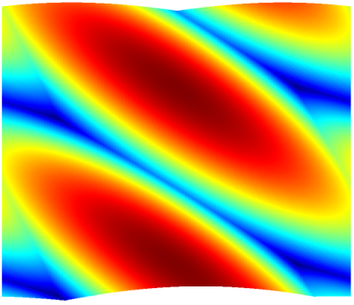 |
| 3 harmonics |

|
| 4 harmonics |
This file describes the Scheme, Ruby, and Forth code included with Snd. To use this code, load the relevant file:
Scheme: (load "dsp.scm") or (load-from-path "dsp.scm") Ruby: load "dsp.rb" Forth: "dsp.fs" file-eval
To start Snd with the file already loaded, snd -l v.scm, or put the load statement in your initialization file. For help with Forth and Snd/CLM, see the Forth documentation section "Snd, CLM, and Fth".
| ||||||||||||||||||||||||||||||||||||||||||||||||||||||||||||||||||||||||||||||||||||||||||||||||||||||||||||||||||||||||
make-butterworth-lowpass order fcut make-butterworth-highpass order fcut make-butterworth-bandpass order flo fhi make-butterworth-bandstop order flo fhi make-chebyshev-lowpass order fcut (ripple-dB 1.0) make-chebyshev-highpass order fcut (ripple-dB 1.0) make-chebyshev-bandpass order flo fhi (ripple-dB 1.0) make-chebyshev-bandstop order flo fhi (ripple-dB 1.0) make-inverse-chebyshev-lowpass order fcut (loss-dB 60.0) make-inverse-chebyshev-highpass order fcut (loss-dB 60.0) make-inverse-chebyshev-bandpass order flo fhi (loss-dB 60.0) make-inverse-chebyshev-bandstop order flo fhi (loss-dB 60.0) make-bessel-lowpass order fcut make-bessel-highpass order fcut make-bessel-bandpass order flo fh make-bessel-bandstop order flo fh make-elliptic-lowpass order fcut (ripple-dB 1.0) (loss-dB 60.0) make-elliptic-highpass order fcut (ripple-dB 1.0) (loss-dB 60.0) make-elliptic-bandpass order flo fhi (ripple-dB 1.0) (loss-dB 60.0) make-elliptic-bandstop order flo fhi (ripple-dB 1.0) (loss-dB 60.0) ;; fcut = cutoff frequency in terms of srate = 1.0, ;; flo = low freq of band, fhi = high freq of band
analog-filter.scm has the usual IIR filters: Butterworth, Chebyshev, inverse Chebyshev, Bessel, and Elliptic filters in lowpass, highpass, bandpass, and bandstop versions. Each of the lowpass and highpass "make" functions returns a filter generator, whereas the bandstop and bandpass make functions return a function of one argument, the current input (the filter generators are built-in in these cases). The filter order should be an even number; very high orders can cause numerical disaster! The elliptic filters depend on GSL, so you'll also need GSL (Snd's configure script includes it by default, if possible).
(map-channel (make-elliptic-lowpass 8 .1)) ; 8th order elliptic with cutoff at .1 * srate
One quick way to see the frequency response of your filter is to create a sound that sweeps a sinewave upward in frequency, run it through the filter, then view the entire sound, treating the x axis as frequency in terms of srate = 1.0 (for convenience):
(define (filter-sweep flt chan)
(let ((phase 0.0)
(freq 0.0)
(incr (/ (* 2 pi) 44100.0))
(samps (seconds->samples 0.5)))
(do ((i 0 (+ i 1)))
((= i samps))
(let ((sval (* .8 (sin phase))))
(set! phase (+ phase freq))
(set! freq (+ freq incr))
(out-any i (flt sval) chan)))))
(with-sound (:channels 5 :output "test.snd")
(filter-sweep (make-butterworth-lowpass 8 .1) 0)
(filter-sweep (make-bessel-lowpass 8 .1) 1)
(filter-sweep (make-chebyshev-lowpass 8 .1) 2)
(filter-sweep (make-inverse-chebyshev-lowpass 8 .1) 3)
(filter-sweep (make-elliptic-lowpass 8 .1) 4))
| IIR filters, order=8, low cutoff at .1 (4410Hz), high cutoff at .3 (13230Hz) |
| 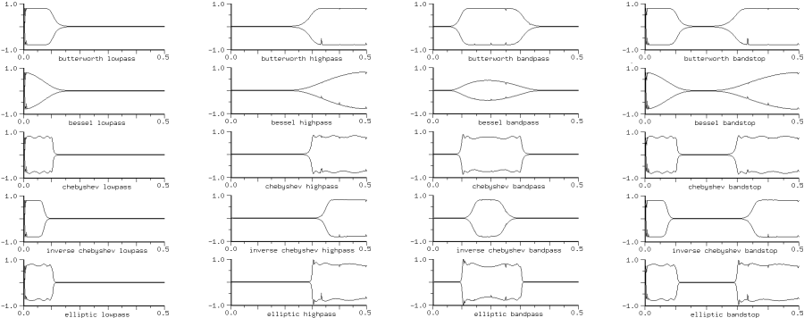 |
People paint birds; why not bird songs? Check out a Hermit Thrush song down 2 or 3 octaves and slowed down as well (via granular synthesis, for example) — incredibly beautiful 2-part microtonal counterpoint. animals.scm contains several synthesized animal sounds: frogs, birds, insects, and one mammal. To hear them all, (calling-all-animals).
Back in 1980, I wanted some bird songs for "Colony", but my stabs at a fake bird song were completely unconvincing. So I went to my battered bird book (Robbins, Bruun, Zim, Singer "Birds of North America" Golden Press, NY 1966) which had sonograms of lots of bird songs. Unfortunately, the graphs were so tiny that I could barely read them:
| 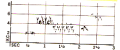 | Lincoln's Sparrow approximately original size, but blurrier due to incredibly bad scanner software. |
Graphs like this became bird.scm. It surprised me that the synthetic song could sound good even with just a sinewave and a couple sketchy envelopes. But squawks and screeches were harder. 27 years later, I tackled animal sounds again, but now using Snd and some extremely high quality recordings, mainly from Cornell. It's not that hard to match some animal sounds; perhaps someone would like to see the steps I took to match a Hairy Woodpecker call (hairy-woodpecker in animals.scm).
Open the Hairy Woodpecker. Find a squawk that seems within reach, and select it.
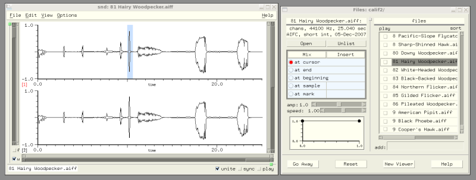Zoom onto the first channel (the vertical slider on the right — we don't care about stereo here), and center the squawk in the time domain window (C-x v). Get the selection duration in seconds. Start the envelope editor dialog (under the Edit menu). Choose "selection" and "wave" in that dialog.
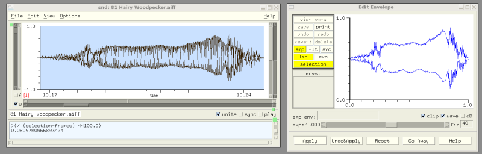Since the goal is a CLM instrument that synthesizes this sound, get a "blank bird", and fill in the duration.
(definstrument (hairy-woodpecker beg amp)
(let* ((start (seconds->samples beg))
(dur 0.08) ; filled in from the selection duration
(stop (+ start (seconds->samples dur)))
(ampf (make-env ; left blank for the moment
:duration dur :scaler amp))
(gen1 (make-oscil))
(frqf (make-env ; ditto
:duration dur :scaler (hz->radians 1.0))))
(do ((i start (+ i 1)))
((= i stop))
(outa i (* (env ampf) ; just a first guess at the synthesis algorithm
(oscil gen1 (env frqf)))))))
Now to get an amplitude envelope, set the y axis limits to be from 0.0 to the selection maxamp:
(set! (y-bounds (selected-sound) (selected-channel)) (list 0 (selection-maxamp)))
I have this action bound to the "m" key in my ~/.snd initialization file. The change is reflected in the envelope editor. We can define the amplitude envelope by approximating the shape. Call it "hairy-amp".
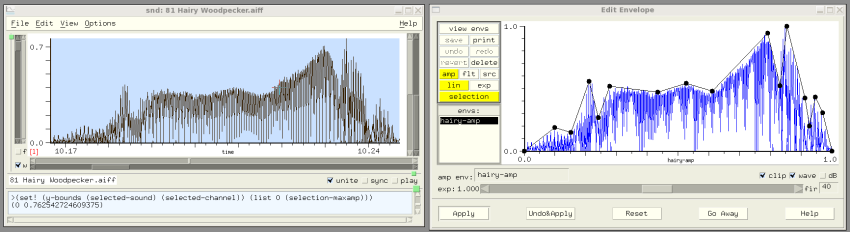Now go to the listener and get the value of hairy-amp as a list of breakpoints. I usually use this function to get the breakpoints:
> (define (clean-string e)
(format #f "(~{~,3F~^ ~})" e))
> (clean-string hairy-amp)
"(0.000 0.000 0.099 0.188 0.152 0.148 0.211 0.558 0.242 0.267 0.278 0.519 0.434 0.472 0.527 0.543 0.612 0.479
0.792 0.941 0.831 0.523 0.854 1.000 0.913 0.422 0.927 0.200 0.946 0.430 0.971 0.304 1.000 0.000 )"
Plug this list into the bird instrument (ampf). Now switch to the FFT view (click "f" and "w"), open the FFT dialog (Options:Transform), choose Blackman10 window, sonogram, 512. In the color dialog, choose the "jet" colormap. In the envelope editor, switch from "amp" to "flt", and resize the dialog window so that its graph fits the displayed spectrum. For fast moving sounds, it's important to align the amp and freq envelopes exactly, but the FFT delays or blurs stuff, so mess with the graph placement until the amplitude envelope and the spectrum match (bright spots at loud spots and so on). I bind the arrow keys to precision movements for this reason (in my ~/.snd file, see move-one-pixel).
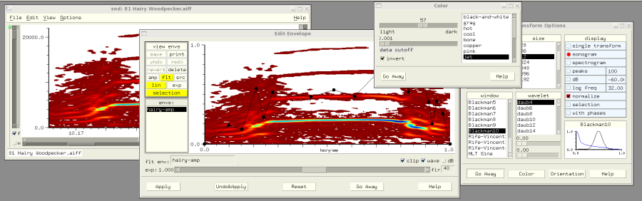Reset the envelope editor (to erase the amp envelope), and press "flt" and "wave" again. Now zoom in to the main spectral component (drag the FFT y axis up), and trace out the frequency curve in the envelope editor. Call it hairy-freq, and get the list of breakpoints as before in the listener. Plug that into the bird instrument. The "scaler" for the frequency envelope is the top of the FFT graph in Hz; it is 10KHz in this case.
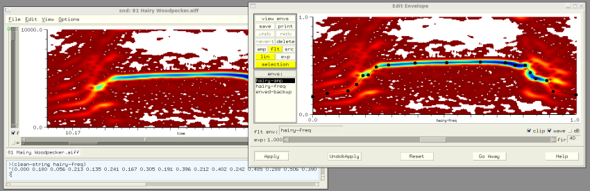
(definstrument (hairy-woodpecker beg amp)
(let* ((start (seconds->samples beg))
(dur 0.08)
(stop (+ start (seconds->samples dur)))
(ampf (make-env '(0.000 0.000 0.099 0.188 0.152 0.148 0.211 0.558 0.242 0.267 0.278 0.519 0.434 0.472
0.527 0.543 0.612 0.479 0.792 0.941 0.831 0.523 0.854 1.000 0.913 0.422 0.927 0.200
0.946 0.430 0.971 0.304 1.000 0.000 )
:duration dur :scaler amp))
(frqf (make-env '(0.000 0.180 0.056 0.213 0.135 0.241 0.167 0.305 0.191 0.396 0.212 0.402 0.242 0.485
0.288 0.506 0.390 0.524 0.509 0.530 0.637 0.537 0.732 0.530 0.770 0.503 0.808 0.503
0.826 0.427 0.848 0.366 0.889 0.345 0.913 0.232 1.000 0.198)
:duration dur :scaler (hz->radians 10000.0)))
(gen1 (make-oscil)))
(do ((i start (+ i 1)))
((= i stop))
(outa i (* (env ampf)
(oscil gen1 (env frqf)))))))
This squawk has more than one component (it is not just a sine wave), and the components follow more or less the same amplitude envelope (so we can use polywave). Go to the "single transform" view (in the Transform dialog), make the FFT size bigger, move the time domain window into about the middle of the call, and get some estimate of the number of components and their relative amplitudes (concentrating for now on the steady state). Change the "make-oscil" to "make-polywave" and give some first stab at the steady-state spectrum:
... (gen1 (make-polywave :partials (list 1 .9 2 .1 3 .01))) ... (polywave gen1 (env frqf)) ...
Load ws.scm, load the current woodpecker code, and listen to the squawk: (with-sound (:play #t) (hairy-woodpecker 0.0 0.5)). Not terrible. If it's cut off during playback, add a dummy silent call to the end: (with-sound (:play #t) (hairy-woodpecker 0.0 0.5) (hairy-woodpecker 0.5 0.0)). We're happy at this stage if it's in the right ballpark.
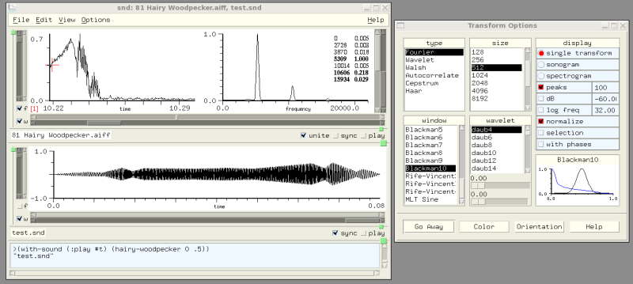The attack and decay sections need work. Returning to either FFT view, it's clear there's a set of components moving together at half the steady state frequency, so add another polywave with its own amplitude envelope:
(definstrument (hairy-woodpecker beg amp)
(let* ((start (seconds->samples beg))
(dur 0.08)
(stop (+ start (seconds->samples dur)))
(ampf (make-env '(0.000 0.000 0.099 0.188 0.152 0.148 0.211 0.558 0.242 0.267 0.278 0.519 0.434 0.472
0.527 0.543 0.612 0.479 0.792 0.941 0.831 0.523 0.854 1.000 0.913 0.422 0.927 0.200
0.946 0.430 0.971 0.304 1.000 0.000 )
:duration dur :scaler amp))
(frqf (make-env '(0.000 0.180 0.056 0.213 0.135 0.241 0.167 0.305 0.191 0.396 0.212 0.402 0.242 0.485
0.288 0.506 0.390 0.524 0.509 0.530 0.637 0.537 0.732 0.530 0.770 0.503 0.808 0.503
0.826 0.427 0.848 0.366 0.889 0.345 0.913 0.232 1.000 0.198)
:duration dur :scaler (hz->radians 10000.0)))
(gen1 (make-polywave :partials (list 1 .9 2 .09 3 .01)))
(gen2 (make-polywave :partials (list 1 .2 2 .1 3 .1 4 .1 5 .1 6 .05 7 .01))) ; attack and decay
(ampf2 (make-env '(0 1 .3 1 .4 0 .75 0 .8 1 1 1) :duration dur :scaler 1.0))) ; its amplitude
(do ((i start (+ i 1)))
((= i stop))
(let ((frq (env frqf)))
(outa i (* (env ampf)
(+ (polywave gen1 frq)
(* (env ampf2)
(polywave gen2 (* 0.5 frq))))))))))
Now patience is the key. Use the speed control to slow playback down by an octave or two. (Perhaps the frequency envelope should end at a higher point?) Keep tweaking the envelopes and spectral amplitudes until it sounds right! Total elapsed time? Two or three hours probably.
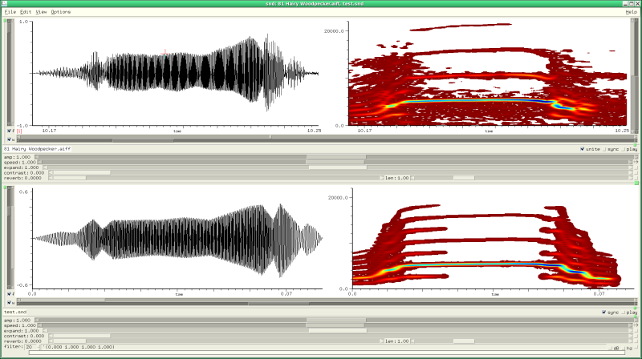animals.scm has all the functions, key bindings, and dialog variable settings mentioned here. They can save you a ton of time.
auto-save cancel-auto-save
The auto-save code sets up a background process that checks periodically for unsaved edits, and if any are found it saves them in a temporary file (the name is the base file name enclosed in "#...#" and placed in the temp-dir directory). The time between checks is set by the variable auto-save-interval which defaults to 60.0 seconds. To start auto-saving, (load "autosave.scm"). Thereafter (cancel-auto-save) stops autosaving, and (auto-save) restarts it.
bess.scm creates a dialog (named "FM Forever!"), opens the DAC, puts up a bunch of scale widgets, and starts two CLM oscils doing frequency modulation in semi-real-time (how "real-time" it is depends on your audio setup). Michael Scholz has contributed a Ruby translation of this with many improvements: bess.rb.
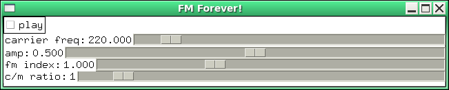
;; bess opens the DAC and continuously sends the following:
(* amp
(oscil carosc
(+ (hz->radians frequency)
(* index (oscil modosc
(hz->radians (* ratio frequency)))))))
bess1.scm and bess1.rb give you real-time GUI-based control over the fm-violin while it cycles around in a simple compositional algorithm. Both were written by Michael Scholz, based on CLM's bess5.cl and rt.lisp.
read|write-l|bint16|32|64 read|write-l|bfloat32|64 read|write-chars|string read|write-au-header
This file has functions to read and write numbers and strings to and from binary files. The function names are similar to those used for sample-type names, so for example, read-bint32 reads the next 4 bytes from the current input port, interpreting them as a big-endian 32-bit integer.
bird start dur frequency freqskew amplitude freq-envelope amp-envelope bigbird start dur frequency freqskew amplitude freq-envelope amp-envelope partials one-bird beg maxdur func birdname make-birds (output-file "test.snd")
bird.scm is a translation of the Sambox/CLM bird songs. The two instruments set up a sine wave (bird) and waveshaping synthesis (bigbird). Use a low-pass filter for distance effects (a bird song sounds really silly reverberated). All the real information is in the amplitude and frequency envelopes. These were transcribed from sonograms found in some bird guides and articles from the Cornell Ornithology Lab. Many of these birds were used in "Colony". To hear all the birds, (make-birds). This writes the sequence out as "test.snd" using with-sound. Waveshaping is described in Le Brun, "Digital Waveshaping Synthesis", JAES 1979 April, vol 27, no 4, p250. The lines
...
(coeffs (partials->polynomial (normalize-partials partials)))
...
(polynomial coeffs
(oscil os (env gls-env))))))
setup and run the waveshaping synthesis (in this case it's just a fast additive synthesis). partials->polynomial calculates the Chebyshev polynomial coefficients given the desired spectrum; the spectrum then results from driving that polynomial with an oscillator. Besides the bird guides, there are now numerous recordings of birds that can be turned into sonograms and transcribed as envelopes. sndclm.html has the code for the bird instrument in several languages.
This file provides a set of noise reduction functions packaged up in:
clean-channel snd chn clean-sound snd
clean-channel tries to fix up clicks, pops, hum, DC offset, clipped portions, and hiss using a variety of functions from dsp.scm. The final low-pass filter is relatively conservative (that is, it's not a very intense filter), so you may want to run another filter over the data after calling clean-channel.
There is no built-in noise reduction function in Snd. I believe the most common such function is some variant of Perry Cook's Scrubber program (see anoi in clm-ins.scm or fft-squelch in examp.scm). Secondary tricks involve smoothing functions similar to smooth-channel, and enveloping to silence stuff between tracks, and so on. clean-channel came about when I blithely offered to clean up some recorded telephone conversations. The first step was to find the clipped locations (where the conversation was accidentally over-recorded). I did this first because there were places in the recordings where the DC offset was huge, causing clipping in a signal that would otherwise have been safe. I hoped to reconstruct the signal at the clipped points, but these would be hard to find once the DC was removed. A quick check:
(count-matches (lambda (y) (not (>= 0.9999 y -0.9999))))
returned 5437 (in 18 minutes of sound). That seemed high, and I thought "maybe those are just one sample clicks that can easily be smoothed over", so
(define* (count-clips snd chn)
(let ((y0 0.0))
(count-matches
(lambda (y) (let ((val (not (or (>= 0.9999 y0 -0.9999)
(>= 0.9999 y -0.9999)))))
(set! y0 y)
val))
0 snd chn)))
But this returned 4768! I made a list of clipped portions (this function has at least one bug, but I plowed past it — no time for perfection...):
(define* (list-clips snd chn)
(let ((clip-data (make-vector (* 2 (count-clips snd chn)) 0))
(clip-ctr 0)
(clip-beg 0)
(clip-end 0)
(clip-max-len 0)
(in-clip #f)
(samp 0))
(scan-channel
(lambda (y)
(if (not (<= -0.9999 y 0.9999))
(begin
(unless in-clip
(set! in-clip #t)
(set! clip-beg samp))
(set! clip-end samp))
(if in-clip
(begin
(set! in-clip #f)
(set! (clip-data clip-ctr) clip-beg)
(set! (clip-data (+ 1 clip-ctr)) clip-end)
(set! clip-max-len (max clip-max-len (- (+ clip-end 1) clip-beg)))
(set! clip-ctr (+ clip-ctr 2)))))
(set! samp (+ 1 samp))
#f)) ; make sure scan doesn't quit prematurely
(list clip-ctr clip-max-len clip-data)))
which returned a vector of 669 clipped portions, the worst being 42 samples long! I saved that data in a separate file, just in case of disaster:
(with-output-to-file "clips" (lambda () (display (list-clips))))
I decided to try to reconstruct the clipped portions before filtering them. This produced sample values outside -1.0 to 1.0, so I reset the graph y bounds:
(set! (y-bounds) (list -1.5 1.5))
Now to conjure up a plausible sine wave between the clip begin and end points. (This is also "just-good-enough" software).
(define (fix-clip clip-beg-1 clip-end-1)
(and (> clip-end-1 clip-beg-1)
(let* ((dur (- (+ clip-end-1 1) clip-beg-1))
(samps (channel->float-vector (- clip-beg-1 4) (+ dur 9)))
(clip-beg 3)
(clip-end (+ dur 4)))
(let ((samp0 (samps clip-beg))
(samp1 (samps clip-end)))
(unless (>= 0.99 samp0 -0.99)
;; weird! some of the clipped passages have "knees"
;; this looks nuts, but no time to scratch my head
(set! clip-beg (- clip-beg 1))
(set! samp0 (samps clip-beg))
(unless (>= 0.99 samp0 -0.99)
(set! clip-beg (- clip-beg 1))
(set! samp0 (samps clip-beg))))
(unless (>= 0.99 samp0 -0.99)
(set! clip-end (+ 1 clip-end))
(set! samp1 (samps clip-end))
(unless (>= 0.99 samp0 -0.99)
(set! clip-end (+ 1 clip-end))
(set! samp1 (samps clip-end))))
;; now we have semi-plausible bounds
;; make sine dependent on rate of change of current
(let* ((samp00 (samps (- clip-beg 1)))
(samp11 (samps (+ 1 clip-end)))
(dist (- clip-end clip-beg))
(incr (/ pi dist))
(amp (* .125 (+ (abs (- samp0 samp00)) (abs (- samp1 samp11))) dist)))
(if (> samp0 0.0)
;; clipped at 1.0
(do ((i (+ 1 clip-beg) (+ i 1))
(angle incr (+ angle incr)))
((= i clip-end))
(set! (samps i) (+ 1.0 (* amp (sin angle)))))
;; clipped at -1.0
(do ((i (+ 1 clip-beg) (+ i 1))
(angle incr (+ angle incr)))
((= i clip-end))
(set! (samps i) (- -1.0 (* amp (sin angle))))))
(float-vector->channel samps (- clip-beg-1 4)))))))
(define (fix-it n)
;; turn off graphics and fix all the clipped sections
(set! (squelch-update) #t)
(do ((i 0 (+ i 1)))
((= i n))
;; "clips" here is a list form of the earlier vector of clip locations
(fix-clip (clips (* i 2))
(clips (+ 1 (* i 2)))))
(set! (squelch-update) #f))
(fix-it 669)
This produced 418 edits, with a maxamp of 2.26. So scale it back down: (scale-to .9). Next I ran some large ffts to see what sort of overall spectrum I had: (set! (transform-size) (expt 2 23)). This showed a massive DC component, and numerous harmonics of 60 Hz. I decided to get rid of the portions that were clearly noise. Since I was dealing with telephone recordings, I assumed anything under 40 Hz or above 4000 Hz was extraneous:
(define* (notch-out-rumble-and-hiss snd chn)
(let ((cur-srate (exact->inexact (srate snd))))
(filter-sound
(list 0.0 0.0 ; get rid of DC
(/ 80.0 cur-srate) 0.0 ; get rid of anything under 40 Hz (1.0=srate/2 here)
(/ 90.0 cur-srate) 1.0 ; now the passband
(/ 7000.0 cur-srate) 1.0
(/ 8000.0 cur-srate) 0.0 ; end passband (40..4000)
1.0 0.0) ; get rid of some of the hiss
;; since I'm assuming the minimum band is 10 Hz here,
;; cur-srate/10 rounded up to next power of 2 seems a safe filter size
;; filter-sound will actually use overlap-add convolution in this case
(floor (expt 2 (ceiling (log (/ cur-srate 10.0) 2))))
snd chn)))
(notch-out-rumble-and-hiss)
By now it was obvious I needed a simple way to play portions of the sound before and after an edit, sometimes with a tracking cursor. So I bound a few keys:
(define (play-from-cursor current)
(play (cursor) #f #f #f #f (and (not current) (- (edit-position) 1))))
(define (play-from-cursor-with-tracking current)
;; patterned after pfc in extsnd.html
(let ((old-tracking (with-tracking-cursor)))
(set! (with-tracking-cursor) #t)
(hook-push stop-playing-hook
(lambda (hook)
(set! (with-tracking-cursor) old-tracking)))
(play (cursor) #f #f #f #f (and (not current) (- (edit-position) 1)))))
(bind-key #\p 0 (lambda ()
"play from cursor"
(play-from-cursor #t) keyboard-no-action))
(bind-key #\P 0 (lambda ()
"play previous from cursor"
(play-from-cursor #f) keyboard-no-action))
(bind-key #\p 4 (lambda ()
"play from cursor with tracking"
(play-from-cursor-with-tracking #t) keyboard-no-action))
In words, if the mouse is in the channel graph, 'p' plays from the cursor, 'P' plays the previous version from the cursor, and 'C-p' plays from the cursor with a "tracking cursor". In several of the sections (the overall sound consisted of a couple dozen separate conversations), there was a loud mid-range tone. To figure out what its component frequencies were, I FFT'd a portion containing only that noise and got this spectrum (plus a zillion other peaks that didn't look interesting):
((425 .05) (450 .01) (546 .02) (667 .01) (789 .034) (910 .032) (470 .01))
To hear that, I passed this list to play-sines:
(play-sines '((425 .05) (450 .01) (546 .02) (667 .01) (789 .034) (910 .032) (470 .01)))
And to my surprise, the result was close to the main portion of the hum. So now to notch out those frequencies, and see what is left: (notch-sound (list 425 450 470 546 667 789 910) #f 1 10). This erased most of the hum, but it also changed the timbre of the voices which wasn't acceptable. I goofed around with the notch-width and filter-size parameters, looking for something that would still do the trick without removing the personal side of the voices, but in only a few cases was the result usable. What was being said was not very important, but the individual characteristics of each voice were.
The next step was to take out noisy sections between snippets, mostly using (env-selection '(0 1 1 0 10 0 11 1)) and equalizing each snippet, more or less, with scale-selection-by. There were a few "you-are-being-recorded" beeps which I deleted (via the Edit menu delete selection option). In some of the conversations, between sections of speech the background hum would gradually increase, then the voice would abruptly start with a large peak amplitude. These were fixed mostly with small-section scale-by's and envelopes. In the female voice sections, it seemed to help to: (filter-selection '(0 0 .01 0 .02 1 1 1) 1024) which got rid of some of the rumble without noticeably affecting the vocal timbre.
These are instruments from CLM translated for use in Snd. All expect to be called within with-sound or some equivalent environment. This set of instruments is a bit of a grab-bag; some are just examples of synthesis techniques; a few others are historical, rather than useful. If I were using, for example, the fm trumpet, I'd remove all the attack and decay parameters, moving that up a level to Common Music or whoever calls the trumpet, and combine several other parameters to reflect the desired output, rather than the details of the algorithm; 30 parameters could be reduced to less than 10, and the resulting instrument would be much easier to use. But, it is an historical artifact, so I'm reluctant to change it.
To try out any of these instruments, start Snd, load ws.scm and clm-ins.scm, then paste the with-sound call into the listener. It will automatically write the new sound file and open it in Snd.
anoi file start dur (fftsize 128) (amp-scaler 1.0) (r 6.28)
anoi is a stab at noise reduction based on Perry Cook's Scrubber.m. It tracks an on-going average spectrum, then tries to squelch that, obviously aimed at reducing background noise in an intermittent signal.
(with-sound () (anoi "now.snd" 0 2))
attract beg dur amp c
attract is a translation to CLM of an instrument developed by James McCartney (CMJ vol 21 no 3 p 6), based on a "chaotic" equation. 'c' should be between 1 and 10 or thereabouts.
(with-sound () (attract 0 1 .1 1) (attract 1 1 .1 5))
bes-fm beg dur freq amp ratio index
bes-fm is J1(J1): (bes-j1 (* index (bes-j1 phase))); it uses the Bessel functions where FM uses sinusoids. J0 is also good in this context,
and the few other Jn options that I've tried were ok.
Scheme: (with-sound () (bes-fm 0 1 440 10.0 1.0 4.0)) Ruby: with_sound() do bes_fm(0, 0.5, 440, 5, 1, 8) end
So why does this work? My "back-of-the-envelope" guess is that the Bessel functions are basically a bump at the start followed by a decaying sinusoid, so the bump gives us a percussive attack, and the damped sinusoid gives us a dynamic spectrum, mimicking FM more or less. The Bessel functions I0, Jn, and Yn are built-in; Kn and In are implemented in Scheme in snd-test.scm. See bess and friends for many more examples.
canter beg dur freq amp ...
canter is half of a bagpipe instrument developed by Peter Commons (the other portion is drone below). The (required) trailing parameters are:
deg dis pcrev ampfun ranfun skewfun skewpc ranpc ranfreq indexfun atdr dcdr ampfun1 indfun1 fmtfun1 ampfun2 indfun2 fmtfun2 ampfun3 indfun3 fmtfun3 ampfun4 indfun4 fmtfun4
Here is a portion of a bagpipe tune:
(let ((fmt1 '(0 1200 100 1000))
(fmt2 '(0 2250 100 1800))
(fmt3 '(0 4500 100 4500))
(fmt4 '(0 6750 100 8100))
(amp1 '(0 .67 100 .7))
(amp2 '(0 .95 100 .95))
(amp3 '(0 .28 100 .33))
(amp4 '(0 .14 100 .15))
(ind1 '(0 .75 100 .65))
(ind2 '(0 .75 100 .75))
(ind3 '(0 1 100 1))
(ind4 '(0 1 100 1))
(skwf '(0 0 100 0))
(ampf '(0 0 25 1 75 1 100 0))
(ranf '(0 .5 100 .5))
(index '(0 1 100 1))
(solid '(0 0 5 1 95 1 100 0))
(bassdr2 '(.5 .06 1 .62 1.5 .07 2.0 .6 2.5 .08 3.0 .56 4.0 .24 5 .98 6 .53 7
.16 8 .33 9 .62 10 .12 12 .14 14 .86 16 .12 23 .14 24 .17))
(tenordr '(.3 .04 1 .81 2 .27 3 .2 4 .21 5 .18 6 .35 7 .03 8 .07 9 .02 10 .025 11 .035)))
(with-sound (:reverb nrev)
(drone .000 4.000 115.000 (* .25 .500) solid bassdr2 .100 .500 .030 45.000 1 .010 10)
(drone .000 4.000 229.000 (* .25 .500) solid tenordr .100 .500 .030 45.000 1 .010 11)
(drone .000 4.000 229.500 (* .25 .500) solid tenordr .100 .500 .030 45.000 1 .010 9)
(canter .000 2.100 918 (* .25 .700) 45.000 1 .050 ampf ranf skwf
.050 .010 10 index .005 .005 amp1 ind1 fmt1 amp2 ind2 fmt2 amp3 ind3 fmt3 amp4 ind4 fmt4)
(canter 2.100 .300 688.5 (* .25 .700) 45.000 1 .050 ampf ranf skwf
.050 .010 10 index .005 .005 amp1 ind1 fmt1 amp2 ind2 fmt2 amp3 ind3 fmt3 amp4 ind4 fmt4)
(canter 2.400 .040 826.2 (* .25 .700) 45.000 1 .050 ampf ranf skwf
.050 .010 10 index .005 .005 amp1 ind1 fmt1 amp2 ind2 fmt2 amp3 ind3 fmt3 amp4 ind4 fmt4)
(canter 2.440 .560 459 (* .25 .700) 45.000 1 .050 ampf ranf skwf
.050 .010 10 index .005 .005 amp1 ind1 fmt1 amp2 ind2 fmt2 amp3 ind3 fmt3 amp4 ind4 fmt4)
(canter 3.000 .040 408 (* .25 .700) 45.000 1 .050 ampf ranf skwf
.050 .010 10 index .005 .005 amp1 ind1 fmt1 amp2 ind2 fmt2 amp3 ind3 fmt3 amp4 ind4 fmt4)
(canter 3.040 .040 619.65 (* .25 .700) 45.000 1 .050 ampf ranf skwf
.050 .010 10 index .005 .005 amp1 ind1 fmt1 amp2 ind2 fmt2 amp3 ind3 fmt3 amp4 ind4 fmt4)
(canter 3.080 .040 408 (* .25 .700) 45.000 1 .050 ampf ranf skwf
.050 .010 10 index .005 .005 amp1 ind1 fmt1 amp2 ind2 fmt2 amp3 ind3 fmt3 amp4 ind4 fmt4)
(canter 3.120 .040 688.5 (* .25 .700) 45.000 1 .050 ampf ranf skwf
.050 .010 10 index .005 .005 amp1 ind1 fmt1 amp2 ind2 fmt2 amp3 ind3 fmt3 amp4 ind4 fmt4)
(canter 3.160 .290 459 (* .25 .700) 45.000 1 .050 ampf ranf skwf
.050 .010 10 index .005 .005 amp1 ind1 fmt1 amp2 ind2 fmt2 amp3 ind3 fmt3 amp4 ind4 fmt4)
(canter 3.450 .150 516.375 (* .25 .700) 45.000 1 .050 ampf ranf skwf
.050 .010 10 index .005 .005 amp1 ind1 fmt1 amp2 ind2 fmt2 amp3 ind3 fmt3 amp4 ind4 fmt4)
(canter 3.600 .040 826.2 (* .25 .700) 45.000 1 .050 ampf ranf skwf
.050 .010 10 index .005 .005 amp1 ind1 fmt1 amp2 ind2 fmt2 amp3 ind3 fmt3 amp4 ind4 fmt4)
(canter 3.640 .040 573.75 (* .25 .700) 45.000 1 .050 ampf ranf skwf
.050 .010 10 index .005 .005 amp1 ind1 fmt1 amp2 ind2 fmt2 amp3 ind3 fmt3 amp4 ind4 fmt4)
(canter 3.680 .040 619.65 (* .25 .700) 45.000 1 .050 ampf ranf skwf
.050 .010 10 index .005 .005 amp1 ind1 fmt1 amp2 ind2 fmt2 amp3 ind3 fmt3 amp4 ind4 fmt4)
(canter 3.720 .180 573.75 (* .25 .700) 45.000 1 .050 ampf ranf skwf
.050 .010 10 index .005 .005 amp1 ind1 fmt1 amp2 ind2 fmt2 amp3 ind3 fmt3 amp4 ind4 fmt4)
(canter 3.900 .040 688.5 (* .25 .700) 45.000 1 .050 ampf ranf skwf
.050 .010 10 index .005 .005 amp1 ind1 fmt1 amp2 ind2 fmt2 amp3 ind3 fmt3 amp4 ind4 fmt4)
(canter 3.940 .260 459 (* .25 .700) 45.000 1 .050 ampf ranf skwf
.050 .010 10 index .005 .005 amp1 ind1 fmt1 amp2 ind2 fmt2 amp3 ind3 fmt3 amp4 ind4 fmt4)))
It is not easy to keep track of all these arguments in a long note-list; hence the development of programs such as Score (Leland Smith), Pla (yers truly), and Common Music (Rick Taube). The full note list is bag.clm in the CLM tarball.
cellon beg dur freq amp ...
cellon, developed by Stanislaw Krupowiecz, uses feedback FM as in some old synthesizers. There's a brief discussion of it in fm.html. The trailing parameters are:
ampfun betafun beta0 beta1 betaat betadc ampat ampdc dis pcrev deg pitch1 glissfun glissat glissdc pvibfreq pvibpc pvibfun pvibat pvibdc rvibfreq rvibpc rvibfun
and I actually don't know what they all do. I think they're dealing with attack and decay portions of envelopes; in the old days we felt we had to store one envelope, then kludge around with attack and decay timings to bash that envelope into the correct shape; this made instruments needlessly messy. Here's a call:
(with-sound ()
(cellon 0 2 220 .1 '(0 0 25 1 75 1 100 0) '(0 0 25 1 75 1 100 0) .75 1.0 0 0 0 0 1 0 0 220
'(0 0 25 1 75 1 100 0) 0 0 0 0 '(0 0 100 0) 0 0 0 0 '(0 0 100 0)))
The use of x axis values between 0 and 100, rather than 0.0 and 1.0 is a dead give-away that this is really ancient stuff.
clm-expsrc beg dur input-file exp-ratio src-ratio amp rev start-in-file
clm-expsrc can stretch or compress a sound (using granular synthesis) while optionally changing its sampling rate. 'exp-ratio' sets the expansion amount (greater than 1.0 makes the sound longer), and 'src-ratio' sets the sampling rate change (greater than 1.0 makes it higher in pitch). So to make a sound twice as long, but keep the pitch the same:
(with-sound () (clm-expsrc 0 4 "oboe.snd" 2.0 1.0 1.0))
'start-in-file' sets where we start reading the input file (in seconds); it defaults to 0.0.
drone beg dur freq amp ampfun synth ampat ampdc amtrev deg dis rvibamt rvibfreq
This is the other half of Peter Common's bagpipe — see canter above. 'synth' is a list of partials loaded into a table and read via table-lookup.
expandn time duration file amp ...
Here is the documentation from Rick Taube's granular synthesis page, edited slightly for the Scheme CLM.
The expandn instrument by Michael Klingbeil performs granular syntheisis by time-stretching (expanding/compressing) an input file. This effect is achieved by chopping up the input sound into very small segments (grains) that are then overlayed in the ouput stream. The larger the segments, the more the output sound is smeared, an effect approaching reverberation. The expandn instrument parameters are:
time duration filename amplitude (expand 1.0) (matrix #f) (ramp 0.4) (seglen 0.15) (srate 1.0) (hop .05) (amp-env '(0 0 50 1 100 0)) (input-start 0.0) (grain-amp 0.8) (reverb #f)
'time' is the start time of the sound in the output file. 'duration' is the duration of expanded sound. To expand an entire sound, set this to the expansion factor times the input sound's duration. 'filename' is the input file to expand. 'amplitude' is a scaler on the amplitude of the input file. Since the output is created by overlaying many copies of the intput this value is generally less than 1. 'hop' can be a number or an envelope. It is the average length in time between segments (grains) in the output. 'expand' can be a number or an envelope. It sets the amount of expansion to produce in the output file. 'seglen'can be a number or an envelope. It is the length in time of the sound segments (grains). 'srate' can be a number or an envelope. It sets the sampling rate change to apply to the output file. 'amp-env' is the amplitude envelope for the output sound. 'input-start' sets where to start reading in the input file. 'grain-amp' is a scaler on each grain's amplitude. 'matrix' is a list, a mixing matrix. 'reverb' is the reverb amount.
expfil start duration hopsecs rampsecs steadysecs file1 file2
expfile interleaves two granular synthesis processes (two readers pasting in tiny sections of their file, one after the other).
(with-sound () (expfil 0 2 .2 .01 .1 "oboe.snd" "fyow.snd") (expfil 2 2 .01 .01 .02 "oboe.snd" "fyow.snd"))
exp-snd file beg dur amp (exp-amt 1.0) (ramp .4) (seglen .15) (sr 1.0) (hop .05) ampenv
exp-snd is a granular synthesis instrument with envelopes on the expansion amount ('exp-amt' as a list), segment ramp steepness ('ramp' as a list), segment length ('seglen' as a list), hop length ('hop' as a list), amplitude ('ampenv'), and resampling rate ('sr' as a list). In the next example, the expansion amount in both calls goes from 1 to 3 over the course of the note, the ramp time and segment lengths stay the same, the sampling rate changes from 2 to 0.5, and the hop stays the same (.05 in the first, and .2 in the second).
(with-sound () (exp-snd "fyow.snd" 0 3 1 '(0 1 1 3) 0.4 .15 '(0 2 1 .5) 0.05) (exp-snd "oboe.snd" 1 3 1 '(0 1 1 3) 0.4 .15 '(0 2 1 .5) 0.2))
fm-bell beg dur frequency amplitude amp-env index-env indexfm-bell is an FM instrument developed by Michael McNabb in Mus10 in the late '70s. It is intended for low bell sounds (say middle C or so). The lines
(mod1 (make-oscil (* frequency 2))) (mod2 (make-oscil (* frequency 1.41))) (mod3 (make-oscil (* frequency 2.82))) (mod4 (make-oscil (* frequency 2.4))) (car1 (make-oscil frequency)) (car2 (make-oscil frequency)) (car3 (make-oscil (* frequency 2.4)))set up three FM pairs, car1 and mod1 handling the basic harmonic spectra, car2 and mod2 creating inharmonic spectra (using the square root of 2 more or less at random), and car3 and mod3 putting a sort of formant at the minor third (2.4 = a ratio of 12/5 = octave+6/5 = minor tenth).
(with-sound ()
(fm-bell 0.0 2.0 220.0 .5
'(0 0 .1000 1 10 .6000 25 .3000 50 .1500 90 .1000 100 0)
'(0 1 2 1.1000 25 .7500 75 .5000 100 .5000)
0.5))
fm-drum beg dur freq amp ind (high #f) (deg 0.0) (dist 1.0) (rev-amount 0.01)
The fm-drum uses "cascade FM" (see fm.html); it was developed by Jan Mattox.
(with-sound () (fm-drum 0 1.5 55 .3 5 #f) (fm-drum 1.5 1.5 66 .3 4 #t))
fm-insect beg dur freq amp ampenv modfreq modskew modenv index indexenv fmindex ratio deg dist rev
The fm-insect started as an attempt to get cicada sounds from FM (for the 5th movement of "Colony"), but ended with:
(with-sound (:srate 22050)
(let ((locust '(0 0 40 1 95 1 100 .5))
(bug_hi '(0 1 25 .7 75 .78 100 1))
(amp '(0 0 25 1 75 .7 100 0)))
(fm-insect 0 1.699 4142.627 .015 amp 60 -16.707 locust 500.866 bug_hi .346 .500)
(fm-insect 0.195 .233 4126.284 .030 amp 60 -12.142 locust 649.490 bug_hi .407 .500)
(fm-insect 0.217 2.057 3930.258 .045 amp 60 -3.011 locust 562.087 bug_hi .591 .500)
(fm-insect 2.100 1.500 900.627 .06 amp 40 -16.707 locust 300.866 bug_hi .346 .500)
(fm-insect 3.000 1.500 900.627 .06 amp 40 -16.707 locust 300.866 bug_hi .046 .500)
(fm-insect 3.450 1.500 900.627 .09 amp 40 -16.707 locust 300.866 bug_hi .006 .500)
(fm-insect 3.950 1.500 900.627 .12 amp 40 -10.707 locust 300.866 bug_hi .346 .500)
(fm-insect 4.300 1.500 900.627 .09 amp 40 -20.707 locust 300.866 bug_hi .246 .500)))
See animals.scm for much more convincing insect calls.
fm-trumpet beg dur ...
This is Dexter Morrill's FM-trumpet; see CMJ feb 77 p51.
(with-sound () (fm-trumpet 0 .25))
As with many instruments from that era, it has a million parameters:
beg dur (frq1 250.0) (frq2 1500.0) (amp1 0.5) (amp2 0.1)
(ampatt1 0.03) (ampdec1 0.35) (ampatt2 0.03) (ampdec2 0.3)
(modfrq1 250.0) (modind11 0.0) (modind12 2.66)
(modfrq2 250.0) (modind21 0.0) (modind22 1.8)
(rvibamp 0.007) (rvibfrq 125.0) (vibamp 0.007) (vibfrq 7.0) (vibatt 0.6) (vibdec 0.2)
(frqskw 0.03) (frqatt 0.06)
(ampenv1 '(0 0 25 1 75 .9 100 0)) (ampenv2 '(0 0 25 1 75 .9 100 0))
(indenv1 '(0 0 25 1 75 .9 100 0)) (indenv2 '(0 0 25 1 75 .9 100 0))
(degree 0.0) (distance 1.0) (reverb-amount 0.005)
The pitch depends on the 'modfrq1' and 'modfrq2' parameters, as well as 'frq1' and 'frq2':
(with-sound () (fm-trumpet 0 1 :frq1 400 :frq2 1600 :modfrq1 400 :modfrq2 400))
fm-voice beg dur ...
This is John Chowning's FM voice instrument, used in "Phone" I think. It is in jcvoi.scm, not clm-ins.scm. Its parameters are:
beg dur pitch amp vowel-1 sex-1 ampfun1 ampfun2 ampfun3 indxfun skewfun vibfun ranfun dis pcrev deg vibscl pcran skewscl ranpower glissfun glissamt
Here's an example:
(let ((ampf '(0 0 1 1 2 1 3 0)))
(with-sound (:play #t)
(fm-voice 0 1 300 .8 3 1 ampf ampf ampf ampf ampf ampf ampf 1 0 0 .25 .01 0 ampf .01)))
fofins beg dur frq amp uvib f0 a0 f1 a1 f2 a2 (amp-env '(0 0 1 1 2 1 3 0))
fofins is an implementation of FOF synthesis, taken originally from fof.c of Perry Cook and the article "Synthesis of the Singing Voice" by Bennett and Rodet in "Current Directions in Computer Music Research" (MIT Press). FOF synthesis sets up a wave with the desired spectrum (to mimic vocal formats, for example), then calls wave-train to turn that into a tone. fofins just adds an amplitude envelope and vibrato. In the Scheme version, there is also an optional trailing vibrato envelope argument (this is slightly different from the CL version):
(with-sound () ; slowly ramp up the vibrato
(fofins 0 4 270 .1 0.005 730 .6 1090 .3 2440 .1
'(0 0 .5 1 3 .5 10 .2 20 .1 50 .1 60 .2 85 1 100 0)
'(0 0 40 0 75 .2 100 1) )
(fofins 0 4 648 .1 0.005 730 .6 1090 .3 2440 .1 ;648 (* 6/5 540)
'(0 0 .5 .5 3 .25 6 .1 10 .1 50 .1 60 .2 85 1 100 0)
'(0 0 40 0 75 .2 100 1) )
(fofins 0 4 135 .1 0.005 730 .6 1090 .3 2440 .1
'(0 0 1 3 3 1 6 .2 10 .1 50 .1 60 .2 85 1 100 0)
'(0 0 40 0 75 .2 100 1)))
fullmix infile beg outdur inbeg matrix srate reverb-amount
fullmix is a complicated way to mix stuff. It's built into the CL version of CLM, so there was clamor for some sort of replacement in other versions of CLM. fullmix provides a sound file mixer that can handle any number of channels of data in and out with scalers and envelopes on any path, sampling rate conversion, reverb — you name it! 'infile' is the file to be mixed:
(with-sound () (fullmix "pistol.snd")) ; this places pistol.snd at time 0
'beg' is the start time of the mix in the output sound; 'outdur' is the duration of the mixed-in portion in the output; 'inbeg' is where to start the mix in the input file:
(with-sound () (fullmix "pistol.snd" 1.0 2.0 0.25)) ;; start at 0.25 in pistol.snd, include next 2 secs, put at time 1.0 in output
'srate' is the amount of sampling rate conversion to apply, and 'reverb' is the amount of the signal to send to the reverberator:
(with-sound (:reverb nrev) (fullmix "pistol.snd" 1.0 2.0 0.25 #f 2.0 0.1)) ; up an octave, lots of reverb!
The 'matrix' parameter is much harder to describe. It is either a number or a list of lists. In the first case, that number is the amplitude scaler on the output:
(with-sound (:reverb nrev) (fullmix "pistol.snd" 1.0 2.0 0.25 0.2 2.0 0.1)) ; same but much softer (0.2 amp)
If 'matrix' is a list of lists, each element of the inner lists can be either a number or list a breakpoints (an envelope). If a number, it is treated as an amplitude scaler for that input and output channel combination. Each inner list represents an input channel, so if we have a stereo input file going to a stereo output file and we want the channels to be mixed straight, but channel 0 at .5 amp and channel 1 at .75:
(with-sound (:channels 2) (fullmix "2a.snd" #f #f #f '((0.5 0.0) (0.0 0.75)))) ;; ^ ^ ^ ^ ;; | | | | ;; 0->0 | 1->0 | ;; 0->1 1->1
So, 2a.snd's first channel gets mixed into the output's first channel, scaled by 0.5, and its second channel goes to the output second channel scaled by 0.75. If we have four channels in and are writing a mono file, and want to mix in only the second channel of the input:
(with-sound (:channels 1) (fullmix "4.aiff" #f #f #f '((0.0) (1.0) (0.0) (0.0))))
The next complication is that each entry in the inner lists can also be a list of envelope breakpoints. In that case, an envelope is applied to that portion of the mix, rather than just a scaler:
(with-sound (:channels 2) (fullmix "oboe.snd" #f #f #f (list (list (list 0 0 1 1 2 0) 0.5)))) ;; mono input so one list, envelope output chan 0, scale output chan 1 (two copies of input)
And finally(!) each inner list element can also be a CLM env generator:
(with-sound (:channels 2) (fullmix "oboe.snd" 1 2 0 (list (list .1 (make-env '(0 0 1 1) :duration 2 :scaler .5)))))
Here's a Ruby example:
with_sound(:channels, 2, :statistics, true) do
fullmix("pistol.snd")
fullmix("oboe.snd", 1, 2, 0, [[0.1, make_env([0, 0, 1, 1], :duration, 2, :scaler, 0.5)]])
end
"srate" can be negative (meaning read in reverse) or a list or breakpoints (an src envelope). Now we need filters!
gong beg dur freq amp (degree 0.0) (distance 1.0) (reverb-amount 0.005)
gong is an FM instrument developed by Paul Weineke.
Scheme: (with-sound () (gong 0 3 261.61 .3)) Ruby: with_sound() do gong(0, 3, 261.61, 0.6) end
gran-synth beg dur freq grain-dur grain-hop amp
gran-synth sets up a wave-train playing an enveloped sinusoid (the "grain" in this case). 'grain-dur' sets the grain's length (in seconds), 'grain-hop' sets the frequency of the wave-train generator (how quickly the grain is repeated), and 'freq' sets the grain sinusoid's frequency.
(with-sound () (gran-synth 0 1 300 .0189 .03 .4)) ; grain freq 300Hz, repetition rate 33Hz
graphEq file beg dur or-beg amp (amp-env '(0 1.0 0.8 1.0 1.0 0.0)) (amp-base 1.0) ...
graphEq is a sort of non-graphical graphical equalizer, developed by Marco Trevisani. It sets up a bank of formant generators with an optional envelope on each formant, then filters and envelopes the input file. Its trailing parameters are:
(offset-gain 0) (gain-freq-list '((0 1 1 0) 440 (0 0 1 1) 660)) (filt-gain-scale 1) (filt-gain-base 1) (a1 .99) (stats #t)
'a1' is the formant radius. 'gain-freq-list' is a list of gains and frequencies to filter The gains can be either numbers or envelopes (one or the other, not a mixture). 'offset-gain' is an offset (addition) to all the gains. 'filt-gain-scale' and 'filt-gain-base' are similar, but apply to the envelopes, if any. 'stats' prints encouraging numbers if #t.
(with-sound () (graphEq "oboe.snd")) ; accept all the defaults (Scheme is case sensitive)
If we want just steady bands:
(with-sound () (graphEq "oboe.snd" 0 0 0 1.0 '(0 1 1 0) 1.0 0 '(.1 440 .3 1500 .2 330)))
hammondoid beg dur freq amp
hammondoid is Perry Cook's additive-synthesis Hammond organ.
(with-sound () (hammondoid 0 1 440 .1))
jl-reverb (decay 3.0)
jl-reverb is a cavernous version of John Chowning's ancient reverberator. You can never get enough reverb!
(with-sound (:reverb jl-reverb) (fm-violin 0 .1 440 .1 :reverb-amount .1))
'decay' is the reverb decay time tacked onto the end of the output sound. To pass parameters to a reverberator, use the with-sound parameter :reverb-data. So, if we want 5 seconds of decay:
(with-sound (:reverb jl-reverb :reverb-data '(5.0)) (fm-violin 0 .1 440 .1 :reverb-amount .1)) ;; ^ this is passed as (jl-reverb 5.0)
lbj-piano beg dur freq amp (pfreq frequency) (degree 45) (reverb-amount 0) (distance 1)
lbj-piano, developed by Doug Fulton, uses James A Moorer's piano spectra and additive synthesis to mimic a piano.
(with-sound () (lbj-piano 0 2 110.0 .2))
Doug says, "The high notes sound pretty rotten" and thinks perhaps one major problem is the lack of mechanical noise. 'pfreq' sets which spectrum to use; it defaults to whatever matches 'freq'.
(with-sound () (lbj-piano 0 2 110.0 .2 :pfreq 550))
metal beg dur freq amp
metal is another Perry Cook creation (HeavyMtl); it's an FM instrument:
(with-sound () (metal 0 1 440 .2))
nrev (reverb-factor 1.09) (lp-coeff 0.7) (volume-1 1.0)
nrev, developed by Michael McNabb, is one of the more popular old-style reverbs. It is much cleaner than jc-reverb.
(with-sound (:reverb nrev) (fm-violin 0 .1 440 .1 :reverb-amount .1))
'reverb-factor' controls the length of the decay — it should not exceed 1.21 or so. 'lp-coeff' controls the strength of the low pass filter inserted in the feedback loop. 'volume-1' can be used to boost the reverb output.
(with-sound (:reverb nrev :reverb-data '(:lp-coeff 0.9 :volume-1 2.0)) (fm-violin 0 .1 440 .1 :reverb-amount .1))
pins beg dur file amp ...
pins is a simple implementation of the spectral modeling synthesis of Xavier Serra and Julius Smith (sometimes known as "Sansy" or "SMS"). See Serra, X., J. O. Smith. 1990. "Spectral Modeling Synthesis:A Sound Analysis/Synthesis Based on a Deterministic plus Stochastic Decomposition". Computer Music Journal, vol. 14(4), 1990. The idea behind SMS is similar to the phase vocoder, but tracks spectral peaks so that its resynthesis options are much more sophisticated. The trailing parameters are:
(transposition 1.0) (time-scaler 1.0) (fft-size 256)
(highest-bin 128) (max-peaks 16) printit attack
'transposition' can be used to transpose a sound; 'time-scaler' changes the sound's duration; 'fft-size' may need to be larger if your sampling rate is 44100, or the input sound's fundamental is below 300 Hz; 'highest-bin' sets how many fft bins we search for spectral peaks; 'max-peaks' sets how many peaks we track (at a maximum) through the sound; 'printit', if set to #t, causes the peak envelopes to be printied; 'attack' is an optional float-vector containing the attack portion of the new sound.
Scheme: (with-sound () (pins 0.0 1.0 "now.snd" 1.0 :time-scaler 2.0)) Ruby: with_sound() do pins(0, 1, "now.snd", 1, :time_scaler, 2) end
Xavier has a website devoted to this system, but it seems to move; search for CLAM or SMS.
pluck beg dur freq amp (weighting .5) (lossfact .9)
pluck is based on the Karplus-Strong algorithm as extended by David Jaffe and Julius Smith — see Jaffe and Smith, "Extensions of the Karplus-Strong Plucked-String Algorithm" CMJ vol 7 no 2 Summer 1983, reprinted in "The Music Machine". The basic idea is to fill an array with noise, then filter the array values as it is played repeatedly, giving a sharp attack and a ringing decay, much like plucking a guitar. The CMJ article gives many variations, changing pick position and so on. Jaffe's "Silicon Valley Breakdown" makes great use of this instrument. 'weighting' is the ratio of the once-delayed to the twice-delayed samples. It defaults to .5 which gives a short decay; anything other than .5 produces a longer decay. It should be between 0.0 and 1.0. 'lossfact' can be used to shorten decays. The most useful values are between .8 and 1.0.
(with-sound () (pluck 0 1 330 .3 .95 .95) (pluck .3 2 330 .3 .9 .9999) (pluck .7 2 330 .3 .8 .99))
In Ruby:
with_sound() do pluck(0.05, 0.1, 330, 0.1, 0.95, 0.95) end
pqw-vox beg dur freq spacing-freq amp ampfun freqfun freqscl phonemes formant-amps formant-shapes
pqw-vox is an extension of Marc LeBrun's instrument vox (described below) to use phase-quadrature (single-sideband) waveshaping. It uses both Chebyshev polynomial kinds to set up spectra-producing pairs of waveshapers that will add in such a way as to cancel either the upper or lower set of sidebands. These are then ganged together as in the vox instrument to mimic moving formants.
(with-sound ()
(pqw-vox 0 1 300 300 .1 '(0 0 50 1 100 0) '(0 0 100 1) .3 '(0 L 100 L) '(.5 .25 .1)
'((1 1 2 .5) (1 .5 2 .5 3 1) (1 1 4 .5))))
(with-sound ()
(pqw-vox 0 2 200 200 .1 '(0 0 50 1 100 0) '(0 0 100 1) .1 '(0 UH 100 ER) '(.8 .15 .05)
'((1 1 2 .5) (1 1 2 .5 3 .2 4 .1) (1 1 3 .1 4 .5)))
(pqw-vox 2 2 200 314 .1 '(0 0 50 1 100 0) '(0 0 100 1) .01 '(0 UH 100 ER) '(.8 .15 .05)
'((1 1 2 .5) (1 1 4 .1) (1 1 2 .1 4 .05)))
(pqw-vox 4 2 100 414 .2 '(0 0 50 1 100 0) '(0 0 100 1) .01 '(0 OW 50 E 100 ER) '(.8 .15 .05)
'((1 1 2 .5 3 .1 4 .01) (1 1 4 .1) (1 1 2 .1 4 .05))))
pqw beg dur freq spacing-freq carrier-freq amplitude ampfun indexfun partials ...
pqw is a phase-quadrature waveshaping instrument which produces asymmetric spectra. The trailing parameters just set the usual degree, distance, and reverb values.
(with-sound () (pqw 0 .5 200 1000 .2 '(0 0 25 1 100 0) '(0 1 100 0) '(2 .1 3 .3 6 .5)))
To see the asymmetric spectrum most clearly, set the index function above to '(0 1 100 1).
resflt beg dur driver ...
resflt, developed by Richard Karpen and Xavier Serra, sets up three resonators (two-pole filters), then drives them with either white noise or an ncos pulse train. Both can be used for vocal effects:
(with-sound ()
(resflt 0 1.0 0 0 0 #f .1 200 230 10 '(0 0 50 1 100 0) '(0 0 100 1)
500 .995 .1 1000 .995 .1 2000 .995 .1)
(resflt 1 1.0 1 10000 .01 '(0 0 50 1 100 0) 0 0 0 0 #f #f
500 .995 .1 1000 .995 .1 2000 .995 .1))
The trailing parameters are:
ranfreq noiamp noifun cosamp cosfreq1 cosfreq0 cosnum ampcosfun freqcosfun frq1 r1 g1 frq2 r2 g2 frq3 r3 g3 (degree 0.0) (distance 1.0)(reverb-amount 0.005)
Set 'driver' to 0 to get the pulse train, or to 1 to get white noise. In the latter case, 'ranfreq' is the random number generator frequency, 'noiamp' is its amplitude, and 'noifun' is an amplitude envelope on its output (filter input) In the pulse case, 'cosamp' is the pulse train amplitude, 'ampcosfun' the amplitude envelope, 'cosfreq0' and 'cosfreq1' set the frequency limits of 'freqcosfun', and 'cosnum' sets the number of cosines in the pulse. The three resonators are centered at 'frq1', 'frq2', 'frq3', with pole-radius 'r1', 'r2', and 'r3' respectively, and with gains of 'g1', 'g2', and 'g3'.
reson beg dur freq amp ...
reson is a vocal simulator developed by John Chowning. Its trailing parameters are:
numformants indxfun skewfun pcskew skewat skewdc vibfreq vibpc ranvibfreq ranvibpc degree distance reverb-amount data 'data' is a list of lists of form '(ampf resonfrq resonamp ampat ampdc dev0 dev1 indxat indxdc)
Needless to say, no one has ever written out these parameters by hand, so here's an all-time first:
(with-sound ()
(reson 0.0 1.0 440 .1 2 '(0 0 100 1) '(0 0 100 1) .1 .1 .1 5 .01 5 .01 0 1.0 0.01
'(((0 0 100 1) 1200 .5 .1 .1 0 1.0 .1 .1) ((0 1 100 0) 2400 .5 .1 .1 0 1.0 .1 .1))))
But JC got very nice vocal sounds from this — I must have mistyped somewhere... Here's another stab at it:
(with-sound ()
(reson 0.0 1.0 440 .1 2 '(0 1 100 0) '(0 0 100 1) .01 .1 .1 5 .01 5 .01 0 1.0 0.01
'(((0 1 100 1) 1000 .65 .1 .1 0 1.0 .1 .1) ((0 0 100 1) 2400 .15 .1 .1 0 1.0 .1 .1))))
If you find a good example, please send me it!
rhodey beg dur freq amp (base .5)
rhodey is another of Perry Cook's instruments (an electric piano), based on a pair of FM generators.
(with-sound () (rhodey 0 1 440 .2))
One of the oscillators is set to a frequency 15 times the requested 'freq', so for higher notes, you'll need to set the srate higher:
(with-sound (:srate 44100) (rhodey 0 1 880 .2))
rms gen sig balance gen sig comparison gain gen sig rsmval make-rmsgain (hp 10.0)
rms, balance, and gain are an implementation of the balance generators of CLM (based on CSound originals, Scheme versions originally provided by Fabio Furlanete). This section is a paraphrase of balance.html in the CLM tarball which was written by Sam Hiesz. balance, rms, and gain are used to track the RMS value of a signal and use that information to scale some other signal. rms returns the RMS value; gain takes a signal and an RMS value and modifies the signal to track the RMS value; balance packages gain and rms into one function call. make-rmsgain returns the generator used by rms, gain, and balance. The 'hp' parameter sets the speed with which the balance process tracks the RMS signal. An example is worth a zillion words:
(with-sound (:channels 3)
(let ((rg (make-rmsgain))
(rg1 (make-rmsgain 40))
(rg2 (make-rmsgain 2))
(e (make-env '(0 0 1 1 2 0) :length 10000))
(e1 (make-env '(0 0 1 1) :length 10000))
(e2 (make-env '(0 0 1 1 2 0 10 0) :length 10000))
(o (make-oscil 440.0)))
(do ((i 0 (+ i 1)))
((= i 10000))
(let ((sig (env e)))
(outa i (balance rg sig (env e2)))
(outb i (balance rg1 sig (env e1)))
(outc i (balance rg2 (* .1 (oscil o)) (env e2)))))))
scratch beg file src-ratio turnlist
scratch moves back and forth in a sound file according to a list of turn times much like env-sound-interp. With voice input, we can create a "Remembrance of Bugs Bunny":
Scheme: (with-sound () (scratch 0.0 "now.snd" 1.5 '(0.0 .5 .25 1.0))) Ruby: with_sound() do scratch(0, "now.snd", 1.5, [0.0, 0.5, 0.25, 1.0]) end
I translate this as: "go forward from 0.0 to 0.5 secs, backwards to 0.25 secs, then forward to 1.0 secs".
spectra beg dur freq amp ...
spectra is an additive-synthesis instrument with vibrato and an amplitude envelope. It was intended originally to be used with the spectra in spectra.scm (information laboriously gathered at the dawn of the computer era by James A Moorer). One such spectrum is labelled "p-a4", so we can hear it via:
(load "spectr.scm") (with-sound () (spectra 0 1 440.0 .1 p-a4 '(0.0 0.0 1.0 1.0 5.0 0.9 12.0 0.5 25.0 0.25 100.0 0.0)))
The trailing parameters are:
(partials '(1 1 2 0.5))
(amp-envelope '(0 0 50 1 100 0))
(vibrato-amplitude 0.005)
(vibrato-speed 5.0)
(degree 0.0)
(distance 1.0)
(reverb-amount 0.005)
We can pass our own partials:
(with-sound ()
(spectra 0 1 440.0 .1 '(1.0 .4 2.0 .2 3.0 .2 4.0 .1 6.0 .1)
'(0.0 0.0 1.0 1.0 5.0 0.9 12.0 0.5 25.0 0.25 100.0 0.0)))
ssb-fm gen modsig make-ssb-fm freq
These two functions implement a sort of asymmetric FM using ideas similar to those used in ssb-am.
stereo-flute beg dur freq flow ...
This is a physical model of a flute developed by Nicky Hind.
Scheme: (with-sound (:channels 2) (stereo-flute 0 1 440 0.55 :flow-envelope '(0 0 1 1 2 1 3 0)) (stereo-flute 1 3 220 0.55 :flow-envelope '(0 0 1 1 2 1 3 0))) Ruby: with_sound() do stereo_flute(0, 2, 440, 0.55, :flow_envelope, [0, 0, 1, 1, 2, 1, 3, 0]) end
The trailing parameters are:
(flow-envelope '(0 1 100 1))
(decay 0.01) ; additional time for instrument to decay
(noise 0.0356)
(embouchure-size 0.5)
(fbk-scl1 0.5) ; these two are crucial for good results
(fbk-scl2 0.55)
(offset-pos 0.764264) ; from 0.0 to 1.0 along the bore
(out-scl 1.0)
(a0 0.7) (b1 -0.3) ; filter coefficients
(vib-rate 5)
(vib-amount 0.03)
(ran-rate 5)
(ran-amount 0.03)
As with physical models in general, you may need to experiment a bit to find parameters that work.
touch-tone beg number
This instrument produces telephone tones:
Scheme: (with-sound () (touch-tone 0.0 '(7 2 3 4 9 7 1))) Ruby: with_sound() do touch_tone(0, [7, 2, 3, 4, 9, 7, 1]) end
It is just two sine waves whose frequencies are chosen based on the number pressed.
1 2 3 697 Hz
4 5 6 770 Hz
7 8 9 852 Hz
0 941 Hz
1209 1336 1477 Hz
For more than you really want to know about other such sounds, see Telephone Tone Frequencies.
tubebell beg dur freq amp (base 32.0)
Perry Cook's tubular bell:
(with-sound () (tubebell 0 2 440 .1 32.0) (tubebell 2 2 220 .1 64.0) (tubebell 4 2 660 .1 .032))
'base' is the envelope base:
(with-sound () (tubebell 0 2 440 .1 32.0) (tubebell 2 2 220 .1 2048.0) (tubebell 4 3 660 .1 .032))
two-tab beg dur freq amp ...
two-tab interpolates between two spectra.
(with-sound () (two-tab 0 2 440 .1 '(1.0 1.0) '(3.0 1.0))) ;; go from harmonic 1 to harmonic 3
The trailing parameters are:
(partial-1 '(1.0 1.0 2.0 0.5))
(partial-2 '(1.0 0.0 3.0 1.0))
(amp-envelope '(0 0 50 1 100 0))
(interp-func '(0 1 100 0))
(vibrato-amplitude 0.005)
(vibrato-speed 5.0)
(degree 0.0)
(distance 1.0)
(reverb-amount 0.005)
'interp-func' determines how we interpolate between the two spectra. When it is at 1.0, we get only the first, at 0.0 only the second.
(with-sound () (two-tab 0 2 440 .1 '(1.0 1.0) '(3.0 1.0) '(0 0 1 1 2 0) '(0 0 1 1)))
is the reverse of the earlier sound. To go out and back:
(with-sound () (two-tab 0 2 440 .1 '(1.0 1.0) '(3.0 1.0) '(0 0 1 1 2 0) '(0 0 1 1 2 0)))
vox beg dur freq amp ampfun freqfun freqscl voxfun index vibscl
vox is a translation of Marc LeBrun's MUS10 waveshaping voice instrument using FM in this case. The basic idea is that each of the three vocal formants is created by two sets of waveshapers (or oscils producing FM), one centered on the even multiple of the base frequency closest to the desired formant frequency, and the other on the nearest odd multiple. As the base frequency moves (due to vibrato or glissando), these center frequencies are recalculated on each sample, and the respective amplitudes set to reflect the distance of the current center frequency from the desired formant frequency. If a center frequency moves enough that the previous upper member of the pair has to become the lower member, the upper waveshaper (which has meanwhile ramped to zero amplitude), jumps down to its new center. The male-speaker formant table was provided by Robert Poor (see the code for the complete table of formants). For details on waveshaping, see Le Brun, "Digital Waveshaping Synthesis", JAES 1979 April, vol 27, no 4, p250. I used vox in the 5th movement of "Colony" and in "The New Music Liberation Army".
(with-sound ()
(let ((amp-env '(0 0 25 1 75 1 100 0))
(frq-env '(0 0 5 .5 10 0 100 1)))
(vox 0 2 170 .4 amp-env frq-env .1
'(0 E 25 AE 35 ER 65 ER 75 I 100 UH) '(.8 .15 .05) '(.005 .0125 .025) .05 .1)
(vox 2 2 110 .4 amp-env frq-env .5
'(0 UH 25 UH 35 ER 65 ER 75 UH 100 UH) '(.8 .15 .05) '(.005 .0125 .025))
(vox 4 2 300 .4 amp-env frq-env .1
'(0 I 5 OW 10 I 50 AE 100 OO) '(.8 .15 .05) '(.05 .0125 .025) .02 .1)))
Or in Ruby:
with_sound() do
amp_env = [0, 0, 25, 1, 75, 1, 100, 0]
frq_env = [0, 0, 5, 0.5, 10, 0, 100, 1]
vox(0, 2, 170, 0.4, amp_env, frq_env, 0.1,
[0, :E, 25, :AE, 35, :ER, 65, :ER, 75, :I, 100, :UH], 0.05, 0.1)
vox(2, 2, 300, 0.4, amp_env, frq_env, 0.1,
[0, :I, 5, :OW, 10, :I, 50, :AE, 100, :OO], 0.02, 0.1)
vox(4, 5, 600, 0.4, amp_env, frq_env, 0.1,
[0, :I, 5, :OW, 10, :I, 50, :AE, 100, :OO], 0.01, 0.1)
end
vox can also be use for less vocal effects:
(with-sound (:play #t :scaled-to .5)
(vox 0 .25 500 .4 '(0 0 .1 1 1 1 2 .5 3 .25 10 0) '(0 0 5 .5 10 0 100 1) .1
'(0 E 25 OW 35 ER 105 ER) '(.13 .15 .15) '(.005 .005 .015) .05 .1))
wurley beg dur freq amp
Perry Cook's Wurlitzer (I assume).
(with-sound () (wurley 0 1 440 .1))
za time dur freq amp length1 length2 feedback feedforward zc time dur freq amp length1 length2 feedback zn time dur freq amp length1 length2 feedforward
The "z" instruments demonstrate "zdelay" effects — interpolating comb, notch, and all-pass filters.
(with-sound () (zn 0 1 100 .1 20 100 .995) (zn 1.5 1 100 .1 100 20 .995) (zc 3 1 100 .1 20 100 .95) (zc 4.5 1 100 .1 100 20 .95) (za 6 1 100 .1 20 100 .95 .95) (za 7.5 1 100 .1 100 20 .95 .95))
snd-test.scm has examples of calling all these instruments.
dlocsig is a CLM generator developed by Fernando Lopez-Lezcano that can move sounds in two or three dimensions. Fernando's CLM/lisp-oriented documentation can be found in dlocsig.html. dlocsig.rb is Michael Scholz's translation of dlocsig to Ruby. It has lots of documentation and examples. If you load dlocsig.rb, a new menu is added named "Dlocsig". If you choose a path from this menu, you get a graphical user-interface to play with the various envelopes that drive dlocsig. Click the "With_Snd" button to apply the current path choices to the currently selected sound. Click "Gnuplot" to get a pretty picture of the path (in 3D!). An instrument that uses dlocsig is:
(define* (sinewave start-time duration freq amp (amp-env '(0 1 1 1))
(path (make-path :path '(-10 10 0 5 10 10))))
(let ((vals (make-dlocsig :start-time start-time :duration duration :path path)))
(let ((dloc (car vals))
(beg (cadr vals))
(end (caddr vals)))
(let ((osc (make-oscil freq))
(aenv (make-env amp-env :scaler amp :duration duration)))
(do ((i beg (+ i 1)))
((= i end))
(dlocsig dloc i (* (env aenv) (oscil osc))))))))
(with-sound (:channels 2) (sinewave 0 1.0 440 .5 :path (make-path '((-10 10) (0.5 0.5) (10 10)) :3d #f)))
draw.scm has examples of graphics-oriented extensions.
color-samples color beg dur snd chn uncolor-samples snd chn
color-samples displays the samples from sample 'beg' for 'dur' samples in 'color' whenever they're in the current time domain view. uncolor-samples cancels this action. To activate this, add it to after-graph-hook.
display-previous-edits snd chn
display-previous-edits displays all the edits of the current sound, with older edits gradually fading away. To activate this, add it to after-graph-hook:
(hook-push after-graph-hook display-previous-edits)
overlay-rms-env snd chn
overlay-rms-env displays the running rms value of the currently displayed data in red, overlayed upon the normal graph. To activate it, add it to the after-graph-hook:
(hook-push after-graph-hook overlay-rms-env)
overlay-sounds :rest sounds
overlay-sounds overlays onto its first argument (a sound) all subsequent arguments: (overlay-sounds 1 0 3).
samples-via-colormap snd chn
samples-via-colormap displays the time domain graph using the current colormap (it is really just an example of colormap-ref). To activate this, add it to after-graph-hook:
(hook-push after-graph-hook samples-via-colormap)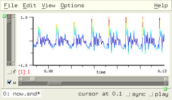
dsp.scm is a DSP grabbag, mostly filters. There are more than 100 functions to describe here, so an alphabetical list is just a jumble of names. Instead, I've tried to divide them into several vague categories: FFTs, FIR filters, IIR filters, synthesis, sound effects, sampling rate conversion, linear algebra and stats, and scanned synthesis.
If you're new to DSP, I recommend Lyons' "Understanding Digital Signal Processing" and Steiglitz, "A Digital Signal Processing Primer"; there are many good books on advanced calculus — I especially liked Hildebrand, "Advanced Calculus for Applications", but it may be out of print (this was about 25 years ago, I think); a great book on complex analysis is Needham, "Visual Complex Analysis"; Poole's "Linear Algebra" is a very straightforward introduction; also Halmos, "Linear Algebra Problem Book"; the most enjoyable Fourier Analysis book is by Körner, but you don't want to start with it. For the ambitious, there is the encyclopedic set of books by Julius Smith. His "Mathematics of the DFT" and "Introduction to Digital Filters" are very clear.
dht data
dht is the slow form of the Hartley transform, taken from Perry Cook's SignalProcessor.m. The Hartley transform is a kind of Fourier transform.
display-bark-fft off color1 color2 color3 undisplay-bark-fft
display-bark-fft shows the current spectrum in the "lisp" graph in three different frequency scales: bark, mel, and erb, each in a different color. The default ticks follow the bark scale; click anywhere in the lisp graph to switch to a different tick scale choice. undisplay-bark-fft turns this graph off. Here we've used rgb.scm for some color names:
(display-bark-fft #f sea-green orange alice-blue) (set! (selected-graph-color) gray30) (set! (selected-data-color) light-green)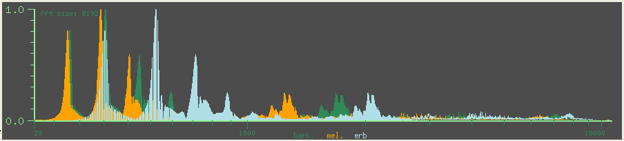
dolph n gamma
dolph is the Dolph-Chebyshev fft data window, taken from Richard Lyons, "Understanding DSP". The C version used by Snd/CLM is in clm.c. Another version of the same function, taken (with a few minor changes) from Julius Smith's "Spectral Audio", is named dolph-1.
down-oct n snd chn stretch-sound-via-dft factor snd chn
down-oct tries to move a sound down by a factor of n (assumed to be a power of 2, 1 = no change) by goofing with the fft data, then inverse ffting. I think this is "stretch" in DSP jargon; to interpolate in the time domain we're squeezing the frequency domain. The power-of-2 limitation is based on the underlying fft function's insistence on power-of-2 data sizes. A more general version of this is stretch-sound-via-dft, but it's extremely slow.
goertzel freq beg dur snd find-sine freq beg dur snd
goertzel and find-sine find the amplitude of a single component of a spectrum ('freq').
> (find-sine 550.0 0.0 (framples)) (0.00116420908413177 0.834196665512423) ; car is amplitude, cadr is phase in radians > (* (goertzel 550.0 0.0 (framples)) (/ 2.0 (framples))) 0.00116630805062827
periodogram N
periodogram (the "Bartlett" version, I think) runs over an entire file, piling up 'N' sized chunks of data, then displays the results in the "lisp graph" area; this needs a lot of work to be useful!
scentroid file (beg 0.0) dur (db-floor -40.0) (rfreq 100.0) (fftsize 4096)
scentroid is Brett Battey's CLM scentroid instrument, translated to Snd/Scheme. To paraphrase Brett: scentroid returns (in a float-vector) the continuous spectral centroid envelope of a sound. The spectral centroid is the "center of gravity" of the spectrum, and it has a rough correlation to our sense of "brightness" of a sound. 'db-floor' sets a lower limit on which framples are included in the analysis. 'rfreq' sets the number of measurements per second. 'fftsize' sets the fft window size (a power of 2). See also the moving-scentroid generator in generators.scm.
spot-freq samp snd chn
spot-freq is a first-pass at using autocorrelation for pitch tracking; it's easily fooled, but could probably be made relatively robust.
> (spot-freq 10000) ; this is oboe.snd, in about .5 secs 555.262096862931 ; 555Hz is correct(!)
In the next example, we add spot-freq to the mouse-click-hook (in Ruby), so that each time we click somewhere in the graph, the pitch at that point is reported:
$mouse_click_hook.add_hook!("examp-cursor-hook") do |snd, chn, button, state, x, y, axis|
if axis == Time_graph
status_report(format("(freq: %.3f)", spot_freq(cursor(snd, chn))))
end
end
rotate-phase func snd chn zero-phase snd chn
These are fft phase manipulators taken from the phazor package of Scott McNab. zero-phase takes ffts, sets all phases to 0.0, then unffts. rotate-phase is similar, but applies 'func' to the phases.
(rotate-phase (lambda (x) 0.0)) ; same as (zero-phase) (rotate-phase (lambda (x) (random 3.1415))) ; randomizes phases (rotate-phase (lambda (x) x)) ; returns original (rotate-phase (lambda (x) (- x))) ; reverses original
or in Ruby:
rotate_phase(lambda {|x| random(PI) }) # randomizes phases
and Forth:
lambda: <{ x }> pi random ; #f #f rotate-phase \ randomizes phases
z-transform rl size z fractional-fourier-transform rl im size angle
z-transform performs a z-transform returning a vector (to accommodate complex results):
> (define d0 (make-float-vector 8)) d0 ;; and similarly for d1 and d2 ... > (set! (d0 2) 1.0) 1.0 > (set! (d1 2) 1.0) 1.0 > (z-transform d0 8 (exp (make-rectangular 0.0 (* .25 pi)))) ;; Ruby: z_transform(d0, 8, exp(Complex(0.0, (2.0 / 8) * PI))) #(1.0 0.0+1.0i -1.0 0.0-1.0i 1.0 0.0+1.0i -1.0 0.0-1.0i) > (mus-fft d1 d2 8) #(1.0 0.0 -1.0 -0.0 1.0 0.0 -1.0 -0.0) > d2 #(0.0 1.0 0.0 -1.0 0.0 1.0 0.0 -1.0)
which is a complicated way of showing that if 'z' is e^2*pi*i/n, you get a fourier transform. fractional-fourier-transform is the slow (DFT) version of the fractional Fourier Transform. If 'angle' is 1.0, you get a fourier transform.
make-highpass fc length, highpass f in make-lowpass fc length, lowpass f in make-bandpass flo fhi length, bandpass f in make-bandstop flo fhi length, bandstop f in make-differentiator length, differentiator f in
make-lowpass and lowpass provide FIR low pass filtering, and similarly for the other four choices. The order chosen is twice the 'length'; 'fc', 'flo', and 'fhi' are the edge frequencies in terms of srate = 2 * pi.
(let ((hp (make-bandpass (* .1 pi) (* .2 pi))))
(map-channel (lambda (y)
(bandpass hp y))))
make-hilbert-transform length hilbert-transform f in hilbert-transform-via-fft snd chn sound->amp-env snd chn
These functions perform the hilbert transform using either an FIR filter (the first two) or an FFT. One example of its use is sound->amp-env (from R Lyons). Another is the ssb-am generator in CLM.
invert-filter coeffs
invert-filter inverts an FIR filter. Say we previously filtered a sound via
(filter-channel (float-vector .5 .25 .125))
and our mouse is broken so we can't use the Undo menu, and we've forgotten that we could type (undo). Nothing daunted, we use:
(filter-channel (invert-filter (float-vector .5 .25 .125)))
There are a million gotchas here. The primary one is that the inverse filter can "explode" — the coefficients can grow without bound. For example, any filter returned by spectrum->coeffs will be problematic.
make-spencer-filter
This returns a CLM fir-filter generator with the standard "Spencer Filter" coefficients.
notch-sound freqs order s c width notch-channel freqs order beg dur s c e trunc width notch-selection freqs order width
notch-channel, notch-selection, and notch-sound are aimed at noise reduction. Each takes a list of frequencies (in Hz), and an optional filter order, and notches out each frequency. The sharpness of the notch is settable explicitly via the 'width' argument, and implicitly via the filter 'order'. A common application cancels 60 Hz hum:
(notch-channel (do ((freqs ())
(i 60 (+ i 60)))
((= i 3000)
(reverse freqs))
(set! freqs (cons i freqs))))
Here we've built a list of multiples of 60 and passed it to notch-channel. Its default notch width is 2 Hz, and its default order tries to maintain that width given the channel's sampling rate, so the default filter order can be very high (65536). The filtering is normally done via convolution (by CLM's convolve generator), so a high filter order is not a big deal. In ideal cases, this can reduce the hum and its harmonics by about 90%. But, if the hum is not absolutely stable, you'll probably want wider notches:
(notch-channel (do ((freqs ())
(i 60 (+ i 60)))
((= i 3000)
(reverse freqs))
(set! freqs (cons i freqs)))
1024)
The order of 1024 means we get 20 Hz width minima (44100 Hz srate), so this notches out much bigger chunks of the spectrum. You get 98% cancellation, but also lose more of the original signal.
make-savitzky-golay-filter size (order 2) savitzky-golay-filter f in
This the Savitzky-Golay filter, assuming symmetrical positioning. It is an FIR smoothing filter; perhaps it could be useful in noise reduction.
(define (unnoise order)
(let ((flt (make-savitzky-golay-filter order 2)))
(map-channel (lambda (y) (savitzky-golay-filter flt y)))))
For more info on this filter, See "Numerical Recipes in C".
spectrum->coeffs order spectrum fltit-1 order spectr
spectrum->coeffs is a version of Snd's very simple spectrum->coefficients procedure ("frequency sampling"). It returns the FIR filter coefficients given the filter 'order' and desired 'spectrum' (a float-vector). An example of its use is fltit-1.
(map-channel (fltit-1 10 (float-vector 0 1.0 0 0 0 0 0 0 1.0 0)))
make-volterra-filter acoeffs bcoeffs volterra-filter flt x
volterra-filter and make-volterra-filter implement one form of a common non-linear FIR filter. This version is taken from Monson Hayes "Statistical DSP and Modeling"; it is a slight specialization of the form mentioned by J O Smith and others. The 'acoeffs' apply to the linear terms, and the 'bcoeffs' to the quadratic.
(let ((flt (make-volterra-filter (float-vector .5 .1) (float-vector .3 .2 .1)))) (map-channel (lambda (x) (volterra-filter flt x))))
make-biquad a0 a1 a2 b1 b2
make-biquad is a wrapper for make-filter to return a biquad filter section.
cascade->canonical coeffs
cascade->canonical converts cascade coefficients to canonical form (the form used by CLM's filter generator). 'coeffs' is a list of filter coefficients; the function returns a float-vector, ready for make-filter.
kalman-filter-channel (Q 1.0e-5)
This is an experimental function aimed at noise reduction using a Kalman filter.
make-butter-high-pass fq, make-butter-hp M fc make-butter-low-pass fq, make-butter-lp M fc make-butter-band-pass fq bw, make-butter-bp M f1 f2 make-butter-band-reject fq bw, make-butter-bs M f1 f2
These functions produce Butterworth filters, returning a CLM filter generator. The first named ones (make-butter-high-pass et al) are taken from Sam Heisz's CLM version of Paris Smaragdis's Csound version of Charles Dodge's code from "Computer Music: synthesis, composition, and performance". The second set (make-butter-lp et al) provide arbitrary order Butterworths. 'M' * 2 is the filter order, 'f1' and 'f2' are the band edges in Hz.
(clm-channel (make-butter-bp 3 1000 2000)) (filter-sound (make-butter-low-pass 500.0))
See also the notch filter in new-effects.scm, and of course analog-filter.scm: the latter renders this section obsolete.
make-iir-high-pass-2 fc din make-iir-low-pass-2 fc din make-iir-band-pass-2 f1 f2 make-iir-band-stop-2 f1 f2 make-eliminate-hum (hum-freq 60.0) (hum-harmonics 5) (bandwidth 10) make-peaking-2 f1 f2 m
More IIR filters.
(map-channel (make-eliminate-hum))
make-peaking (a bandpass filter) returns a function suitable for map-channel (it takes one argument, the current sample, and returns a sample):
(map-channel (make-peaking-2 500 1000 1.0))
In this case 'm' is the gain in the pass band. Use the functions in analog-filter.scm, rather than this group.
cheby-hka k a coeffs
This returns the amplitude of the kth harmonic (0=DC) in the waveshaping output given the index 'a', and harmonic coefficients 'coeffs' (the 0th element is DC amplitude).
(with-sound ()
(let ((gen (make-polyshape 1000.0 :partials (list 1 .5 2 .25 3 .125 4 .125))))
(do ((i 0 (+ i 1)))
((= i 88200))
(outa i (* .5 (polyshape gen 0.25))))))
(cheby-hka 1 0.25 (float-vector 0 .5 .25 .125 .125)) ; returns first partial (fundamental) amplitude
flatten-partials partials (tries 32)
flatten-partials takes a list or float-vector of partial numbers and amplitudes, as passed to make-polywave, and tries to find an equivalent set of amplitudes that produces a less spikey waveform. The difference is primarily one of loudness until you have a lot of partials.
fm-parallel-component freq-we-want wc wms inds ns bs using-sine fm-cascade-component freq-we-want wc wm1 a wm2 b fm-complex-component freq-we-want wc wm a b interp sine ; "sine" arg currently ignored
This returns the amplitude of "freq-we-want" in parallel (complex) FM, where "wc" is the carrier, "wms" is a list of modulator frequencies, "inds" is a list of the corresponding indices, "ns" and "bs" are null (used internally), and using-sine is #t if the modulators are set up to produce a spectrum of sines, as opposed to cosines (we need to know whether to add or subtract the components that foldunder 0.0).
(fm-parallel-component 200 2000.0 (list 2000.0 200.0) (list 0.5 1.0) () () #t)
To get the same information for FM with a complex index, use fm-compex-component: (fm-compex-component 1200 1000 100 1.0 3.0 0.0 #f). For cascade FM (two levels only), use fm-cascade-component.
ssb-bank old-freq new-freq pairs-1 (order 40) (bw 50.0) (beg 0) dur snd chn edpos ssb-bank-env old-freq new-freq freq-env pairs-1 (order 40) (bw 50.0) (beg 0) dur snd chn edpos shift-channel-pitch freq (order 40) (beg 0) dur snd chn edpos
The ssb-bank functions provide single-sideband amplitude modulation, and pitch/time changes based on the ssb-am generator. If you run ssb-am on some input signal, the signal is shifted in pitch by the 'freq' amount. The higher the 'order', the better the sideband cancellation (amplitude modulation creates symmetrical sidebands, one of which is cancelled by the ssb-am generator). ssb-bank uses a bank of ssb-am generators, each with its own bandpass filter to shift a sound's pitch without changing its duration; the ssb-am generators do the pitch shift, and the filters pick out successive harmonics, so each harmonic gets shifted individually (i.e. harmonic relations are maintained despite the pitch shift). For an oboe at 557 Hz, good values are: (ssb-bank 557 new-freq 6 40 50). For a person talking at ca. 150 Hz: (ssb-bank 150 300 30 100 30) or (ssb-bank 150 100 40 100 20). To get a duration change without a pitch change, use this function followed by sampling rate conversion back to the original pitch:
(define (stretch-oboe factor) (ssb-bank 557 (* factor 557) 7 40 40) (src-sound (/ 1.0 factor)))
ssb-bank-env is the same as ssb-bank, but includes a frequency envelope: (ssb-bank-env 557 880 '(0 0 1 100.0) 7). shift-channel-pitch applies an ssb-am generator to a sound's channel (this is a variant of amplitude modulation). 'freq' and 'order' are the corresponding arguments to make-ssb-am. There is a dialog that runs ssb-bank in snd-motif.scm: create-ssb-dialog.
any-random e gaussian-distribution s pareto-distribution a gaussian-envelope s
any-random provides the same output as rand if the latter's envelope (distribution function) argument is used, but using a slightly different method to generate the numbers. gaussian-envelope makes a gaussian distribution envelope suitable for rand. Also included is inverse-integrate, a version of CLM's distribution-to-weighting function.
(map-channel (lambda (y) (any-random 1.0 '(0 1 1 1)))) ; uniform distribution (map-channel (lambda (y) (any-random 1.0 '(0 0 0.95 0.1 1 1)))) ; mostly toward 1.0 (let ((g (gaussian-distribution 1.0))) (map-channel (lambda (y) (any-random 1.0 g)))) (let ((g (pareto-distribution 1.0))) (map-channel (lambda (y) (any-random 1.0 g))))
In Ruby:
map_channel(lambda do |y| any_random(1.0, [0, 1, 1, 1])) # uniform distribution map_channel(lambda do |y| any_random(1.0, [0, 0, 0.95, 0.1, 1, 1])) # mostly toward 1.0 let(gaussian-distribution(1.0)) do |g| map_channel(lambda do |y| any_random(1.0, g)) end let(pareto-distribution(1.0)) do |g| map_channel(lambda do |y| any_random(1.0, g)) end
| Random Numbers in Snd/CLM |
generators, arbitrary distributions, fractals, 1/f: rand and rand-interp |
adsat size beg dur snd chn freqdiv n snd chn
These two functions come from a package of effects developed by sed_sed@my-dejanews.com. adsat is "adaptive saturation", and freqdiv is "frequency division". (freqdiv n) repeats each nth sample 'n' times, clobbering the intermediate samples: (freqdiv 8). It turns your sound into a bunch of square waves.
brighten-slightly amount snd chn
brighten-slightly is a slight simplification of contrast-enhancement.
chordalize
chordalize uses harmonically-related comb-filters to bring out a chord in a sound. The comb filters are controled by chordalize-amount (the default is .95), chordalize-base (the default is 100 Hz), and chordalize-chord (the default is (list 1 3/4 5/4)). chordalize returns a function suitable for map-channel:
(map-channel (chordalize))
chordalize seems to work best with vocal sounds.
chorus
chorus tries to produce the chorus sound effect, but it needs work. It is controlled by the following variables:
chorus-size (5) ; number of flangers chorus-time (.05) ; scales delay line length (flanger) chorus-amount (20.0) ; amp of rand-interp (flanger) chorus-speed (10.0) ; freq of rand-interp (flanger)
harmonicizer freq coeffs pairs (order 40) (bw 50.0) (beg 0) dur snd chn edpos
harmonicizer splits a sound into separate sinusoids, then splits each resultant harmonic into a set of harmonics, then reassembles the sound. The basic idea is very similar to ssb-bank, but harmonicizer splits harmonics, rather than pitch-shifting them. The result can be a brighter or richer sound.
(harmonicizer 550.0 (list 1 .5 2 .3 3 .2) 10)
'coeffs' is a list of harmonic-number and amplitude pairs, describing the spectrum produced by each harmonic. 'pairs' controls how many bands are used to split the original sound. 'order' is the bandpass filter's order in each such pair, and 'bw' controls its bandwidth.
lpc-coeffs data n m
lpc-coeffs returns 'm' LPC coeffients (in a vector) given 'n' data points in the float-vector 'data'.
lpc-predict data n coeffs m nf clipped
lpc-predict takes the output of lpc-coeffs ('coeffs') and the length thereof ('m'), 'n' data points 'data', and produces 'nf' new data points (in a float-vector) as its prediction. If 'clipped' is #t, the new data is assumed to be outside -1.0 to 1.0.
> (lpc-predict (float-vector 0 1 2 3 4 5 6 7) 8 (lpc-coeffs (float-vector 0 1 2 3 4 5 6 7) 8 4) 4 2) #(7.906 8.557)
spike snd chn
spike returns a product (rather than the more usual sum) of succesive samples, with the current sample's sign; this normally produces a more spikey output. The more successive samples we include in the product, the more we limit the output to pulses placed at (just after) wave peaks. In spike's case, just three samples are multiplied. See also the volterra filter.
unclip-channel snd chn
unclip-channel tries to reconstruct clipped portions of a sound by using LPC to predict (backwards and forwards) the lost samples.
unclip-sound snd
unclip-sound calls unclip-channel on each channel in the sound 'snd'.
linear-src-channel srinc snd chn
linear-src-channel performs sampling rate conversion using linear interpolation; this can sometimes be a nice effect.
src-duration env
src-duration takes an envelope representing the input (src change) to src, and returns the resultant sound length.
(src-duration '(0 1 1 2)) ; -> 0.693147180559945
which means that if the original sound was 2 seconds long, and we apply the envelope '(0 1 1 2) (via src-channel, for example) to that sound, the result will be .693 * 2 seconds long. To scale an src envelope to return a given duration, see src-fit-envelope below.
src-fit-envelope env target-dur
src-fit-envelope returns a version of "env" scaled so that its duration as an src envelope is "target-dur".
> (src-duration (src-fit-envelope '(0 1 1 2) 2.0)) 2.0
channel-mean snd chn ; <f, 1> / n channel-total-energy snd chn ; <f, f> channel-average-power snd chn ; <f, f> / n channel-norm snd chn ; sqrt(<f, f>) channel-rms snd chn ; sqrt(<f, f> / n) channel-variance snd chn ; <f, f> - ((<f, 1> / n) ^ 2) with quibbles channel-lp u-p snd chn channel-lp-inf snd chn ; max abs f channel2-inner-product s1 c1 s2 c2 ; <f, g> channel2-orthogonal? s1 c1 s2 c2 ; <f, g> == 0 channel2-angle s1 c1 s2 c2 ; acos(<f, g> / (sqrt(<f, f>) * sqrt(<g, g>))) channel2-coefficient-of-projection s1 c1 s2 c2 ; <f, g> / <f, f> channel-distance (s1 0) (c1 0) (s2 1) (c2 0) ; sqrt(<f - g, f - g>)
These functions are taken from (or at least inspired by) Julius Smith's "Mathematics of the DFT". Many are standard ways of describing a signal in statistics; others treat a signal as a vector (channel-distance, for example, returns the Euclidean distance between two sounds). The 's1' and 's2' parameters refer to sound objects, and the 'c1' and 'c2' parameters refer to channel numbers.
channel-polynomial coeffs snd chn spectral-polynomial coeffs snd chn float-vector-polynomial v coeffs
float-vector-polynomial returns the evaluation of the polynomial (given its coefficients) over an entire float-vector, each element being treated as "x". channel-polynomial performs the same operation over a sound channel. spectral-polynomial is similar, but operates in the frequency domain (each multiply being a convolution).
> (float-vector-polynomial (float-vector 0.0 2.0) (float-vector 1.0 2.0)) ; x*2 + 1 #(1.0 5.0) > (channel-polynomial (float-vector 0.0 1.0 1.0 1.0)) ; x*x*x + x*x + x
The "constant" (0-th coefficient) term in spectral polynomial is treated as a dither amount (that is, it has the given magnitude, but its phase is randomized, rather than being simple DC). See also poly.scm. In channel-poynomial, if you have an nth-order polynomial, the resultant spectrum is n times as wide as the original, so aliasing is a possibility, and even powers create energy at 0Hz.
vibrating-uniform-circular-string size x0 x1 x2 mass xspring damp vibrating-string size x0 x1 x2 masses xsprings esprings damps haptics
These functions implement scanned synthesis of Bill Verplank and Max Mathews. To watch the wave, open some sound (so Snd has some place to put the graph), turn off the time domain display (to give our graph all the window) then
(let ((size 128))
(let ((x0 (make-float-vector size))
(x1 (make-float-vector size))
(x2 (make-float-vector size)))
(do ((i 0 (+ i 1)))
((= i 12))
(let ((val (sin (/ (* 2 pi i) 12.0))))
(set! (x1 (- (+ i (/ size 4)) 6)) val)))
(do ((i 0 (+ i 1)))
((= i 1024))
(vibrating-uniform-circular-string size x0 x1 x2 1.0 0.1 0.0)
(graph x0 "string" 0 1.0 -10.0 10.0))))
env.scm provides a variety envelope functions. An envelope in Snd/CLM is a list of breakpoint pairs. In the function names, I try to remember to use "envelope" to be a list of breakpoints, and "env" to be the result of make-env, a CLM env structure passed to the env generator. In an envelope, the x axis extent is arbitrary, though it's simplest to use 0.0 to 1.0. (In this file, envelopes are assumed to be flat lists, not float-vectors or lists of lists).
add-envelopes env1 env2
add-envelopes adds two envelopes together:
> (add-envelopes '(0 0 1 1) '(0 0 1 1 2 0)) (0 0 1/2 3/2 1 1) ; i.e. (0 0 1 1.5 2 1) in the second env's terms
concatenate-envelopes :rest envs
concatenate-envelopes concatenates its arguments:
> (concatenate-envelopes '(0 1 1 0) '(0 0 1 1)) (0.0 1 1.0 0 2.0 1)
envelope-exp e (power 1.0) (xgrid 100)
envelope-exp interpolates segments into envelope to approximate exponential curves.
> (format #f "~{~,3F ~}" (envelope-exp '(0 0 1 1) 3.0 6))
"0.000 0.000 0.167 0.005 0.333 0.037 0.500 0.125 0.667 0.296 0.833 0.579 1.000 1.000 "
envelope-last-x env
envelope-last-x returns the maximum x value:
> (envelope-last-x '(0 1 1 0 2 0)) 2
integrate-envelope env
integrate-envelope returns the area under the envelope.
> (integrate-envelope '(0 0 1 1)) 0.5 > (integrate-envelope '(0 1 1 1)) 1.0 > (integrate-envelope '(0 0 1 1 2 .5)) 1.25
make-power-env e (scaler 1.0) (offset 0.0) duration power-env e power-env-channel pe (beg 0) snd chn edpos (edname "power-env-channel") powenv-channel envelope (beg 0) dur snd chn edpos
make-power-env and power-env implement an extension of exponential envelopes; each segment has its own base. power-env-channel uses the same mechanism as an extension of env-channel.
(let ((pe (make-power-env '(0 0 32.0 1 1 0.0312 2 0 1) :duration 1.0))) (map-channel (lambda (y) (* y (power-env pe))))) (let ((pe1 (make-power-env '(0 0 32.0 1 1 0.0312 2 0 1.0 3 .5 3.0 4 0 0) :duration 1.0))) (power-env-channel pe1))
powenv-channel is a simplification of power-env-channel; it takes a breakpoint list rather than a power-env structure:
(powenv-channel '(0 0 .325 1 1 32.0 2 0 32.0))
map-envelopes func env1 env2
map-envelopes applies 'func' to the breakpoints in the two envelope arguments, returning a new envelope.
> (map-envelopes + '(0 0 1 1 2 0) '(0 1 2 0)) (0 1 1/2 3/2 1 0) ; i.e. '(0 1 1 1.5 2 0) in the original x-axis bounds
min-envelope env max-envelope env
max-envelope returns the maximum y value in 'env', and min-envelope returns the minimum y value:
> (max-envelope '(0 0 1 1 2 3 4 0)) 3.0
multiply-envelopes env1 env2
multiply-envelopes uses map-envelopes to multiply two envelopes:
Scheme: > (multiply-envelopes '(0 0 1 1) '(0 0 1 1 2 0)) (0 0 0.5 0.5 1 0) Ruby: > multiply_envelopes([0, 0, 1, 1], [0, 0, 1, 1, 2, 0]) [0.0, 0.0, 0.5, 0.5, 1.0, 0.0] Forth: snd> '( 0e 0e 1.0 1.0 ) '( 0e 0e 1.0 1.0 2.0 0.0 ) multiply-envelopes '( 0.0 0.0 0.5 0.5 1.0 0.0 )
The new envelope goes from 0.0 to 1.0 along the X axis; the multiplied envelopes are stretched or contracted to fit 0.0 to 1.0, and wherever one has a breakpoint, the corresponding point in the other envelope is interpolated, if necessary.
normalize-envelope env (new-max 1.0)
normalize-envelope returns a version of 'env' scaled so that its maximum y value is 'new-max'.
> (normalize-envelope '(0 0 1 1 2 3 4 0) .5) (0 0.0 1 0.167 2 0.5 4 0.0)
repeat-envelope env repeats reflected normalized
repeat-envelope repeats an envelope (concatenates copies of itself). It's usually easier to use mus-reset to restart an envelope over and over (see pulsed-env).
> (repeat-envelope '(0 0 .1 .9 1 1 1.3 .2 2 0) 2) (0 0 0.1 0.9 1.0 1 1.3 0.2 2.0 0 2.1 0.9 3.0 1 3.3 0.2 4.0 0)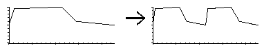
If the final y value is different from the first y value (as above), a quick ramp is inserted between repeats. 'normalized' causes the new envelope's x axis to have the same extent as the original's. 'reflected' causes every other repetition to be in reverse.
reverse-envelope env
reverse-envelope reverses an envelope.
> (reverse-envelope '(0 0 1 1 2 1)) (0 1 1 1 2 0)
rms-envelope file (beg 0.0) dur (rfreq 30.0) db
rms-envelope returns an rms envelope of a file; it is based on rmsenv.ins in the CLM package.
> (format #f "~{~,3F ~}" (rms-envelope "1a.snd"))
"0.000 0.049 0.033 0.069 0.067 0.049 0.100 0.000 0.133 0.000 0.167 0.000 0.200 0.000 "
scale-envelope env scl (offset 0.0)
scale-envelope scales the y values of an envelope by 'scl', and optionally adds 'offset'.
stretch-envelope env old-attack new-attack (old-decay #f) (new-decay #f)
stretch-envelope applies attack and optionally decay times to an envelope, much like divseg in clm-1.
> (stretch-envelope '(0 0 1 1) .1 .2) (0 0 0.2 0.1 1.0 1) > (stretch-envelope '(0 0 1 1 2 0) .1 .2 1.5 1.6) (0 0 0.2 0.1 1.1 1 1.6 0.5 2.0 0)
window-envelope beg end env
window-envelope returns (as an envelope) the portion of its envelope argument that lies between the x axis values 'beg' and 'end'. This is useful when you're treating an envelope as a phrase-level control, applying successive portions of it to many underlying notes.
> (window-envelope 1.0 3.0 '(0.0 0.0 5.0 1.0)) (1.0 0.2 3.0 0.6)
enved.scm implements an independent envelope editor in each channel.
start-enveloping stop-enveloping channel-envelope snd chn play-with-envs snd
(start-enveloping) opens an envelope editor for each subsequently opened sound. (stop-enveloping) turns this off. Each envelope can be read or written via (channel-envelope snd chn). An example use is play-with-envs which sets the channel's amplitude from its envelope during playback
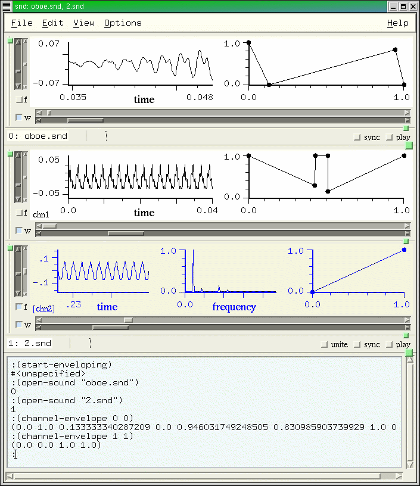Closely related to this is xm-enved.scm which implements a separate envelope editor widget.
xe-create-enved name parent args axis xe-envelope xe-editor
xe-create-enved returns a new envelope editor whose x axis label is 'name', the x and y axis bounds are in the list 'axis', the editor's parent widget is 'parent', and the Xt-style resource argument list is 'args'. The editor's current envelope is accessible as 'xe-envelope'.
examp.scm has become a bit of a mess; rather than get organized, I just appended new stuff as it came to mind. In this documentation, I'll divide the functions into the following non-orthogonal categories: ffts, filters, sound effects, marks, selections, graphics, and miscellaneous stuff
display-correlation snd chn y0 y1
display-correlation graphs the correlation of the 2 channels of the sound 'snd'. To make this happen automatically as you move the time domain position slider: (hook-push graph-hook display-correlation). The last three parameters are unused; they are just for compatibility with graph-hook.
fft-cancel lo-freq hi-freq snd chn
fft-cancel ffts an entire channel, zeroes the bins between 'lo-freq' and 'hi-freq' (in Hz), then inverse ffts, giving a good notch filter.
(fft-cancel 500 1000) ; squelch frequencies between 500 and 1000 Hz
fft-edit low-freq high-freq snd chn
fft-edit takes an fft of the entire sound, removes all energy below 'low-freq' and above 'high-freq' (in Hz), then inverse fft's. This is the complement of fft-cancel.
fft-env-edit env snd chn
fft-env-edit is similar to fft-edit, but applies an envelope to the spectral magnitudes.
(fft-env-edit '(0 0 .1 1 .2 1 .3 0 .5 1 1.0 0)) ; 1.0 = srate / 2 here
fft-env-interp env1 env2 interp snd chn
fft-env-interp performs fft-env-edit twice (using 'env1' and 'env2'), then mixes the two results following the interpolation envelope 'interp'.
fft-peak snd chn scale
fft-peak is an after-transform-hook function that reports the peak spectral magnitude in the status area.
Scheme: (hook-push after-transform-hook fft-peak)
Ruby: $after_transform_hook.add_hook!(\"fft-peak\") do |snd, chn, scale|
fft_peak(snd, chn, scale)
end
This can be helpful if you're scanning a sound with the fft graph displayed; since it normalizes to 1.0 (to keep the graph from jumping around simply because the amplitude is changing), it's nice to know what the current peak actually represents. You can, of course, turn off the normalization:
(set! (transform-normalization) dont-normalize)
fft-smoother cutoff start samps snd chn
fft-smoother uses fft filtering to smooth a portion of a sound, returning a float-vector with the smoothed data. 'cutoff' sets where we starting zeroing out high frequencies.
Scheme: (float-vector->channel (fft-smoother .1 (cursor) 400 0 0) (cursor) 400) Ruby: vct2channel(fft_smoother(0.1, cursor, 400, 0, 0), cursor, 400)
fft-squelch squelch snd chn
fft-squelch is similar to fft-edit; any fft bin whose (normalized) magnitude is below 'squelch' is set to 0.0. This is sometimes useful for noise-reduction.
filter-fft func (normalize #t) snd chn
This a sort of generalization of the preceding functions. It gets the spectrum of all the data in the given channel, applies the function 'func' to each element of the spectrum, then inverse ffts. 'func' should take one argument, the current spectrum value.
(define brfft
(let ((+documentation+ "(brfft lofrq hifrq) removes all frequencies between lofrq and hifrq: (brfft 1000.0 2000.0)"))
(lambda (lofrq hifrq)
(let* ((fsize (let ((len (framples)))
(expt 2 (ceiling (log len 2)))))
(ctr -1)
(lo (round (/ (* fsize lofrq) (srate))))
(hi (round (/ (* fsize hifrq) (srate)))))
(filter-fft (lambda (y)
(set! ctr (+ 1 ctr))
(if (>= hi ctr lo)
0.0
y)))))))
Here are some sillier examples...
(filter-fft (make-one-zero .5 .5)) (filter-fft (make-one-pole .05 .95)) (filter-fft (lambda (y) (if (< y .1) 0.0 y))) ; like fft-squelch (let ((rd (make-sampler 0 0 0 1 0))) (scale-by 0) (filter-fft (lambda (y) (rd)))) ; treat sound as spectrum (filter-fft contrast-enhancement) (filter-fft (lambda (y) (* y y y))) ; extreme low pass
squelch-vowels snd chn
squelch-vowels uses fft data to try to distinguish a steady state portion (a vowel in speech) from noise (a consonant, sometimes), then tries to remove (set to 0.0) the vowel-like portions.
superimpose-ffts snd chn y0 y1
superimpose-ffts is a graph-hook function that superimposes the ffts of multiple (sync'd) sounds. (hook-push graph-hook superimpose-ffts) This function needs some work...
zoom-spectrum snd chn y0 y1
zoom-spectrum sets the transform size to correspond to the time-domain window size. (hook-push graph-hook zoom-spectrum).
comb-filter scaler size zcomb scaler size pm
comb-filter is an example of using the CLM comb generator.
Scheme: (map-channel (comb-filter .8 32)) Ruby: map_channel(comb_filter(0.8, 32)) Forth: 0.8 32 comb-filter-1 map-channel
it would be faster to use the comb filter directly:
(clm-channel (make-comb .8 32))
zcomb is a time-varying comb filter using the envelope 'pm' (the envelope is applied to the comb filter delay length).
(map-channel (zcomb .8 32 '(0 0 1 10)))
comb-chord scaler size amp
comb-chord uses comb filters at harmonically related sizes to create a chord (see also chordalize in dsp.scm). 'amp' is an overall amplitude scaler.
(map-channel (comb-chord .95 100 .3)) (map-channel (comb-chord .95 60 .3))
filtered-env e snd chn
filtered-env takes an amplitude envelope 'e' and creates a one-pole filter, and moves them in parallel over a sound; as the sound gets softer, the low-pass filter's cutoff frequency gets lower, a sort of poor-man's distance effect. When 'e' is at 1.0, no filtering takes place.
(filtered-env '(0 1 1 0)) ; fade out
formant-filter radius frequency
formant-filter applies a formant to its input.
(map-channel (formant-filter .99 2400))
It's probably faster to use the CLM filter directly:
(filter-sound (make-formant 2400 .99))
formants r1 f1 r2 f2 r3 f3
formants applies three formants in parallel.
(map-channel (formants .99 900 .98 1800 .99 2700))
moving-formant radius move-envelope
moving-formant moves a formant according to an envelope (the envelope y value is in Hz).
(map-channel (moving-formant .99 '(0 1200 1 2400)))
notch-filter scaler size
This is an example of calling the CLM notch filter.
(map-channel (notch-filter .8 32))
osc-formants radius bases amounts freqs
osc-formants sets up any number of independently oscillating formants, then calls map-channel.
Scheme: (osc-formants .99 (float-vector 400.0 800.0 1200.0) (float-vector 80.0 80.0 120.0) (float-vector 4.0 2.0 3.0)) Ruby: osc_formants(0.99, vct(400, 800, 1200), vct(80, 80, 120), vct(4, 2, 3))
'bases' are the formant center frequencies; 'freqs' are the oscillator frequencies; 'amounts' are "deviations" — they scale the oscillator outputs which set the runtime formant frequencies (thereby setting the width of the warbling).
add-notes notes snd chn
add-notes adds (mixes) 'notes' starting at the cursor in the currently selected channel. 'notes' is a list of lists of the form: (list file offset amp).
Scheme: (add-notes '(("oboe.snd")
("pistol.snd" 1.0 2.0)))
Ruby: add_notes([["oboe.snd"],
["pistol.snd", 1.0, 2.0]])
This mixes "oboe.snd" at time 0.0, then "pistol.snd" at 1.0 (second) scaled by 2.0.
am freq ring-mod freq gliss-env ring-modulate-channel freq beg dur snd chn edpos vibro speed depth
These functions perform amplitude modulation and ring-modulation. 'freq' is the modulation frequency.
(map-channel (am 440)) (map-channel (ring-mod 10 (list 0 0 1 (hz->radians 100)))) (ring-modulate-channel 100.0) (map-channel (vibro 440 0.5))
am uses the CLM amplitude-modulate generator; the others are little more than oscil and a multiply. 'gliss-env' in ring-mod controls the frequency of the modulation. See also ssb-am.
chain-dsps beg dur :rest dsps
chain-dsps creates a patch of chained generators from its arguments. Someone wanted to set up generator patches in a note list:
(with-sound ()
(chain-dsps 0 1.0 '(0 0 1 .25 2 0) (make-oscil 440))
(chain-dsps 1.0 1.0 '(0 0 1 1 2 0) (make-one-zero .5) (make-readin "oboe.snd"))
(chain-dsps 2.0 1.0 '(0 0 1 .125 2 0) (let ((osc1 (make-oscil 220))
(osc2 (make-oscil 440)))
(lambda (val) (+ (osc1 val)
(osc2 (* 2 val)))))))
The 'dsps' is a sequence of breakpoint lists and generators; the breakpoint lists are treated as envelopes, and the generators are connected (previous) output to (current) input in the reverse of the order received. readin is an exception; since its input comes from a file, it is added to the current output. So, the first call is an oscil multiplied by an envelope. The second filters and envelopes readin input. The third sets up an additive synthesis patch. In Ruby, this example is:
with_sound() do
chain_dsps(0, 1.0, [0, 0, 1, 1, 2, 0], make_oscil(:frequency, 440))
chain_dsps(0, 1.0, [0, 0, 1, 1, 2, 0], make_one_pole(0.5), make_readin("oboe.snd"))
chain_dsps(0, 1.0, [0, 0, 1, 1, 2, 0],
let(make_oscil(:frequency, 220),
make_oscil(:frequency, 440))
do |osc1, osc2|
lambda do |val|
osc1.run(val) + osc2.run(2.0 * val)
end
end)
end
compand
These functions lookup a table value based on the current sample amplitude; the table is set up so that soft portions are slightly amplified. The companding curve is taken from Steiglitz "A DSP Primer".
cnvtest snd0 snd1 amp
This is an example of using convolution. It convolves 'snd0' and 'snd1' (using the CLM convolve generator), then scales by 'amp'. It returns the new maximum amplitude.
(cnvtest 0 1 .1)
cross-synthesis cross-snd amp fftsize radius
cross-synthesis performs cross-synthesis between 'cross-snd' (a sound) and the currently selected sound. 'cross-snd' is the sound that controls the spectra.
(map-channel (cross-synthesis 1 .5 128 6.0))
echo scaler secs flecho scaler secs zecho scaler secs frq amp
These are delay-based sound effects. echo returns an echo maker ('secs' is the delay in seconds between echos, 'scaler' is the amplitude ratio between successive echoes). zecho is similar, but also modulates the echoes. flecho is a low-pass filtered echo maker. See Snd with CLM for a discussion.
Scheme: (map-channel (echo .5 .5) 0 44100) (map-channel (zecho .5 .75 6 10.0) 0 65000) (map-channel (flecho .5 .9) 0 75000) Ruby: map_channel(echo(0.5, 0.5), 0 44100) map_channel(zecho(0.5, 0.75, 6, 10.0), 0, 65000) map_channel(flecho(0.5, 0.9), 0, 75000)
expsrc rate snd chn
expsrc uses sampling rate conversion (the src generator) and granular synthesis (the granulate generator) to change the pitch of a sound without changing its duration.
(map-channel (expsrc 2.0)) ; up an octave
There are lots of other related examples: see for example clm-expsrc, expsnd below, ssb-bank, or the phase-vocoder.
expsnd rate-envelope snd chn
expsnd uses the same technique as expsrc, but uses it to change the tempo according to an envelope while maintaining the original pitch. expsnd needs dsp.scm (but doesn't check that it is loaded).
(expsnd '(0 1 2 .4)) ; speed up (expsnd '(0 .5 2 2.0)) ; start fast, end slow
fp sr osamp osfrq snd chn
fp drives an src generator with an oscillator, modulating a sound. 'sr' is the base sampling rate; 'osamp' is the modulation depth; 'osfrq' is the modulation frequency. hello-dentist below is a randomized version of this. The name "fp" refers to "Forbidden Planet" which used this kind of sound effect a lot.
(fp 1.0 .3 20)
hello-dentist frq amp snd chn
hello-dentist drives n src generator with a rand-interp generator, producing a random quavering effect, hence the name.
(hello-dentist 40.0 .1)
'frq' is the random number frequency; 'amp' sets the depth of the modulation.
place-sound mono-snd stereo-snd panning-envelope-or-degree
place-sound mixes a mono sound ('mono-snd', an index) into a stereo sound ('stereo-snd') with panning determined by 'panning-envelope-or-degree'. If 'panning-envelope-or-degree' is a number (in degrees), the place-sound function has the same effect as using CLM's locsig generator; it mixes a mono sound into a stereo sound, splitting it into two copies whose amplitudes depend on the desired location. 0 degrees: all in channel 0, 90: all in channel 1.
(place-sound 0 1 45.0) ;; 0=sound 0 (mono), 1=sound 1 (stereo), 45 deg, so outa * 0.5 and outb * 0.5
If 'panning-envelope-or-degree' is an envelope, the split depends on the panning envelope (0 = all in chan 0, etc).
(place-sound 0 1 '(0 0 1 1)) ; mix goes from all in outa to all in outb
This function could use at least a start time parameter.
| Panning or Sound Placement |
Place sound: place-sound above. |
pulse-voice cosines (freq 440.0) (amp 1.0) (fftsize 256) (r 2.0) snd chn
This function is a form of cross-synthesis which drives the resynthesis with a ncos pulse train. 'freq' is the ncos frequency; 'amp' is an overall amplitude scaler; 'cosines' is the number of cosines in the pulse (the more the spikier); 'fftsize' and 'r' (radius) control the formant bank used to get the current spectrum.
(pulse-voice 80 20.0 1.0 1024 0.01) (pulse-voice 80 120.0 1.0 1024 0.2) (pulse-voice 30 240.0 1.0 1024 0.1) (pulse-voice 6 1000.0 1.0 512)
See also voice->unvoiced below.
make-ramp (size 128) ramp gen up
ramp is a generator that produces a ramp of a given length, then sticks at 0.0 or 1.0 until the 'up' argument changes. The idea here is that we want to ramp in or out a portion of a sound based on some factor of the sound data; the ramp generator produces a ramp up when 'up' is #t, sticking at 1.0, and a ramp down when 'up' is #f, sticking at 0.0. 'size' sets the steepness of the ramp. A similar, less bumpy effect uses the moving-average generator. The following produces a very jittery, wandering amplitude envelope (brownian motion):
(let ((ramper (make-ramp 1000))) ; ramp via increments of .001
(map-channel (lambda (y)
(* y (ramp ramper (< (random 1.0) .5))))))
reverse-by-blocks block-len snd chn reverse-within-blocks block-len snd chn
reverse-by-blocks and reverse-within-blocks work best with speech. reverse-by-blocks divides a sound into blocks, then recombines those blocks in reverse order. reverse-within-blocks divides a sound into blocks, then recombines them in order, but with each block internally reversed. 'block-len' is the block length in seconds.
(reverse-by-blocks .1) (reverse-within-blocks .1) ; .5 is also good
scramble-channels :rest new-order scramble-channel silence
scramble-channels uses swap-channels to arbitrarily reorder the current sound's channels. The new channel order is 'new-order' so
(scramble-channels 3 2 0 1)
replaces chan0 with chan3, chan1 with chan2 and so on. scramble-channel searches for silences, sets up a list of segments based on those silences, and randomly re-orders the segments. 'silence' determines the background level that is treated as silence.
(scramble-channel .01)
This function needs cleaner splices between the sections.
sound-interp reader loc
make-sound-interp start snd chn
env-sound-interp envelope (time-scale 1.0) snd chn
granulated-sound-interp envelope (time-scale 1.0) (grain-length 0.10)
(grain-envelope '(0 0 1 1 2 1 3 0)) (output-hop 0.05) snd chn
make-sound-interp returns an interpolating reader for the given channel. The interpolating reader reads a channel at an arbitary location, interpolating between samples if necessary. The corresponding generator is sound-interp. Here we use a sine wave to lookup the current sound:
(let ((osc (make-oscil :frequency 0.5 :initial-phase (+ pi (/ pi 2))))
(reader (make-sound-interp 0 0 0))
(len (- (framples 0 0) 1)))
(map-channel (lambda (val)
(sound-interp reader (* len (+ 0.5 (* 0.5 (oscil osc))))))))
This is effectively phase-modulation with an index of length-of-file-in-samples * 0.5 * hz->radians(oscil-frequency), or equivalently duration-in-seconds * frequency-in-Hz * pi. env-sound-interp reads the given channel (via a sound-interp generator) according to 'envelope' and 'time-scale', returning a new version of the data in the specified channel that follows that envelope; that is, when the envelope is 0.0 we get sample 0, when the envelope is 1.0 we get the last sample, when it is 0.5 we get the middle sample of the sound and so on.
Scheme: (env-sound-interp '(0 0 1 1)) Ruby: env_sound_interp([0, 0, 1, 1])
returns an unchanged copy of the current sound. To get the entire sound in reverse:
Scheme: (env-sound-interp '(0 1 1 0)) Ruby: env_sound_interp([0, 1, 1, 0])
And to go forward then backward, taking twice the original duration:
Scheme: (env-sound-interp '(0 0 1 1 2 0) 2.0) Ruby: env_sound_interp([0, 0, 1, 1, 2, 0], 2.0)
src-sound with an envelope could be used for this effect, but it is much more direct to apply the envelope to sound sample positions. A similar function is scratch in clm-ins.scm.
granulated-sound-interp is similar to env-sound-interp, but uses granular synthesis rather than sampling rate conversion to recreate the sound, so the effect is one of changing tempo rather than changing speed (pitch). Here we dawdle for awhile, then race at the end to get the whole sound in:
(granulated-sound-interp '(0 0 1 .1 2 1) 1.0 0.2 '(0 0 1 1 2 0))
voiced->unvoiced amp fftsize r tempo snd chn
This function is a form of cross-synthesis which drives the resynthesis with white noise (see also pulse-voice above).
(voiced->unvoiced 1.0 256 2.0 2.0) ; whispered, twice as fast as original
'tempo' is the speed of the resynthesis.
first-mark-in-window-at-left
first-mark-in-window-at-left moves the (time domain) graph so that the leftmost visible mark is at the left edge. In large sounds it can be pain to get the left edge of the window aligned with a specific spot in the sound. In the following example, we assume the desired left edge has a mark, and the 'l' key (without control) will move the window left edge to that mark.
(bind-key #\l 0 first-mark-in-window-at-left)
mark-loops
mark-loops places marks at any loop points found in the current sound's header. Only a few headers support loop points which are apparently used in synthesizers to mark portions of a waveform that can be looped without causing clicks, thereby lengthening a sound as a key is held down.
region-play-list data region-play-sequence data
region-play-list plays a list of regions. 'data' is list of lists: (list (list reg time)...); region 'reg' is played at time 'time' (in seconds).
(region-play-list (list (list reg0 0.0) (list reg1 0.5) (list reg2 1.0) (list reg0 1.0)))
which plays region reg0 at time 0.0 and 1.0, region reg1 at 0.5, and region reg2 at 1.0. Similarly, region-play-sequence plays a sequence of regions, one after the other:
(region-play-sequence (list reg0 reg1 reg2 reg0)) ; play in same order as before, but one after the other
region-rms reg
region-rms returns the rms value of the region's data (in chan 0).
selection-rms
selection-rms returns the rms value of the selection's data (in chan 0).
auto-dot snd chn y0 y1
auto-dot sets the dot size (when you're using dots in the time domain) based on the current graph size.
(hook-push graph-hook auto-dot)
display-db snd chn
display-db is a lisp-graph-hook function to display the time domain data in dB.
(hook-push lisp-graph-hook display-db)
I just noticed that its y axis is labelled upside down.
display-energy snd chn
display-energy is a lisp-graph-hook function to display the time domain data squared. Here is a picture of it in action.
flash-selected-data time-interval
flash-selected-data causes the selected channel's graph to flash red and green. 'time-interval' is in milliseconds:
(flash-selected-data 100)
Not sure why anyone would want such a thing... examp.scm also has (commented out) functions to display colored text in rxvt:
(format #t "~Athis is red!~Abut this is not" red-text normal-text) (format #t "~A~Ahiho~Ahiho" yellow-bg red-fg normal-text)
It's possible to use the same escape sequences in a normal shell script, of course:
echo '\e[41m This is red! \e[0m'
all-chans
all-chans returns two parallel lists, the first a list of sound objects, the second of channel numbers. If we have two sounds open (indices 0 and 1 for example), and the second has two channels, (all-chans) returns '((#<sound 0> #<sound 1> #<sound 1>) (0 0 1)). The interpretation is: '((sound-with-index0 sound-with-index1 sound-with-index1) (chan0 chan0 chan1)), so if we're mapping some function with the usual snd chn parameters over all the current channels, we can get the sound and channel values from these lists.
channel-clipped? snd chn
channel-clipped? returns #t and a sample number if it finds clipping in the given channel. examp.scm also has commented out code that places a mark at the start of each clipped section in a sound, and adds a menu item ("Show Clipping") under the View menu.
do-chans func origin do-all-chans func origin do-sound-chans func origin
do-chans applies 'func' to all the sync'd channels using 'origin' as the edit history indication. do-all-chans is the same but applies 'func' to all channels of all sounds. do-sound-chans applies 'func' to all channels in the currently selected sound.
(do-all-chans (lambda (val) (* 2.0 val))) ; double all samples
every-sample? func
every-sample? applies 'func' to each sample in the current channel and returns #t if 'func' is not #f for all samples; otherwise it moves the cursor to the first offending sample.
> (every-sample? (lambda (y) (< (abs y) .1))) #f > (cursor) 4423 > (sample (cursor)) 0.101104736328125
explode-sf2
explode-sf2 turns a soundfont file (assuming it is the currently selected sound) into a bunch of files of the form sample-name.aif. It is based on soundfont-info; that documentation includes a function, mark-sf2, that places a named mark at start of each new member of the font and unnamed marks at the various loop points.
find-click loc
find-click finds the next click, starting its search at 'loc'. It returns #f if it can't find a click.
finfo filename
finfo returns a description of the file 'filename'.
> (finfo "oboe.snd") "oboe.snd: chans: 1, srate: 22050, Sun/Next, big endian short (16 bits), len: 2.305"
find-pitch pitch locate-zero limit next-peak search-for-click zero+
locate-zero looks for the next sample where adjacent samples together are less than 'limit' and moves the cursor to that sample. The others are examples of searching procedures (to be used with C-s and friends): zero+ finds the next positive-going zero crossing (if searching forwards). next-peak finds the next maximum or minimum in the waveform. search-for-click looks for a click. find-pitch finds the next place where 'pitch' (in Hz) is predominate. For example, type C-s (in the graph), then in the status area: (find-pitch 600), and if the function finds some place in the sound where 600 Hz seems to be the basic pitch, it moves the cursor there and reports the time in the status area text window.
mpg mpgfile rawfile
mpg uses the "system" function to call mpg123 to translate an MPEG format sound file to a headerless ("raw") file containing 16-bit samples.
(mpg "mpeg.mpg" "mpeg.raw")
This is now built-in if the Snd configuration process can find mpg123.
open-next-file-in-directory click-middle-button-to-open-next-file-in-directory
click-middle-button-to-open-next-file-in-directory sets up the mouse-click-hook and open-hook so that clicking the middle mouse button closes the current file and opens the next (alphabetical by filename) in the current directory. These are used in edit123.scm.
play-ac3 name
play-ac3 tries to play an AC3 encoded sound file by calling a52dec.
read-ascii file (out-filename "test.snd") (out-type mus-next) (out-format mus-bshort) (out-srate 44100)
read-ascii tries to turn a text file into a sound file. Octave or perhaps WaveLab produce these files; each line has one integer (as text), apparently a signed short. The read-ascii parameters describe the output file.
read-flac file write-flac snd
read-flac and write-flac deal with FLAC files. This is now built into Snd if the flac program can be found at configuration time.
read-ogg file write-ogg snd
read-ogg and write-ogg deal with OGG files. This is now built into Snd if the oggdec and offenc programs can be found at configuration time.
read-speex file write-speex snd
read-speex and write-speex deal with SPEEX files. This is now built into Snd if speexdec and speexenc can be found at configuration time.
remove-clicks
remove-clicks looks for obvious clicks and uses smooth-sound to remove them. See also remove-single-sample-clicks and remove-pops in clean.scm.
sounds->segment-data main-dir (output-file "sounds.data")
This function takes a directory name, and runs through all the sounds in the embedded directories, returning a text file with segment start and end times, and segment maxamps.
(sounds->segment-data "/home/bil/test/iowa/sounds/" "iowa.data")
It was written to find the note boundaries in the Iowa musical instrument sound library.
sort-samples bins
sort-samples provides a histogram of the samples (by amplitude) in 'bins' bins.
> (sort-samples 20) ; bins go by 0.05 #(129017 90569 915 0 0 0 0 0 0 0 0 0 0 0 0 0 0 0 0 0) ;; so 915 samples were > 0.1 in absolute value
sync-everything
sync-everything sets the sync fields of all currently open sounds to the same unique value.
update-graphs
update-graphs updates (redraws) all graphs.
window-rms
window-rms returns the rms of the data in currently selected graph window.
window-samples snd chn
window-samples returns (in a float-vector) the samples displayed in the current window for the given channel. This is just a trivial wrapper for channel->float-vector.
xb-open snd xb-close snd switch-to-buf
These provide Emacs-like C-x b support where only one sound is visible at a time. To activate it:
(bind-key #\b 0 switch-to-buf #t) (hook-push close-hook xb-close) (hook-push after-open-hook xb-open)
These were originally scattered around examp.scm; I thought it would be more convenient if they were in one file.
channels-equal? snd1 chn1 snd2 chn2 (allowable-difference 0.0) channels=? snd1 chn1 snd2 chn2 (allowable-difference 0.0)
channels=? returns #t if the two specified channels are the same within the given 'allowable-difference'. The 'allowable-difference' is checked on each sample, so any sample-wise difference larger than that causes the comparison to return #f. channels-equal? returns #t if channels=? and the channels are the same length. In channels=? one the other hand, the trailing (extra) samples in one channel are compared with 0.0 (that is, the shorter channel is padded out with zeros).
channel-sync snd chn
channel-sync uses the channel-properties list to implement a channel-local sync field. (This property is currently not used anywhere).
contrast-channel index beg dur snd chn edpos
contrast-channel applies the CLM contrast-enhancement function to a channel; this is largely equivalent to the control panel Contrast slider.
contrast-sound index (beg 0) dur snd
contrast-sound applies contrast-enhancement to every channel of the sound 'snd'. It is the multichannel version of contrast-channel.
dither-channel (amount .00006) beg dur snd chn edpos
dither-channel adds "dithering" (noise) to a channel; some experts insist this makes everything copacetic. The noise consists of two white noise generators adding together.
dither-sound (amount .00006) (beg 0) dur snd
dither-sound adds dithering to every channel of the sound 'snd'. It is the multichannel version of dither-channel.
enveloped-mix filename beg env
enveloped-mix is like mix-sound, but includes an amplitude envelope over the mixed-in data.
(enveloped-mix "pistol.snd" 0 '(0 0 1 1 2 0))
env-expt-channel env exponent (symmetric #t) beg dur snd chn edpos any-env-channel env func beg dur snd chn edpos ramp-expt a0 a1 exponent (symmetric #t) beg dur snd chn edpos sine-env-channel env beg dur snd chn edpos sine-ramp a0 a1 beg dur snd chn edpos blackman4-env-channel env beg dur snd chn edpos blackman4-ramp a0 a1 beg dur snd chn edpos env-squared-channel env (symmetric #t) beg dur snd chn edpos ramp-squared a0 a1 (symmetric #t) beg dur snd chn edpos
These functions goof around with envelopes in various amusing ways. any-env-channel takes an envelope and a function to produce the connection between successive breakpoints, and applies the two to the current channel as an envelope. This packages up most of the "boilerplate" associated with applying an envelope to a sound. It is used by the other enveloping functions: sine-env-channel, blackman4-env-channel, and env-squared-channel. sine-ramp and sine-env-channel are the sinusoidal versions of ramp-channel and env-channel.
(sine-env-channel '(0 0 1 1 2 -.5 3 1))
applies the given envelope to the current channel, connecting the points with a sinusoidal curve. Similarly, blackman4-env-channel connects the dots with a sum of cosines, and env-squared-channel connects the dots with an x^2 curve. To get any other positive exponent, use env-expt-channel. The 'symmetric' argument determines whether the up and down moving ramps look symmetrical around a break point.
| 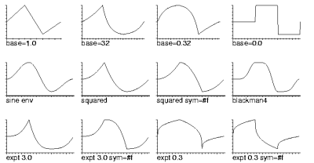 |
(env-channel '(0 0 1 1 2 -.75 3 0)) (env-sound '(0 0 1 1 2 -.75 3 0) 0 100 32.0) (env-sound '(0 0 1 1 2 -.75 3 0) 0 100 .032) (env-sound '(0 0 1 1 2 -.75 3 0) 0 100 0.0) (sine-env-channel '(0 0 1 1 2 -.75 3 0)) (env-squared-channel '(0 0 1 1 2 -.75 3 0)) (blackman4-env-channel '(0 0 1 1 2 -.75 3 0)) (env-squared-channel '(0 0 1 1 2 -.75 3 0) #f) (env-expt-channel '(0 0 1 1 2 -.75 3 0) 3.0) (env-expt-channel '(0 0 1 1 2 -.75 3 0) 3.0 #f) (env-expt-channel '(0 0 1 1 2 -.75 3 0) .3) (env-expt-channel '(0 0 1 1 2 -.75 3 0) .3) |
for-each-sound-file func dir map-sound-files func dir match-sound-files func dir
for-each-sound-file and map-sound-files apply 'func' to each sound file in 'dir'. The 'func' is passed one argument, the sound file name. map-sound-files returns a list of the results, if any, returned from 'func'. match-sound-files applies 'func' to each sound file in 'dir' and returns a list of files for which func does not return #f.
(for-each-sound-file
(lambda (n)
(if (> (mus-sound-duration n) 10.0)
(snd-print n)))
(sound-files-in-directory "."))
insert-channel filedat beg dur snd chn edpos
insert-channel inserts the specified data ('filedat') in the given channel at the given location. See mix-channel for a description of 'filedat'.
mix-channel filedat beg dur snd chn edpos
mix-channel is a "regularized" version of the file mixing functions (mix and mix-sound). Its first argument can be either a filename (a string), a sound, or a list containing the filename (or index), the start point in the file, and (optionally) the channel of the file to mix:
(mix-channel "pistol.snd") ; mixing starts at sample 0, entire sound is mixed (mix-channel "pistol.snd" 10000) ; mixing starts at sample 10000 in current sound (mix-channel (list "pistol.snd" 1000)) ; mixed data starts at sample 1000 in pistol.snd (mix-channel (list "2.snd" 0 1)) ; mixed data reads channel 1 in 2.snd
mono->stereo new-name snd1 chn1 snd2 chn2 stereo->mono orig-snd chan1-name chan2-name mono-files->stereo new-name chan1-file chan2-file
mono->stereo combines two mono sounds (currently open in Snd) into one (new) stereo file. mono-files->stereo is the same, but the source sounds are files, not necessarily already open in Snd. stereo->mono takes a stereo sound and produces two new mono sounds. (The corresponding stereo->mono-files can be based on the existing extract-channel function).
normalized-mix filename beg in-chan snd chn
normalized-mix is like mix but the mixed result has same peak amplitude as the original data.
normalize-sound amp (beg 0) dur snd
normalize-sound scales the sound 'snd' to peak amplitude 'amp'. It is the multichannel version of normalize-channel.
offset-channel amount beg dur snd chn edpos
offset-channel adds a constant (DC offset) to a channel.
offset-sound off (beg 0) dur snd
offset-sound adds 'off' to every sample in the sound 'snd'. It is the multichannel version of offset-channel.
pad-sound beg dur snd
pad-sound places a block of 'dur' zeros in every channel of the sound 'snd' starting at 'beg'. It is the multichannel version of pad-channel.
redo-channel (edits 1) snd chn
redo-channel is a "regularized" version of redo.
scale-sound scl (beg 0) dur snd
scale-sound multiplies every sample in the sound 'snd' by 'scl'. It is the multichannel version of scale-channel.
undo-channel (edits 1) snd chn
undo-channel is a "regularized" version of undo.
The two functions in fade.scm perform frequency-domain cross-fades, that is, the cross-fade is handled by a bank of bandpass filters (formant generators). The effect is sometimes only slightly different from a normal (time-domain) cross-fade, but there are some interesting possibilities ("sound evaporation", etc).
cross-fade beg dur amp file1 file2 ramp-beg ramp-dur ramp-type bank-dur fs fwidth
cross-fade stitches 'file1' to 'file2' using filtering to provide the join (rather than amplitude ramps). 'ramp-type' can be 0: sweep up, 1: sweep down, 2: sweep split from the middle; "sweep up" means that the low frequencies are filtered out first, etc. 'fs' is how many formants to set up; 'fwidth' is the formant resonance width control; 'ramp-beg' and 'ramp-dur' set the start point and length of the sweep; 'bank-dur' controls how much time is spent in the formant bank before starting or after ending the ramp.
(with-sound () (cross-fade 0 2 1.0 "oboe.snd" "trumpet.snd" 0.5 1.0 0 .1 256 2)) (float-vector->channel (cross-fade 0 1.5 1.0 0 1 0.5 .5 0 1.0 256 2))
These fades seem more successful to me when done relatively quickly (the opposite of the dissolve-fade below which is best if done as slowly as possible). With any luck the "sweep up" case can produce a sort of "evaporation" effect. A similar idea is behind dissolve-fade:
dissolve-fade beg dur amp file1 file2 fsize r lo hi
It ramps in and out frequency bands chosen at random. The original hope was to get something like a graphical dissolve, but it turns out to be better to let the random changes float along with no overall direction. If the current band amplitude is 1.0, we send it toward 0.0 and vice versa. Given patience and a suitably noisy original, strange pitches emerge and submerge. 'fsize' is the formant bank size; 'r' is the same as 'fwidth' in cross-fade (resonance width) modulo a factor of 2 (sigh...). 'lo' and 'hi' set the portion of the formant bank that is active during the dissolve.
(with-sound () (dissolve-fade 0 1 1.0 "oboe.snd" "trumpet.snd" 256 2 0 128)) (float-vector->channel (dissolve-fade 0 2 1 0 1 1024 2 2 #f))
freeverb is Jezar Wakefield's reverberator, translated by Michael Scholz from CLM's freeverb.ins (written by Fernando Lopez-Lezcano), and documented in freeverb.html in the CLM tarball.
freeverb
(room-decay 0.5)
(damping 0.5)
(global 0.3)
(predelay 0.03)
(output-gain 1.0)
(output-mixer #f)
(scale-room-decay 0.28)
(offset-room-decay 0.7)
(combtuning '(1116 1188 1277 1356 1422 1491 1557 1617))
(allpasstuning '(556 441 341 225))
(scale-damping 0.4)
(stereo-spread 23)
(verbose #f)
Here is a paraphrase of some of Fernando's documentation. 'room-decay' determines the decay time of the reverberation. 'damping' set the high frequency damping; this parameter can be a number, or an array or a list (with same number of elements as output channels). It is possible to control the damping for each output channel. 'global' controls how the outputs of all reverbs (one per channel) are mixed into the output stream. Specifying "0" will connect each reverberator directly to each output channel, "1" will mix all reverberated channels equally into all output channels. Intermediate values will allow for an arbitrary balance between local and global reverberation. The overall gain of the mixing matrix is kept constant. 'output-mixer' overrides this parameter. 'predelay' sets the predelay that is applied to the input streams. An array or list lets you specify the individual predelays for all chanenels. 'output-gain' is the overall gain multiplier for the output streams. 'output-mixer' sets the output mixing matrix directly (rather than through 'global').
(with-sound (:reverb freeverb :reverb-data '(:output-gain 3.0)) (fm-violin 0 .1 440 .1 :reverb-amount .1))
This is Fernando Lopez-Lezcano's CLM grani granular synthesis instrument translated to Scheme by Mike Scholz. The Ruby version is in clm-ins.rb.
grani start-time duration amplitude file (input-channel 0) ; input file channel from which samples are read (grains 0) ; if not 0, total number of grains to be generated (amp-envelope '(0 0 0.3 1 0.7 1 1 0)) ; overall amplitude envelope for note (grain-envelope '(0 0 0.3 1 0.7 1 1 0)) ; env for each individual grain (grain-envelope-end #f) ; if not #f, a second grain env (grain-envelope-transition '(0 0 1 1)) ; interp 0: use grain-envelope, 1: use grain-envelope-end (grain-envelope-array-size 512) ; make-table-lookup table size (grain-duration 0.1) ; number or envelope setting grain duration (in seconds) (grain-duration-spread 0.0) ; random spread around 'grain-duration' (grain-duration-limit 0.002) ; minimum grain duration (in seconds) (srate 0.0) ; number or envelope setting sampling rate conversion (srate-spread 0.0) ; random spread of src around 'srate' (srate-linear #f) ; if #f, srate (envelope) is exponential (srate-base (expt 2 (/ 12))) ; srate env base if exponential (srate-error 0.01) ; error bound for exponential conversion (grain-start '(0 0 1 1)) ; env that sets input file read point of current grain (grain-start-spread 0.0) ; random spread around 'grain-start' (grain-start-in-seconds #f) ; if #f, treat 'grain-start' as a percentage (grain-density 10.0) ; env on number of grains / second in output (grain-density-spread 0.0) ; random spread around 'grain-density' (reverb-amount 0.01) (reverse #f) ; if #t, input is read backwards (where-to 0) ; locsig stuff — see the full documentation (where-bins ()) (grain-distance 1.0) ; distance of sound source (locsig) (grain-distance-spread 0.0) ; random spread around 'grain-distance' (grain-degree 45.0) (grain-degree-spread 0.0) (verbose #t) (with-sound (:channels 2 :reverb jc-reverb :reverb-channels 1) (grani 0 1 .5 "oboe.snd" :grain-envelope '(0 0 0.2 0.2 0.5 1 0.8 0.2 1 0)))
Snd can be used with non-sound data, and with-sound makes it easy to write such data to a sound file. An example is heart.scm. In this code, we search a file for blood pressure readings (they are scattered around with a bunch of other stuff), then write those numbers to a stereo sound file (the sphygmometer readings are between 70 and 150), then open that file in Snd with all the sound-related clipping features turned off. We also tell Snd to skip the data file in its start-up load process (since it is an uninterpretable text file) by incrementing script-arg.
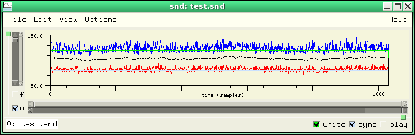hooks.scm and hooks.rb have various hook-related functions.
describe-hook hook
describe-hook tries to decipher the functions on the hook list; this is almost identical to hook-functions.
hook-member func hook
hook-member returns #t if 'func' is already on the hook list, equivalent to (member value (hook-functions hook))
reset-all-hooks
reset-all-hooks resets all of Snd's built-in hooks.
snd-hooks
snd-hooks returns a list of all Snd built-in non-channel hooks.
with-local-hook hook local-hook-procs thunk
with-local-hook is a kind of "let" for hooks; it evaluates 'thunk' with 'hook' set to 'local-hook-procs' (a list which can be nil), then restores 'hook' to its previous state upon exit. The result returned by 'thunk' is returned by with-local-hook.
html obj
index.scm provides a connection between firefox and the Snd documentation. The index itself is built by make-index.scm, then accessed through the function html. (html arg), where 'arg' can be a string, a symbol, or a procedure sends the html reader to the corresponding url in the Snd documents.
These two files provide support for Snd as an Emacs subjob. inf-snd.el is by Michael Scholz, and DotEmacs is by Fernando Lopez-Lezcano. Both can be loaded in your ~/.emacs file (or ~/.xemacs/init.el if you're using xemacs).
DotEmacs sets up "dialects" for various versions of Common Lisp and for Snd, then binds C-x C-l to run ACL. This is intended for CCRMA'S 220 class, but it might be of interest to others. Much fancier is inf-snd.el. What follows is taken almost verbatim from Mike Scholz's comments in that file:
inf-snd.el defines a snd-in-a-buffer package for Emacs. It includes a Snd-Ruby mode (snd-ruby-mode), a Snd-Scheme mode (snd-scheme-mode), and a Snd-Forth mode (snd-forth-mode) for editing source files. The commands inf-snd-help and snd-help access the description which Snd provides for many functions. Using the prefix key C-u you get the HTML version of Snd's help. With tab-completion in the status area you can scan all functions at a glance. A menu "Snd/Ruby" is placed in the Emacs menu bar. Entries in this menu are disabled if no inferior Snd process exists. These variables may need to be customized to fit your system:
inf-snd-ruby-program-name "snd-ruby" Snd-Ruby program name inf-snd-scheme-program-name "snd-s7" Snd-Scheme program name using s7 inf-snd-forth-program-name "snd-forth" Snd-Forth program name inf-snd-working-directory "~/" where Ruby or Scheme scripts reside inf-snd-index-path "~/" path to snd-xref.c inf-snd-prompt-char ">" listener prompt snd-ruby-mode-hook nil to customize snd-ruby-mode snd-scheme-mode-hook nil to customize snd-scheme-mode snd-forth-mode-hook nil to customize inf-snd-forth-mode
You can start inf-snd-ruby-mode either with the prefix-key (C-u M-x run-snd-ruby) — you will be asked for program name and optional arguments — or directly via (M-x run-snd-ruby). In the latter case, the variable inf-snd-ruby-program-name needs to be set correctly. inf-snd-scheme-mode and inf-snd-forth-mode are handled in the same way. Here's an example for your ~/.emacs file:
(autoload 'run-snd-ruby "inf-snd" "Start inferior Snd-Ruby process" t) (autoload 'run-snd-scheme "inf-snd" "Start inferior Snd-Scheme process" t) (autoload 'run-snd-forth "inf-snd" "Start inferior Snd-Forth process" t) (autoload 'snd-ruby-mode "inf-snd" "Load snd-ruby-mode." t) (autoload 'snd-scheme-mode "inf-snd" "Load snd-scheme-mode." t) (autoload 'snd-forth-mode "inf-snd" "Load snd-forth-mode." t) (setq inf-snd-ruby-program-name "snd-ruby -notebook") (setq inf-snd-scheme-program-name "snd-scheme -separate") (setq inf-snd-forth-program-name "snd-forth") (setq inf-snd-working-directory "~/Snd/") (setq inf-snd-index-path "~/Snd/snd/")
See inf-snd.el for more info and examples of specializing these modes. You can change the mode while editing a Snd-Ruby, Snd-Scheme, or Snd-Forth source file with M-x snd-ruby-mode, M-x snd-scheme-mode, or M-x snd-forth-mode. To have Emacs determine automatically which mode to set, you can use special file-extensions. I use file-extension ".rbs" for Snd-Ruby source files, ".cms" for Snd-Scheme, and ".fth" for Snd-Forth.
(set-default 'auto-mode-alist
(append '(("\\.rbs$" . snd-ruby-mode)
("\\.cms$" . snd-scheme-mode))
auto-mode-alist))
Or you can use the local mode variable in source files, e.g. by "-*- snd-ruby -*-" or "-*- snd-scheme -*-" in first line.
Key bindings for inf-* and snd-*-modes
\e\TAB snd-completion symbol completion at point C-h m describe-mode describe current major mode
Key bindings of inf-snd-ruby|scheme|forth-mode:
C-c C-s inf-snd-run-snd (Snd-Ruby|Scheme|Forth from a dead Snd process buffer) M-C-l inf-snd-load load script in current working directory C-c C-f inf-snd-file open view-files-dialog of Snd M-C-p inf-snd-play play current sound file C-c C-t inf-snd-stop stop playing all sound files C-c C-i inf-snd-help help on Snd-function (snd-help) C-u C-c C-i inf-snd-help-html help on Snd-function (html) C-c C-q inf-snd-quit send exit to Snd process C-c C-k inf-snd-kill kill Snd process and buffer
Key bindings of snd-ruby|scheme|forth-mode editing source files:
C-c C-s snd-run-snd M-C-x snd-send-definition C-x C-e snd-send-last-sexp C-c M-e snd-send-definition C-c C-e snd-send-definition-and-go C-c M-r snd-send-region C-c C-r snd-send-region-and-go C-c M-o snd-send-buffer C-c C-o snd-send-buffer-and-go C-c M-b snd-send-block (Ruby only) C-c C-b snd-send-block-and-go (Ruby only) C-c C-z snd-switch-to-snd C-c C-l snd-load-file C-u C-c C-l snd-load-file-protected (Ruby only) C-c C-f snd-file open view-files-dialog of Snd C-c C-p snd-play play current sound file C-c C-t snd-stop stop playing all sound files C-c C-i snd-help help on Snd-function (snd-help) C-u C-c C-i snd-help-html help on Snd-function (html) C-c C-q snd-quit send exit to Snd process C-c C-k snd-kill kill Snd process and buffer
If xemacs complains that comint-snapshot-last-prompt is not defined, get the latest comint.el; I had to go to the xemacs CVS site since Fedora Core 5's xemacs (21.4) had an obsolete copy. Then scrounge around until you find xemacs-packages/xemacs-base/comint.el. Don't use the comint.el in the emacs package. It's not a tragedy if this variable isn't defined — you just don't get a prompt in the Snd Emacs window, but things still work. If either emacs or xemacs complains that it can't find gforth.el, you can find that file in the gforth package or site (or perhaps you can comment out the line (require 'forth-mode "gforth") in inf-snd.el). Finally, if temporary-file-directory is undefined, you can set it alongside the rest of the variables. So, for example, I (Bill S) have the following in my ~/.xemacs/init.el:
(setq load-path
(append (list nil
"/home/bil/cl"
"/home/bil/test/gforth-0.6.2" ; gforth.el
)
load-path))
(autoload 'run-snd-ruby "inf-snd" "Start inferior Snd-Ruby process" t)
(autoload 'run-snd-scheme "inf-snd" "Start inferior Snd-Scheme process" t)
(autoload 'run-snd-forth "inf-snd" "Start inferior Snd-Forth process" t)
(autoload 'snd-ruby-mode "inf-snd" "Load snd-ruby-mode." t)
(autoload 'snd-scheme-mode "inf-snd" "Load snd-scheme-mode." t)
(autoload 'snd-forth-mode "inf-snd" "Load snd-forth-mode." t)
(setq inf-snd-ruby-program-name "~/ruby-snd/snd") ; these are my local Snd's
(setq inf-snd-scheme-program-name "~/cl/snd")
(setq inf-snd-forth-program-name "~/forth-snd/snd")
(setq inf-snd-working-directory "~/cl/")
(setq inf-snd-index-path "~/cl/")
(setq inf-snd-working-directory "~/cl/")
(setq inf-snd-index-path "~/cl/")
(setq temporary-file-directory "~/zap/")
If emacs complains about ruby-mode or something similar, you probably need to get ruby-mode.el and inf-ruby.el from ftp://ftp.ruby-lang.org/pub/ruby/ruby-*.tar.gz, or gforth.el from ftp://ftp.gnu.org/pub/gnu/gforth/gforth-0.[67].*.tar.gz.
jc-reverb is a reverberator developed by John Chowning a long time ago (I can't actually remember when — before 1976 probably), based on ideas of Manfred Schroeder. It "colors" the sound much more than nrev, and has noticeable echoes, but I liked the effect a lot. new-effects.scm has a version of jc-reverb that runs as a normal snd editing function (via map-channel), whereas the jcrev.scm version assumes it is being called within with-sound:
Scheme:
(with-sound (:reverb jc-reverb) (fm-violin 0 .1 440 .1 :reverb-amount .1))
Ruby:
with_sound(:reverb, :jc_reverb) do fm_violin_rb(0, 0.1, 440, 0.1) end
Forth:
0 1 440 0.2 ' fm-violin :reverb ' jc-reverb with-sound
jc-reverb has three parameters:
jc-reverb low-pass (volume 1.0) amp-env
if 'low-pass' if #t, a low pass filter is inserted before the output; 'volume' can be used to boost the output; 'amp-env' is an amplitude envelope that can be used to squelch the reverb ringing at the end of a piece.
(with-sound (:reverb jc-reverb :reverb-data '(#t 1.5 (0 0 1 1 2 1 3 0))) (fm-violin 0 .1 440 .1))
| Reverbs in Snd |
freeverb: freeverb.scm, freeverb.rb |
lint.scm is a lint program for Scheme. It tries to find errors or infelicities in your code. To try it:
(lint "some-code.scm")
lint tries to reduce false positives, so its default is somewhat laconic. There are several variables at the start of lint.scm to control additional output:
*report-unused-parameters* ; if #t, report unused function/macro parameters *report-unused-top-level-functions* ; if #t, report unused functions *report-undefined-variables* ; if #t, report undefined identifiers *report-shadowed-variables* ; if #t, report function parameters that are shadowed *report-minor-stuff* ; if #t, report all sorts of other stuff
lint is not real smart about functions defined outside the current file, so *report-undefined-variables* sometimes is confused. *report-minor-stuff* adds output about overly complicated boolean and numerical expressions, dangerous floating point operations, bad docstrings (this check is easily confused), and whatever else it finds that it thinks is odd.
The maracas are physical models developed by Perry Cook (CMJ, vol 21 no 3 Fall 97, p 44).
maraca beg dur
(amp .1)
(sound-decay 0.95)
(system-decay 0.999)
(probability .0625)
(shell-freq 3200.0)
(shell-reso 0.96)
maraca: (with-sound () (maraca 0 5 .5))
cabasa: (with-sound () (maraca 0 5 .5 0.95 0.997 0.5 3000.0 0.7))
big-maraca beg dur
(amp .1)
(sound-decay 0.95)
(system-decay 0.999)
(probability .0625)
(shell-freqs '(3200.0))
(shell-resos '(0.96))
(randiff .01)
(with-filters #t)
tambourine:
(with-sound ()
(big-maraca 0 1 .25 0.95 0.9985 .03125 '(2300 5600 8100) '(0.96 0.995 0.995) .01))
sleighbells:
(with-sound ()
(big-maraca 0 2 .15 0.97 0.9994 0.03125 '(2500 5300 6500 8300 9800)
'(0.999 0.999 0.999 0.999 0.999)))
sekere:
(with-sound ()
(big-maraca 0 2 .5 0.96 0.999 .0625 '(5500) '(0.6)))
windchimes:
(with-sound ()
(big-maraca 0 4 .5 0.99995 0.95 .001 '(2200 2800 3400) '(0.995 0.995 0.995) .01 #f))
big-maraca is like maraca, but takes a list of resonances and includes low-pass filter (or no filter).
marks.scm/rb is a collection of mark-related functions.
define-selection-via-marks m1 m2
define-selection-via-marks selects the portion between the given marks, then returns the selection length. The marks defining the selection bounds must be in the same channel.
describe-mark mark
describe-mark returns a description of the movements of the mark over the channel's edit history:
> (define m (add-mark 1234)) m > (describe-mark m) ((#<mark 1> sound: 0 "oboe.snd" channel: 0) 1234 478)
Here I placed a mark in oboe.snd at sample 1234, then deleted a few samples before it, causing it to move to sample 478.
fit-selection-between-marks m1 m2
fit-selection-between-marks tries to squeeze the current selection between two marks, using the granulate generator to fix up the selection duration (it currently does a less than perfect job).
mark-click-info mark
mark-click-info is a mark-click-hook function that describes a mark and its properties. It is used by with-marked-sound in ws.scm.
mark-explode (htype mus-next) (dformat mus-bfloat)
mark-explode splits a sound into a bunch of separate files based on mark placements. Each mark becomes the first sample of a separate sound.
mark-name->id name
mark-name->id is like find-mark, but searches all currently accessible channels. If a such a mark doesn't exist, it returns 'no-such-mark.
move-syncd-marks sync samples-to-move
move-syncd-marks moves any marks sharing the mark-sync value 'sync' by 'samples-to-move' samples.
pad-marks marks secs
pad-marks inserts 'secs' seconds of silence before each in a list of marks.
play-between-marks snd m1 m2
play-between-marks plays the portion in the sound 'snd' between the given marks.
play-syncd-marks sync
play-syncd-marks starts playing from all the marks sharing its 'sync' argument (see mark-sync).
report-mark-names
report-mark-names causes a named mark to display its name in the status area when its sample happens to be played.
save-mark-properties
save-mark-properties sets up an after-save-state-hook function to save any mark-properties.
snap-mark-to-beat
snap-mark-to-beat forces a dragged mark to end up on a beat.
snap-marks
snap-marks places marks at the start and end of the current selection in all its portions (i.e. in every channel that has selected data). It returns a list of all the marks it has added.
> (selection-position) 360 > (selection-framples) 259 > (snap-marks) (#<mark 0> #<mark 1>) > (mark-sample (integer->mark 0)) 360 > (mark-sample (integer->mark 1)) 619
syncup marks
syncup synchronizes a list of marks (positions them all at the same sample number) by inserting silences as needed.
marks.scm also has code that tries to make it simpler to sync marks together — you just click the marks that should share a mark-sync field, rather than laboriously setting each one in the listener; see start-sync and stop-sync. There is also some code (look for "eval-header" toward the end of the file) that saves mark info in a sound file header, and reads it when the file is subsequently reopened.
These files are translations (thanks to Michael Scholz!) of CLM's maxf.ins (thanks to Juan Reyes!). They implement a variant of the CLM formant generator developed by Max Mathews and Julius Smith (see their online paper). For a version of the filter closer to the paper, see the firmant generator. maxf.scm and maxf.rb provide a kind of demo instrument showing various ways to use the filter (banks tuned to different sets of frequencies, etc).
maxfilter file beg (att 1.0) (numf 1) (freqfactor 1.0) (amplitude 1.0) (amp-env '(0 1 100 1)) (degree (random 90.0)) (distance 1.0) (reverb-amount 0.2)
(with-sound () (maxfilter "dog.snd" 0)) (with-sound (:srate 44100) (maxfilter "dog.snd" 0 :numf 12)) (with-sound (:srate 44100) (maxfilter "dog.snd" 0 :numf 13 :att 0.75)) (with-sound (:srate 44100) (maxfilter "dog.snd" 0 :numf 2 :att 0.25 :freqfactor 0.5))
The files described in this section either add new top-level menus to Snd, or modify existing ones. Most were written by Dave Phillips.
edit-menu.scm
edit-menu.scm adds some useful options to the Edit menu:
Selection->new ; save selection in a new file, open that file Cut selection->new ; save selection in a new file, delete selection, open the file Append selection ; append selection to end of selected sound Make stereofile ; make a new 2-chan file, copy currently selected sound to it Trim front ; find first mark in each sync'd channel and remove all samples before it Trim back ; find last mark in each sync'd channel and remove all samples after it Crop ; find first and last mark in each sync'd channel and remove all samples outside them
fft-menu.scm
fft-menu.scm adds an "FFT Edits" top-level menu. It has entries for:
FFT notch filter ; use FFT to notch out a portion of the spectrum FFT squelch ; use FFT to squelch low-level noise Squelch vowels ; use FFT to squelch vowel-like portions of speech
marks-menu.scm
marks-menu.scm adds a "Marks" top-level menu with entries:
Play between marks ; play samples between marks Loop play between marks ; continuous play looping between marks Trim before mark ; remove samples before mark Trim behind mark ; remove samples after mark Crop around marks ; remove samples outside marks Fit selection to marks ; squeeze selection to fit between marks Define selection by marks ; define selection based on marks Mark sync ; if on, click mark to sync with other marks Mark sample loop points ; place marks at header loop points, if any Show loop editor ; edit loop points; this dialog is not really functional yet Delete all marks ; delete all marks Explode marks to files ; writes a separate file for each set of marks
new-effects.scm, effects-utils.scm, gtk-effects.scm, gtk-effects-utils.scm, effects.rb, effects.fs
new-effects.scm (effects.rb, effects.fs) implements an Effects menu. Use gtk-effects.scm with Gtk. There are a ton of choices, most of them presented in separate dialogs. The gain dialog is illustrated below. Some of the outer menu items are:
Amplitude effects (gain, normalize) Delay effects (various echos) Filter effects (various filters) Frequency effects (src, expsrc) Modulation effects (AM) Reverbs (nrev, jcrev, convolution) Various (flange, locsig, etc) Octave down Remove clicks Remove DC Compand Reverse | 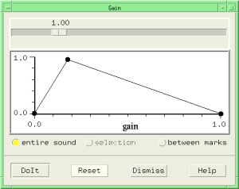 |
Most of these are either simple calls on Snd functions ("invert" is (scale-by -1)), or use functions in the other scm files. The actual operations follow the sync chain of the currently active channel.
special-menu.scm
special-menu.scm adds a "Special" menu with entries:
Append file MIDI to WAV (using Timidity) Record input channel Envelope new file (see start-enveloping) Play panned Save as MP3 (using bladeenc) Save as Ogg (using oggenc) Explode SF2 (using the code explode-sf2 in examp.scm)
Associated with these menus is a group of files that change Snd's overall appearance, add a box of handy icons, and so on: misc.scm, and new-backgrounds.scm. new-backgrounds.scm defines some background pictures that can be applied to all the Snd widgets: wood, granite, rough, blueish, and smoke. I think "rough" is the default used by misc.scm.
misc.scm loads these menus and interface improvements, adds several sound file extensions, makes sure all the widget backgrounds reflect the current background choice (metal, granite, wood, etc), adds some hook functions for mpeg files etc, and includes a number of options such as show-disk-space. It then adds these menu items:
File:Delete ; delete the selected file File:Rename ; rename the selected file Edit:Append selection ; append selection to end of current sound Edit:Replace with selection ; put copy of selection at cursor
I think Dave expects you to customize this to suit yourself, perhaps even moving the stuff you want to your initialization file.
mix.scm provides various mix utilities.
check-mix-tags snd chncheck-mix-tags looks at the current mix tags in the given channel, and if any are found that appear to be overlapping, it moves one of them down a ways.
color-mixes mix-list new-colorcolor-mixes sets the color of each mix in 'mix-list' to 'new-color'.
delay-channel-mixes beg dur snd chndelay-channel-mixes adds dur (which can be negative) to the begin time of each mix that starts after beg in the given channel.
env-mixes mix-list envelopeenv-mixes applies 'envelope' as an overall amplitude envelope to the mixes in 'mix-list'.
find-mix sample snd chnfind-mix returns the identifier of the mix at sample 'sample' (or anywhere in the given channel if 'sample' is not specified), or #f if no mix is found.
mix-click-info mixmix-click-info is a mix-click-hook function that posts a description of the clicked mix in the help dialog.
mix-click-sets-ampmix-click-sets-amp adds a mix-click-hook function so that if you click a mix, it is removed (its amplitude is set to 0.0); a subsequent click resets it to its previous value. This is intended to make it easy to compare renditions with and without a given mix.
mix-maxamp mixmix-maxamp returns the maxamp in the given mix.
mix-name->id namemix-name->id returns the mix with the given name, or 'no-such-mix if none can be found.
mix-sound file startmix-sound mixes 'file' (all chans) into the currently selected sound at 'start'.
mix->float-vector mixmix->float-vector returns a mix's samples in a float-vector.
mixes-length mix-listmixes-length returns the number of samples between the start of the first mix in 'mix-list' and the last end point.
mixes-maxamp mix-listmixes-maxamp returns the maxamp of the mixes in 'mix-list'.
move-mixes mix-list sampsmove-mixes moves each mix in 'mix-list' by 'samps' samples. To move all sync'd mixes together whenever one of them is dragged:
(hook-push mix-release-hook
(lambda (hook)
(let* ((id (hook 'id))
(samps-moved (hook 'samples))
(result (= (mix-sync id) 0)))
(if (not result)
(move-mixes (syncd-mixes (mix-sync id)) samps-moved))
(set! (hook 'result) result))))
See also snap-syncd-mixes-to-beat.
pan-mix file beg env snd auto-delete
pan-mix mixes 'file' into the current sound starting at 'beg' using the envelope 'env' to pan the mixed samples (0: all chan 1, 1: all chan 0). So,
(pan-mix "oboe.snd" 1000 '(0 0 1 1))
goes from all chan 0 to all chan 1. 'auto-delete' determines whether the in-coming file should be treated as a temporary file and deleted when the mix is no longer accessible.
pan-mix-region region beg env sndpan-mix-region is similar to pan-mix above, but mixes a region, rather than a file.
pan-mix-selection beg env sndpan-mix-selection is similar to pan-mix above, but mixes the current selection, rather than a file.
pan-mix-float-vector data beg env sndpan-mix-float-vector is similar to pan-mix above, but mixes a float-vector, rather than a file. The argument 'data' represents one channel of sound. To sync all the panned mixes together:
(let ((new-sync (+ 1 (mix-sync-max))))
(for-each
(lambda (id)
(set! (mix-sync id) new-sync))
(pan-mix-float-vector (make-float-vector 10 0.5) 100 '(0 0 1 1))))
play-mixes mix-listplay-mixes plays the mixes in 'mix-list'.
scale-mixes mix-list sclscale-mixes scales the amplitude of each mix in 'mix-list' by 'scl'.
scale-tempo mix-list sclscale-tempo changes the positions of the mixes in 'mix-list' to reflect a tempo change of 'scl'. (scale-tempo (mixes 0 0) 2.0) makes the mixes in snd 0, chan 0 happen twice as slowly. To reverse the order of the mixes: (scale-tempo (mixes 0 0) -1).
set-mixes-tag-y mix-list new-yset-mixes-tag-y sets the tag y location of each mix in 'mix-list' to 'new-y'.
silence-all-mixesThis sets all mix amplitudes to 0.0.
silence-mixes mix-listsilence-mixes sets the amplitude of each mix in 'mix-list' to 0.0.
snap-mix-to-beatsnap-mix-to-beat forces a dragged mix to end up on a beat (see x-axis-in-beats). To turn this off, (hook-remove mix-release-hook snap-mix-1). To snap the dragged mix, and every other mix syncd to it, use snap-syncd-mixes-to-beat.
src-mixes mix-list sclsrc-mixes scales the speed (resampling ratio) of each mix in 'mix-list' by 'scl'.
sync-all-mixes (new-sync 1)sync-all-mixes sets the mix-sync field of every active mix to 'new-sync'.
syncd-mixes syncsyncd-mixes returns a list (possibly null) of all mixes whose mix-sync field is set to 'sync'. Most of the functions in mix.scm take a 'mix-list'; to form that list based on a given mix-sync value, use syncd-mixes:
(scale-mixes (syncd-mixes 2) 2.0)which scales the amplitude by 2.0 of any mix whose mix-sync field is 2.
transpose-mixes mix-list semitonestranspose-mixes sets the speed of mix in 'mix-list' to cause a transposition by the given number of semitones.
make-moog-filter frequency Q moog-filter gen input
moog is a translation of CLM's moog.lisp (written by Fernando Lopez-Lezcano — http://ccrma.stanford.edu/~nando/clm/moog), itself a translation of Tim Stilson's original C code. The functions provide a kind of CLM generator view of the filter. Fernando describes it as a "Moog style four pole lowpass (24db/Oct) filter clm unit generator, variable resonance, warm, analog sound ;-)". In make-moog-filter, 'frequency' is the cutoff frequency in Hz (more or less) and 'Q' controls the resonance: 0.0 = no resonance, whereas 1.0 causes the filter to oscillate at 'frequency'.
(define (moog freq Q)
(let ((gen (make-moog-filter freq Q)))
(lambda (inval)
(moog-filter gen inval))))
(map-channel (moog 1200.0 .7))
The Ruby version of this is in examp.rb, and the Forth version is in examp.fs.
musglyphs.scm provides Scheme/Snd wrappers to load CMN's cmn-glyphs.lisp (directly!), thereby defining most of the standard music notation symbols. Each of the original functions (e.g. draw-bass-clef) becomes a Snd/Scheme procedure of the form (name x y size style snd chn context). (draw-bass-clef 100 100 50) draws a bass clef in the current graph at position (100 100) of size 50; since the 'style' argument defaults to #f, the clef is displayed as a filled polygon; use #t to get an outline of the clef instead.
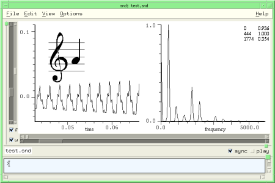A fancier example is included in musglyphs.scm. It takes a list of notes, each mixed as a virtual mix, and displays the note pitches as music notation on two staves at the top of the graph. The two main drawing functions are draw-staff and draw-a-note. The staves are drawn via an after-graph-hook function, and the notes are displayed via draw-mix-hook. mix-waveform-height sets the overall size of the music notation. The note list data is passed into these functions by setting various mix-properties: 'frequency and 'instrument (the first to give the pitch, the second the staff).
There's also an even fancier version of the same thing that treats the note heads as the mix tags, and changes the mix pitch if you drag the note up or down.
nb.scm provides popup help for files in the View:Files dialog. As you move the mouse through the file list, the help dialog posts information about the file underneath the mouse. This uses a slightly fancier file information procedure than finfo in examp.scm.
nb file note unb file prune-db
nb adds 'note' to the info associated with a file: (nb "test.snd" "test's info"). unb erases any info pertaining to a file: (unb "test.snd"). prune-db removes any info associated with defunct files. The Ruby version of nb (written by Mike Scholz) has several other features — see nb.rb for details.
The noise files are translations (thanks to Michael Scholz) of CLM's noise.ins. noise.ins has a very long pedigree; I think it dates back to about 1978. It can produce those all-important whooshing sounds.
fm-noise startime dur freq0 amp ampfun ampat ampdc freq1 glissfun freqat freqdc rfreq0 rfreq1 rfreqfun rfreqat rfreqdc dev0 dev1 devfun devat devdc (degree 0.0) (distance 1.0) (reverb-amount 0.005)
This is an old instrument, so one must make allowances. 'ampat' and 'ampdc' are the amplitude envelope ('ampfun') attack and decay times, and similarly for the frequency envelope 'glissfun', the random number frequency envelope 'rfreqfun' and the index envelope 'devfun' (dev = "deviation", and old radio-style name for the FM index). Each envelope must go on the x axis from 0 to 100; the attack portion ends at 25, the decay portion starts at 75 (once upon a time there was a generator named LINEN; his full name was Line-Segment Envelope, but everyone just called him LINEN; they had to shout because he was a bit deaf). 'rfreq' is the frequency of the random number generator; if it is below about 25 Hz, you get automatic composition; above that you start to get noise. Well, you get a different kind of noise. 'dev' is the bandwidth of the noise; very narrow 'dev' gives a whistle, very broad more of a whoosh. This is simple FM where the modulating signal is white noise.
(with-sound ()
(fm-noise 0 2.0 500 0.25 '(0 0 25 1 75 1 100 0) 0.1 0.1 1000 '(0 0 100 1) 0.1 0.1
10 1000 '(0 0 100 1) 0 0 100 500 '(0 0 100 1) 0 0))
There is also a generator-like version of the instrument:
make-fm-noise len freq (amp 0.25) (ampfun '(0 0 25 1 75 1 100 0)) (ampat 0.1)
(ampdc 0.1) (freq1 1000) (glissfun '(0 0 100 1)) (freqat 0.1) (freqdc 0.1)
(rfreq0 10) (rfreq1 1000) (rfreqfun '(0 0 100 1)) (rfreqat 0) (rfreqdc 0)
(dev0 100) (dev1 500) (devfun '(0 0 100 1)) (devat 0) (devdc 0)
(degree (random 90.0)) (distance 1.0) (reverb-amount 0.005)
This file has a variety of functions oriented toward some experiments that so far haven't panned out.
factorial n binomial n k n-choose-k n k plgndr l m x legendre-polynomial a x legendre n x gegenbauer n x (alpha 0.0) chebyshev-polynomial a x (kind 1) chebyshev n x (kind 1) hermite-polynomial a x hermite n x laguerre-polynomial a x (alpha 0.0) laguerre n x (alpha 0.0) Si x Ci x sin-m*pi/n m n show-digits-of-pi-starting-at-digit start
In this case, "the code is the documentation" — these functions are informal, experimental, etc. One amusing function is sin-m*pi/n. It returns an expression giving the exact value of sin(m*pi/n), m and n integer, if we can handle n. Currently n can be anything of the form 2^a 3^b 5^c 7^d 11^e 13^f 17^g 257^h, so (sin-m*pi/n 1 60) returns an exact expression for sin(pi/60). The expression is not reduced much.
> (sin-m*pi/n 1 9) (/ (- (expt (+ (sqrt 1/4) (* 0+1i (sqrt 3/4))) 1/3) (expt (- (sqrt 1/4) (* 0+1i (sqrt 3/4))) 1/3)) 0+2i) > (eval (sin-m*pi/n 1 9)) 0.34202014332567 > (sin (/ pi 9)) 0.34202014332567 > (sin (/ pi (* 257 17))) 0.00071906440440859 > (eval (sin-m*pi/n 1 (* 17 257))) 0.00071906440440875
Another amusing function is show-digits-of-pi-starting-at-digit, translated from a C program written by David Bailey. It shows 10 (hex) digits of the expansion of pi starting from any point in that expansion.
peak-phases.scm contains the phases that produce a minimum peak amplitude ("low peak-factor") sum of sinusoids, the unpulse-train, so to speak. I started with the questions: given a sum of n equal amplitude harmonically related sinusoids, what set of initial phases minimizes the peak amplitude? What is that peak as a function of n? Can we find any pattern to the initial phases so that a tiresome search is unnecessary? For the second question, there are several simple cases. If all harmonics are cosines, the peak amplitude is n (they all are 1 at the start). If we have 2 harmonics, and vary the initial phase of the second from 0.0 to 2*pi, graphing the resulting peak amplitude, we get:
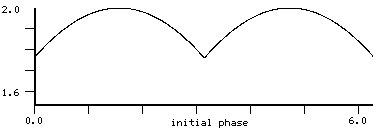 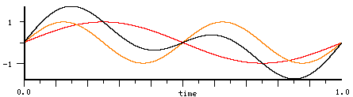The graph on the left is the second harmonic's initial phase vs the peak amplitude. Since 0.0 appears to be a minimum (we can show that it is via simultaneous non-linear equations; see peak-phases.scm), we can solve for the peak at that point using calculus: differentiate sin(x) + sin(2x) to get cos(x) + 2cos(2x) = 4cos^2(x) + cos(x) -2, a quadratic equation in cos(x). Let y=cos(x), solve for y: (sqrt(33)-1)/8. Plug that back into the original equation (x=acos(y) = 0.93592945566133), and get 1.7601725930461. Looking back at the peak-amplitude graph, it appears that the peak varies as approximately 1.76+0.24*abs(sin(initial-phase)). If we graph the peak location, we see that it is moving (nearly) linearly with the initial-phase from the 0.9359 business given above to the corresponding peak location when the initial-phase is pi (acos((1-sqrt(33))/8) = 2.20566), then the two peaks cross, and the other one predominates from pi to 2*pi. So the peak amplitude as a function of the initial-phase ("phi" below) is (very nearly):
(let ((a (acos (/ (- (sqrt 33) 1) 8)))
(b (acos (/ (- 1 (sqrt 33)) 8))))
(let ((ax (+ b (* (- phi pi) (/ (- a b) pi)))) ; same for peak 2 (the peak when phi is pi..2pi)
(bx (let ((ap (- (* 2 pi) a)) ; start location of peak 1 (the peak when phi is 0..pi)
(bp (- (* 2 pi) b))) ; end location of peak 1
(+ ap (* phi (/ (- bp ap) pi)))))) ; the 2 peaks move in opposite directions
(max (abs (+ (sin ax) (sin (+ (* 2 ax) phi)))) ; plug in the 2 locations and
(abs (+ (sin bx) (sin (+ (* 2 bx) phi))))))) ; return the max
We can reduce the peak difference below .00000002 by using:
(let ((waver (+ (* .002565 (sin (* 2 phi)))
(* .0003645 (sin (* 4 phi)))
(* .0001 (sin (* 6 phi)))
(* .00004 (sin (* 8 phi)))
(* .00002 (sin (* 10 phi)))
(* .00001 (sin (* 12 phi)))
(* .0000035 (sin (* 14 phi))))))
(let ((ax (- (+ b (* (- phi pi) (/ (- a b) pi))) waver))
(bx (- (+ ap (* phi (/ (- bp ap) pi))) waver)))
...))
Similarly sin(x)+sin(3x) differentiated is cos(x)+3cos(3x) = 12cos^3(x)-8cos(x). cos(x)=0 is a minimum of the original, but the other case is acos(sqrt(2/3)) = 0.61547970867039, and plugging that into the original gives 1.539600717839. If we vary the sin(3x) term's initial phase, we get approximately 1.5396 + 0.4604 * sin(initial-phase). As before, the location of the peak varies nearly linearly with the initial-phase, the end point now being acos(-(sqrt(2/3))):
(let* ((a (acos (sqrt 2/3)))
(b (acos (- (sqrt 2/3))))
(ax (let ((ap (- (* 2 pi) a)) ; start loc peak 1
(bp (- (* 2 pi) b))) ; end loc
(+ ap (* phi (/ (- bp ap) 2 pi))))) ; peak 1
(bx (- ax pi))) ; peak 2 (the two interleave)
(max (abs (+ (sin ax) (sin (+ (* 3 ax) phi)))) ; plug in our 2 peak locations
(abs (+ (sin bx) (sin (+ (* 3 bx) phi)))))) ; and return the max
sin(x)+sin(5x+a) becomes a quadratic in cos^2(x), so we can find the peak location as a function of the initial-phase:
(let* ((a0 (* pi 1/2)) (a1 (acos (sqrt (/ (- 25 (sqrt 145)) 40)))) (ax (+ a0 (/ (* (- a1 a0) phi) pi))) (bx (+ pi ax)) (cx (- a0 (/ (* (- a1 a0) (- (* 2 pi) phi)) pi))) (dx (+ cx pi))) (max (abs (+ (sin ax) (sin (+ (* 5 ax) phi)))) (abs (+ (sin bx) (sin (+ (* 5 bx) phi)))) (abs (+ (sin cx) (sin (+ (* 5 cx) phi)))) (abs (+ (sin dx) (sin (+ (* 5 dx) phi))))))
but now we have four peaks to track. The minimum peak is at initial-phase of pi, and is 1.81571610422. sin(x)+sin(4x+a) is much messier to handle in this manner when a=0 because it ends up in a quartic equation in cos(x). A glance at the derivative, cos(x)+4*cos(4x+a), shows there is a 0 at (x=0, a=acos(-1/4)), (x=pi, a=acos(1/4)), (x=pi/2, a=pi/2) and so on, but these points do not seem to be at maxima of the original. A brute force search finds that the minimum peak (which is at initial-phase of 0) is at 1.940859829001 and is 1.9282082241513. We could also use poly-roots in poly.scm:
> (map (lambda (y)
(+ (sin y) (sin (* 4 y))))
(map acos (poly-roots (float-vector 4 1 -32 0 32)))) ; 4 + cos(x) - 32cos^2(x) + 32cos^4(x)
(... 1.928208224151313892413267491649096952858E0 ...)
I think in the sin(x)+sin(nx+a) case there's a minimum at a=pi, except when n=4k+3, and the peak itself (at either pi/2 or 3pi/2) approaches 2 as n increases. sin-nx-peak in numerics.scm searches for this peak, and for reasonable "n" it can be compared to the equivalent search using poly-roots in poly.scm:
> (sin-nx-peak 6)
(1.966832009581999989057660894590273760791E0 ...)
(map (lambda (y)
(+ (sin y) (sin (* 6 y))))
(map acos (poly-roots (float-vector -6 1 108 0 -288 0 192)))) ; n*Tn + cos(x)
(1.966832009581999989057661205729776550611E0 ...)
Another case that is not too hard involves a sum of n sines all at 0 initial phase. This can be expressed as:
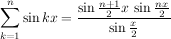which is the nsin generator in clm. Since the waveform is a two-sided pulse with the first local maximum at the peak, we can easily search for that peak as n increases. We find that it is approaching (3*pi)/(4*n), and if we plug that into the original equation, we get that the peak amplitude approaches 8*n*(sin^2(3*pi/8))/(3*pi), about 0.7245 * n (using the right hand expression above, set x to (3*pi)/(4*n), let n be large, so (n+1)/n approaches 1 and sin(y) is close to y if it is very small). A sum of n odd harmonics behaves similarly (the peak comes half as far from the zero crossing, but has the same max). A sum of n sines of alternating sign also has the same peak amp, but now the peak is at pi-(3*pi)/(4*n). Those are the easy cases. The next case involves 3 harmonics, where we vary the second and third harmonic's initial phase, looking for the minimum peak amplitude. One view of this terrain has the second harmonic's initial phase on the Y axis, the third's on the X axis, and the color for the height of the corresponding peak:
|
|
I tilted the graph slightly to try to show how the colors match the peaks. If we set the second component's phase to (a+pi)/2 where "a" is the third one's initial phase, we travel along the minimum going diagonally through the middle of the graph (I think the graph got truncated slightly: the top should match the bottom). The graph on the right is an attempt to show the 4-dimensional 4-harmonic case by stacking 3-D slices. I forgot to "invert" the colors, so red in the n=4 case matches a minimum (blue in the n=3 case); I should redo these graphs! A different way to view these graphs that can be applied to any number of dimensions (until we run out of disk space and patience), is to move through the possibilities in much the way you'd count to 100; before each 10's digit increments, you'd count diligently through all the 1's. Similarly, in the next set of graphs, we go from 0 to 2pi completely on one component before incrementing the next lower component. So, we get the second component moving slowly from 0 to 2pi, and, in the n=3 case, at each step it takes, it waits until the third component has gone from 0 to 2pi. This way we get all possible initial phases graphed in a normal 2D picture. Here is the n=3 case. The top level looks a bit like the n=2 case, but zooming in shows more complexity (each graph on the right is the selected portion of the one on its left). (The complexity in this case is mostly due to the slice-at-a-time approach).
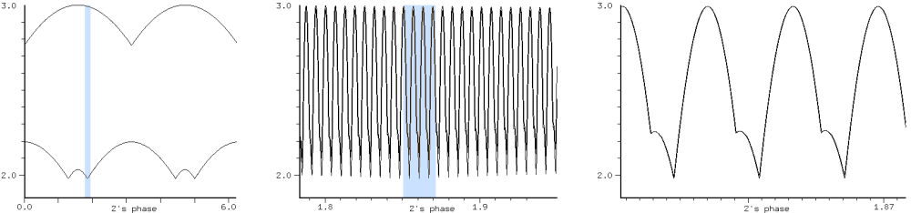We're trying to pinpoint the minima (there appear to be 4 black areas in the 3D graph, corresponding (I hope!) to the four minima in the second graph). A multiprecision search finds these values:
1.9798054823226 #(0.0 0.58972511242747172044431636095396243035 0.3166675693251937984129540382127743214) 1.9798054823226 #(0.0 1.58972511242745917492413809668505564332 0.3166675693251493894919690319511573761) 1.9798054823222 #(0.0 0.41027488757208596670267297668033279478 1.68333243067326587816268101960304193198) 1.9798054823222 #(0.0 1.41027488757208596670267297668033279478 1.68333243067326587816268101960304193198)
which shows that the minima are essentially at (23/39 19/60), (16/39 101/60), (1 + 23/39, 19/60), and (1 + 16/39, 101/60), all numbers multiplied by pi of course. (Our labor was mostly wasted; once we find one such point, the symmetries of the sinusoids hand us the other three for free. See find-other-mins in peak-phases.scm).
Here is n=4 graphed in the same way:
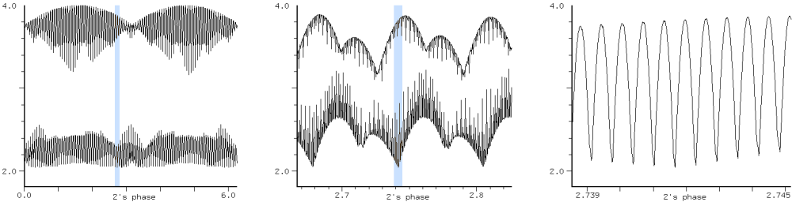One of those minima might be the one we found near 2.04. n=5:
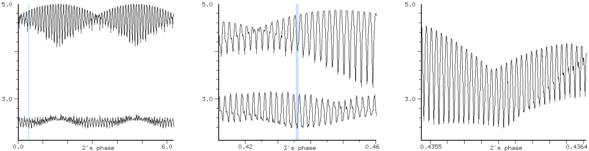Here is the corresponding 3-D graph of the 5 harmonic case. It is trying to show 8 4-D slices through the 5-D landscape, each 4-D case being 8 3-D slices as before (I forgot to invert the colors here also, so despite appearances, blue is a maximum, and we're looking for the reddest point, the global minimum):
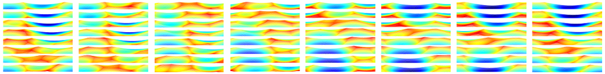n=6 is even more beautiful and complex, but the graph is too large to include here.
;;; use mix and with-temp-sound to create a draggable mix object for each component.
(load "peak-phases.scm")
(set! *with-mix-tags* #t) ; drag the tag to change the harmonic's initial phase
(set! *show-mix-waveforms* #f)
(set! *with-inset-graph* #f)
(define (show choice n) ; (show :all 14) for example
(definstrument (sine-wave start dur freq phase) ; make one harmonic
(let* ((beg (seconds->samples start))
(end (+ beg (seconds->samples dur)))
(osc (make-oscil freq phase)))
(do ((i beg (+ i 1)))
((= i end))
(outa i (oscil osc)))))
(if (null? (sounds))
(new-sound))
(let ((phases (cadr (get-best choice n))))
(do ((i 0 (+ i 1)))
((= i n))
(let* ((freq (case choice
((:all) (+ i 1))
((:even) (max (* 2 i) 1))
((:odd) (+ (* 2 i) 1))
((:prime) (primes i))))
(snd (with-temp-sound (:ignore-output #t :clipped #f)
(sine-wave 0 2 (* 10 freq) (* pi (phases i))))))
(let ((mx (car (mix snd 400)))) ; give some space after the axis
(set! (mix-tag-y mx) (+ 10 (* 40 i)))))))
(let ((mx (+ 2.0 (maxamp))))
(set! (y-bounds) (list (- mx) mx)))
(set! (x-bounds) (list 0.0 0.2)))
(hook-push mix-drag-hook ; report the current maxamp as we drag a component
(lambda (hook)
(let ((beg 0)
(end (framples))
(mx 0.0))
(for-each
(lambda (sine)
(set! beg (max beg (mix-position sine)))
(set! end (min end (+ (mix-position sine) (mix-length sine)))))
(caar (mixes)))
(let ((rd (make-sampler beg)))
(do ((i beg (+ i 1)))
((> i end))
(set! mx (max mx (abs (rd))))))
(status-report (format #f "maxamp: ~A" mx)))))
It's curious that the "min-peak-amplitude versus n" graphs look continuous; what happens to the minima as we slowly add the next higher harmonic? In the n=2 case, each minimum splits in two, then smoothly moves to its next minimum location (where the third harmonic has amplitude 1.0). Here's a graph of the moving minima, showing also the resultant peak amplitude:
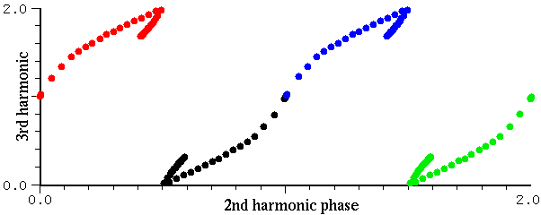 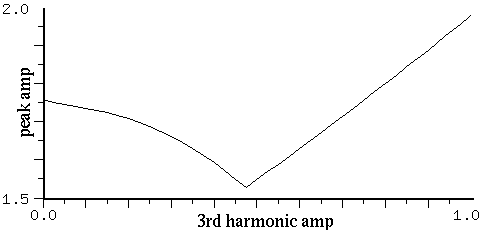In the first graph, each dot is at the phase location of the minimum peak amplitude as the third harmonic is increased in amplitude by 0.025. The turning points are just before the third harmonic reaches an amplitude of 0.5. The n=2 minima are at (0, 0), (red and green, with the green x=2 rather than 0), and (0, 1), (black and blue). Each splits and wanders eventually to the n=3 global minima at (0.41 1.68), (1.41, 1.68), (1.59, 0.32), and (0.59, 0.32). Each of the n=2 global minima ends up at 2 of the 4 n=3 global minima! How lucky can we be? If this worked in general, we could use it to speed up our search by following a minimum of n harmonics as it meanders to a minimum of n+1 harmonics:
;; this starts at the current min and marches to an n+1 min
(do ((n 3)
(phases (vector 0.0 0.0 1.0)))
(x 0.1 (+ x .1)))
((>= x 1.0))
(let ((p (fpsap x 0 n 1000 0.1 50 #f #t phases))) ; args may change without warning.
(format () ";~A: ~A~%" x p)
(do ((k 0 (+ k 1)))
((= k n))
(set! (phases k) (modulo (p k) 2.0)))))
Since we can restrict our search to 0.1 (maybe less) in each direction (rather than 2.0), we get a reduction of 20^n in the size of the space we are searching. But, as usual, there's a problem. The search works for n=2 -> 3 -> 4 -> 5, but going from 5 to 6, I seem to fall into a non-optimal path.
The other short-cut that immediately comes to mind is to look for the zeros of the derivative, then plug those into the original to get the maxima. But it is just as hard to find those zeros as to find the peaks of the original. Or we could minimize the length of the curve. In the 57 harmonics case, for example, the cosine version (peak=57.0) has a length of 485.45, whereas the minimized peak version (peak=7.547) has a length of 909.52. But this also doesn't save us any time over the original search.
So we're resigned to a laborious search. The first thing we need is a fast way to produce a sum of sinusoids. Up to n=25 or 30, the Chebyshev polynomials are just as fast as an inverse FFT, but why stop at 30! Since we'll be doing an inverse FFT for every test case, we need to make the FFT size as small as possible while still giving a reasonably accurate peak (say within 0.001 of the true peak). According to N Higham in "Accuracy and Stability of Numerical Algorithms", the FFT is stable and very accurate. He has a graph showing accumulated numerical errors down in the 10^-15 range! But that is not where the inverse FFT loses. We get n points back from an n-point FFT, so effectively we're sampling the resultant waveform at those n points. This subsampling can easily miss the peak. Here are the errors for inverse FFT's of various sizes for the 8 and 128 all harmonics case (all initial phases = 0.0, multiply "mult" by the number of harmonics to get the FFT size):
8 harmonics 128 harmonics
mult reported peak error reported peak error
2 5.02733 1.11686e0 81.48324 11.62779
4 5.57658 5.67621e-1 81.98630 11.12473
8 6.10774 3.64636e-2 93.08931 0.021721
16 6.10774 3.64636e-2 93.08931 0.021721
32 6.14247 1.72736e-3 93.08931 0.021721
64 6.14247 1.72736e-3 93.08931 0.021721
128 6.14391 2.87163e-4 93.10728 0.003753
256 6.14405 1.50636e-4 93.10980 0.001232
512 6.14420 5.36694e-6 93.11143 0.000391
1024 6.14420 5.36694e-6 93.11143 0.000391
2048 6.14420 1.59697e-6 93.11156 0.000525
4096 6.14420 1.44227e-7 93.11156 0.000525
8192 6.14420 3.60112e-8 93.11156 0.000526
128 seems pretty good. Those are spikey cases. If we try the best minimum-peak case, the errors are much smaller. Here are graphs of both the 0.0 phase and minimum phase cases for 8 harmonics:
| 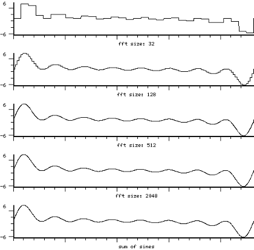 |

|
Ok, we have a fast way to make test cases. Off we go... When I started this search more than two years ago, I had no idea what a long and winding path I was headed down! My initial guess was that I could find minimum peaks close to the square root of n. This was based on nothing more than the breezy idea that the initial phases give you enough freedom that you're approaching the behavior of a sum of n random signals. I thought these minima could not be very hard to find; simply use a brute force grid. The first such grid used initial phases of 0 and pi, and I actually ran every possible such case, up to n=45 or so. Since each harmonic can be positive or negative, this is 2^44 cases to check, which is starting to be a pain. The results were discouraging; I did not get close to the square root of n. I also tried smaller grids (down to pi/32) for small n (say n < 8), without any success.
Next great idea: try random initial phases. This actually works better than it has any right to, but again the results are disappointing. You can run random phases until hell freezes over and only get to n^.6 or slightly less. And the long term trend of this process can dampen one's optimism. Here's a graph where we've taken 100 stabs at each case of N harmonics, N from 3 to 2000, using randomly chosen initial phases, and tracked the minimum, maximum, and average peaks. The graph is logarithmic (that is we show (log minimum N) and so on):

The trend continues upwards as N goes to 100000; it probably approaches 1 in the limit. But we can always do better than n^.6 by using phases 0.0938*i*i - 0.35*i where "i" is the harmonic number counting from 0. This little formula gives results as low as n^.541 (at n=2076), and it is always below n^.6 if n is large enough. Lots of such formulas get us down to n^.53 or, as n gets larger, .52: in the all harmonic case, if n=65536, 4.5547029e-05*i*i + 0.640075398*i gives a peak of 309.9, and -4.697190e-05*i*i + 1.357080536*i peaks at 303.6 (n^.515). If n=131072, 2.09440276*i*i + 1.4462367*i peaks at 438.7 (n^.516).
A good quadratic for each n, in the all harmonics case, is (pi/n)*i*i - i*pi/2. Except for the pi/n term, the rest just marches through the quadrants in order, so this is the same as (pi*(((mod(i,4)/2)+(i*i/n)))). This is similar to the formula suggested by M. Schroeder, but the addition of the "mod(i,4)/2" term improves its performance. If N=100, for example, Schroeder's peak is 13.49, whereas the mod peak is 11.90. There are better choices of quadrant than mod(i,4); if N=14, the mod(i,4) formula gives a peak of 4.89 (Schroeder's formula's peak is 5.1), but an exhaustive search of all quadrant choices finds #(0 0 0 1 3 3 0 1 2 3 1 3 2 3) with a peak of 4.28. Since the search involves approximately 4^n FFTs, there's not much hope of going above N=20 or thereabouts. I can't see any pattern in the lists of ideal quadrants.
The corresponding even harmonics version is (-pi/n)*(i+1)*(i+1) - (i+1)*pi/2. These sorts of formulas do better as n increases, but I don't think they reach n^.5. If n=4000000, the peak is at 2408.9 (n^.512). A linear equation in "i" here is simply phase offset in the sum of sines formula mentioned earlier, so given an initial phase of x*i, as x goes from 0 to pi/2, the peak goes from .7245*n to n. Another good variant is (pi*i*i)/n using cos rather than sin.
I haven't found any functions that get all the way to the square root. In the next graph, the y axis is the peak value with n=100, the x axis is the number of tests, and we've sorted the tests by peak. Each test is centered around a known excellent minimum peak, and the separate curves are showing the peaks when the initial phases can vary around that best value by pi/4, then pi/8 etc. It's hard to read at first, but take the black top curve. This is what you'd get if you randomly sampled a hypercube whose side length is pi/2 centered on that minimum. Nearly all the values are between 18 (100^.63) and 23 (100^.68). Each successive curve divides the space we sample by 2 in all 100 dimensions, so by the time we get to the bottom curve, we've reduced our search space by a factor of 2^800 (we're down to .006 on a side), and we still don't see the actual minimum even once in 50000 tries! Imagine trying to set up a grid to catch this point.
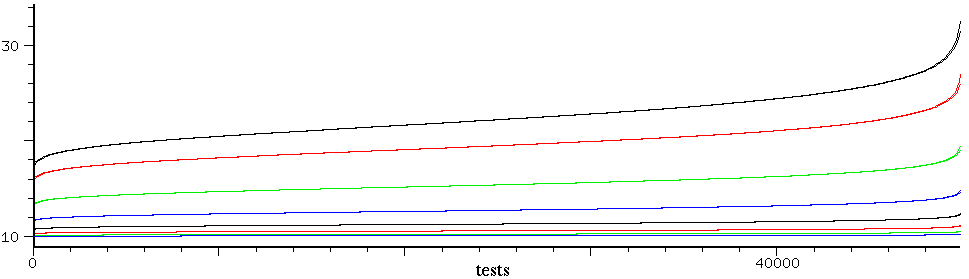What to do? There are a bunch of papers on this subject, but the best I found was: Horner and Beauchamp, "a genetic algorithm-based method for synthesis of low peak amplitude signals", J. Acoustic. Soc. Am Vol 99 No 1 Jan 96, online at ems.music.uiuc.edu/beaucham/papers/JASA.01.96.pdf, They report good results using the genetic algorithm, so it tried it. I started with 2000 randomly chosen initial points and a search radius of 1.0 (= pi). These are pretty good choices, but after a few months of searching, I reached a point of almost no returns. I tried variants of the basic algorithm and other search methods, but the results were not very good until I noticed that in the graphs of the peaks, the good values are more or less clustered together. So I tried centering the genetic search on the best phases I had found to that point, then repeating the search each time from the new best point, slowly reducing the search radius ("simulated annealing" is the jargon for this).
(define (iterated-peak choice n)
(let ((phases (make-vector n 0.0))
(cur-best n)
(cur-incr 1.0))
(do ((i 1 (+ i 1)))
((= i n))
(set! (phases i) (random 1.0)))
(do ()
((< cur-incr .001))
(let ((vals (fpsap (case choice ((:all) 0) ((:odd) 1) ((:even) 2) (else 3))
n phases 5000 cur-incr)))
(let ((pk (car vals))
(new-phases (cadr vals)))
(let ((down (- cur-best pk)))
(if (< down (/ cur-best 10))
(set! cur-incr (* 0.5 cur-incr))))
(if (< pk cur-best)
(begin
(set! cur-best pk)
(set! phases (float-vector->vector new-phases)))))))
(list cur-best phases)))
The "fpsap" function is the genetic algorithm mentioned earlier, written in C. Here is the GA code used to find the initial-phase polynomials mentioned above:
(define (piterate choice n) ; (piterate :all 4096)
(let* ((size 1000)
(pop (make-vector size))
(phases (make-vector n 0.0)))
;; initialize our set of choices
(do ((i 0 (+ i 1)))
((= i size))
(let ((f1 (random 1.0)) ; or (- 1.0 (random 2.0)) and also below
(f2 (random 1.0)))
(do ((k 0 (+ k 1)))
((= k n))
(set! (phases k) (modulo (/ (* k (+ (* f2 k) f1)) pi) 2.0)))
(set! (pop i) (list (get-peak choice n phases) f1 f2))))
;; now do the GA search with annealing
(do ((try 0 (+ try 1))
(increment .3 (* increment .98)))
((= try 1000))
(set! pop (sort! pop (lambda (a b) (< (car a) (car b)))))
(format () "~A ~D ~A ~A~%" choice n (pop 0) (log (car (pop 0)) n))
(do ((i 0 (+ i 1))
(j (/ size 2) (+ j 1)))
((= i (/ size 2)))
(let ((f1 (+ (list-ref (pop i) 1) (random increment)))
(f2 (+ (list-ref (pop i) 2) (random increment))))
(do ((k 0 (+ k 1)))
((= k n))
(set! (phases k) (modulo (/ (* k (+ (* f2 k) f1)) pi) 2.0)))
(set! (pop j) (list (get-peak choice n phases) f1 f2)))))))
Here are the results I have so far. In each set, the first number is the number of harmonics, then the minimum peak amplitude, then (log peak n).
=============================================================================================
all odd even prime
=============================================================================================
20 4.288 0.4860 | 11 3.177 0.4820 | 115 11.164 0.5085 | 24 5.642 0.5444
14 3.612 0.4867 | 9 2.886 0.4824 | 113 11.086 0.5089 | 19 4.999 0.5465
23 4.604 0.4870 | 17 3.926 0.4827 | 126 11.729 0.5091 | 18 4.855 0.5467
11 3.218 0.4874 | 10 3.053 0.4848 | 114 11.157 0.5093 | 25 5.811 0.5467
17 3.980 0.4876 | 19 4.172 0.4851 | 127 11.792 0.5094 | 28 6.191 0.5471
16 3.874 0.4884 | 14 3.598 0.4852 | 117 11.317 0.5095 | 93 11.942 0.5472
24 4.728 0.4888 | 13 3.475 0.4856 | 124 11.657 0.5095 | 23 5.562 0.5473
19 4.218 0.4889 | 18 4.070 0.4856 | 99 10.395 0.5095 | 22 5.434 0.5476
22 4.540 0.4894 | 21 4.399 0.4866 | 120 11.467 0.5096 | 17 4.719 0.5476
21 4.443 0.4898 | 16 3.857 0.4869 | 121 11.520 0.5096 | 95 12.115 0.5478
15 3.768 0.4899 | 20 4.300 0.4869 | 128 11.857 0.5097 | 40 7.543 0.5478
25 4.853 0.4907 | 15 3.738 0.4869 | 256 16.896 0.5098 | 77 10.803 0.5479
13 3.524 0.4911 | 12 3.362 0.4879 | 96 10.249 0.5099 | 30 6.452 0.5481
12 3.389 0.4911 | 22 4.519 0.4880 | 125 11.726 0.5099 | 39 7.452 0.5482
18 4.140 0.4915 | 28 5.089 0.4883 | 102 10.574 0.5099 | 102 12.631 0.5484
10 3.102 0.4917 | 23 4.634 0.4891 | 104 10.682 0.5100 | 86 11.518 0.5487
29 5.241 0.4920 | 25 4.834 0.4895 | 123 11.636 0.5100 | 47 8.268 0.5487
27 5.064 0.4922 | 31 5.419 0.4921 | 111 11.044 0.5100 | 63 9.713 0.5487
28 5.157 0.4923 | 24 4.783 0.4925 | 100 10.472 0.5100 | 51 8.653 0.5488
37 5.918 0.4924 | 33 5.597 0.4925 | 88 9.812 0.5100 | 94 12.115 0.5490
35 5.762 0.4926 | 29 5.257 0.4929 | 116 11.309 0.5103 | 87 11.613 0.5491
26 4.982 0.4929 | 30 5.353 0.4932 | 122 11.609 0.5104 | 109 13.144 0.5491
33 5.608 0.4931 | 27 5.085 0.4935 | 109 10.962 0.5104 | 20 5.183 0.5492
59 7.469 0.4931 | 8 2.791 0.4935 | 94 10.168 0.5105 | 21 5.324 0.5492
32 5.526 0.4932 | 26 4.997 0.4938 | 103 10.655 0.5105 | 74 10.650 0.5496
30 5.361 0.4937 | 37 5.959 0.4943 | 105 10.762 0.5105 | 89 11.788 0.5496
51 6.972 0.4939 | 35 5.801 0.4945 | 83 9.549 0.5106 | 29 6.365 0.5496
31 5.453 0.4939 | 7 2.618 0.4946 | 93 10.121 0.5107 | 96 12.293 0.5497
36 5.872 0.4940 | 32 5.554 0.4947 | 119 11.483 0.5107 | 101 12.654 0.5499
9 2.962 0.4941 | 34 5.726 0.4948 | 112 11.133 0.5107 | 114 13.530 0.5500
8 2.795 0.4942 | 52 7.080 0.4954 | 108 10.929 0.5108 | 38 7.396 0.5501
34 5.715 0.4943 | 50 6.947 0.4955 | 1024 34.487 0.5108 | 57 9.246 0.5501
70 8.177 0.4946 | 38 6.071 0.4958 | 106 10.831 0.5109 | 59 9.424 0.5502
39 6.124 0.4946 | 82 8.895 0.4960 | 97 10.354 0.5109 | 33 6.846 0.5502
93 9.413 0.4947 | 48 6.828 0.4962 | 101 10.578 0.5111 | 37 7.292 0.5502
41 6.278 0.4947 | 41 6.322 0.4966 | 85 9.691 0.5112 | 31 6.616 0.5502
82 8.850 0.4948 | 43 6.474 0.4966 | 84 9.634 0.5113 | 97 12.398 0.5503
81 8.797 0.4948 | 39 6.168 0.4966 | 95 10.275 0.5116 | 27 6.134 0.5503
60 7.589 0.4950 | 72 8.366 0.4967 | 82 9.531 0.5116 | 41 7.720 0.5504
38 6.056 0.4951 | 45 6.625 0.4967 | 118 11.484 0.5117 | 36 7.188 0.5504
69 8.140 0.4952 | 42 6.403 0.4968 | 110 11.084 0.5117 | 16 4.600 0.5504
49 6.872 0.4952 | 74 8.488 0.4969 | 91 10.063 0.5118 | 108 13.162 0.5505
73 8.372 0.4952 | 78 8.715 0.4970 | 86 9.779 0.5119 | 122 14.078 0.5505
58 7.471 0.4953 | 46 6.709 0.4972 | 107 10.937 0.5119 | 43 7.936 0.5507
48 6.804 0.4953 | 105 10.116 0.4972 | 92 10.124 0.5119 | 54 8.998 0.5508
103 9.936 0.4954 | 47 6.785 0.4973 | 90 10.013 0.5120 | 52 8.817 0.5509
64 7.850 0.4955 | 40 6.265 0.4974 | 71 8.877 0.5122 | 66 10.066 0.5512
56 7.349 0.4955 | 89 9.332 0.4976 | 79 9.381 0.5123 | 70 10.403 0.5513
42 6.374 0.4956 | 111 10.417 0.4976 | 75 9.137 0.5124 | 106 13.080 0.5513
63 7.793 0.4956 | 56 7.419 0.4979 | 98 10.481 0.5124 | 45 8.157 0.5514
83 8.935 0.4956 | 36 5.956 0.4979 | 78 9.336 0.5127 | 62 9.734 0.5514
40 6.224 0.4956 | 106 10.198 0.4980 | 87 9.875 0.5128 | 12 3.936 0.5514
85 9.050 0.4958 | 59 7.618 0.4980 | 512 24.510 0.5128 | 34 6.991 0.5515
67 8.044 0.4959 | 57 7.489 0.4980 | 77 9.278 0.5128 | 85 11.589 0.5515
76 8.567 0.4960 | 91 9.457 0.4981 | 89 9.998 0.5129 | 125 14.336 0.5515
92 9.420 0.4960 | 51 7.088 0.4981 | 81 9.529 0.5130 | 88 11.815 0.5515
75 8.512 0.4960 | 80 8.870 0.4981 | 70 8.849 0.5132 | 64 9.912 0.5515
55 7.300 0.4961 | 81 8.926 0.4981 | 61 8.247 0.5132 | 46 8.261 0.5515
53 7.168 0.4961 | 101 9.965 0.4982 | 72 8.986 0.5134 | 72 10.580 0.5516
105 10.064 0.4961 | 119 10.815 0.4982 | 80 9.493 0.5136 | 92 12.112 0.5516
52 7.102 0.4961 | 77 8.707 0.4982 | 73 9.061 0.5137 | 60 9.568 0.5516
104 10.017 0.4962 | 76 8.651 0.4982 | 74 9.134 0.5139 | 124 14.280 0.5516
50 6.966 0.4962 | 62 7.817 0.4982 | 63 8.414 0.5141 | 103 12.892 0.5516
65 7.935 0.4962 | 55 7.364 0.4982 | 68 8.755 0.5142 | 123 14.218 0.5516
71 8.291 0.4962 | 67 8.128 0.4983 | 57 7.998 0.5143 | 56 9.213 0.5517
47 6.757 0.4962 | 110 10.408 0.4984 | 76 9.274 0.5143 | 98 12.555 0.5518
45 6.613 0.4962 | 90 9.422 0.4985 | 64 8.501 0.5146 | 48 8.469 0.5519
100 9.828 0.4962 | 60 7.700 0.4985 | 67 8.715 0.5149 | 128 14.551 0.5519
74 8.468 0.4964 | 86 9.213 0.4985 | 58 8.103 0.5153 | 120 14.042 0.5519
44 6.544 0.4964 | 108 10.325 0.4986 | 2048 50.887 0.5154 | 116 13.783 0.5519
57 7.441 0.4964 | 44 6.599 0.4986 | 62 8.391 0.5154 | 110 13.386 0.5519
46 6.691 0.4965 | 88 9.324 0.4986 | 69 8.870 0.5155 | 32 6.772 0.5519
54 7.246 0.4965 | 64 7.957 0.4987 | 65 8.610 0.5157 | 84 11.537 0.5519
84 9.023 0.4965 | 83 9.061 0.4988 | 66 8.679 0.5158 | 42 7.870 0.5520
94 9.544 0.4965 | 68 8.204 0.4988 | 53 7.750 0.5158 | 76 10.919 0.5520
95 9.595 0.4966 | 71 8.384 0.4988 | 59 8.195 0.5159 | 104 12.987 0.5521
43 6.475 0.4966 | 102 10.046 0.4988 | 51 7.602 0.5159 | 61 9.674 0.5521
87 9.188 0.4966 | 85 9.173 0.4989 | 55 7.908 0.5160 | 105 13.058 0.5521
66 8.012 0.4967 | 114 10.621 0.4989 | 44 7.048 0.5160 | 53 8.953 0.5521
68 8.131 0.4967 | 61 7.775 0.4989 | 47 7.293 0.5160 | 75 10.845 0.5521
88 9.243 0.4967 | 125 11.122 0.4989 | 38 6.537 0.5161 | 115 13.732 0.5521
72 8.368 0.4967 | 70 8.328 0.4989 | 54 7.845 0.5164 | 71 10.523 0.5521
114 10.518 0.4968 | 75 8.621 0.4989 | 60 8.297 0.5168 | 81 11.319 0.5522
77 8.656 0.4969 | 98 9.853 0.4990 | 50 7.554 0.5169 | 100 12.717 0.5522
86 9.145 0.4969 | 63 7.904 0.4990 | 56 8.011 0.5169 | 73 10.689 0.5522
79 8.767 0.4969 | 107 10.296 0.4990 | 52 7.716 0.5171 | 107 13.202 0.5522
91 9.407 0.4969 | 103 10.102 0.4990 | 48 7.407 0.5173 | 50 8.676 0.5523
78 8.713 0.4969 | 118 10.812 0.4990 | 45 7.165 0.5173 | 80 11.248 0.5523
98 9.767 0.4971 | 115 10.674 0.4990 | 40 6.748 0.5176 | 113 13.613 0.5523
80 8.832 0.4971 | 58 7.586 0.4990 | 46 7.276 0.5184 | 55 9.146 0.5523
61 7.718 0.4971 | 128 11.261 0.4990 | 42 6.941 0.5184 | 49 8.583 0.5524
89 9.316 0.4972 | 53 7.253 0.4990 | 34 6.223 0.5184 | 111 13.484 0.5524
101 9.922 0.4972 | 94 9.654 0.4991 | 39 6.683 0.5185 | 91 12.084 0.5524
90 9.369 0.4972 | 69 8.275 0.4991 | 49 7.532 0.5188 | 121 14.145 0.5524
99 9.827 0.4973 | 92 9.553 0.4991 | 41 6.881 0.5194 | 79 11.178 0.5525
97 9.734 0.4974 | 120 10.909 0.4991 | 36 6.432 0.5194 | 69 10.373 0.5525
109 10.316 0.4974 | 113 10.586 0.4991 | 43 7.055 0.5195 | 119 14.019 0.5525
62 7.792 0.4975 | 96 9.759 0.4991 | 37 6.533 0.5198 | 117 13.889 0.5525
112 10.460 0.4975 | 66 8.095 0.4992 | 32 6.061 0.5199 | 118 13.956 0.5525
106 10.180 0.4976 | 73 8.515 0.4992 | 33 6.163 0.5201 | 112 13.561 0.5525
96 9.699 0.4978 | 84 9.133 0.4992 | 29 5.766 0.5203 | 127 14.536 0.5525
102 10.000 0.4979 | 116 10.733 0.4993 | 35 6.362 0.5205 | 78 11.104 0.5526
110 10.385 0.4979 | 100 9.968 0.4993 | 26 5.452 0.5206 | 68 10.294 0.5526
116 10.667 0.4980 | 54 7.328 0.4993 | 31 5.988 0.5212 | 58 9.429 0.5526
115 10.622 0.4980 | 95 9.717 0.4993 | 24 5.253 0.5220 | 15 4.466 0.5526
107 10.251 0.4981 | 121 10.965 0.4993 | 30 5.907 0.5222 | 65 10.042 0.5526
113 10.533 0.4981 | 122 11.011 0.4993 | 23 5.148 0.5226 | 99 12.671 0.5526
128 11.210 0.4981 | 117 10.783 0.4994 | 21 4.920 0.5233 | 83 11.495 0.5526
111 10.443 0.4981 | 65 8.041 0.4994 | 27 5.620 0.5238 | 126 14.478 0.5526
122 10.950 0.4982 | 104 10.169 0.4994 | 28 5.732 0.5240 | 90 12.023 0.5526
127 11.176 0.4983 | 79 8.865 0.4994 | 25 5.403 0.5241 | 44 8.096 0.5527
108 10.313 0.4984 | 109 10.414 0.4995 | 22 5.055 0.5242 | 26 6.057 0.5528
117 10.740 0.4985 | 49 6.986 0.4995 | 18 4.569 0.5257 | 82 11.463 0.5535
126 11.145 0.4985 | 99 9.928 0.4995 | 20 4.839 0.5264 | 35 7.164 0.5538
120 10.878 0.4985 | 97 9.832 0.4996 | 17 4.463 0.5280 | 67 10.270 0.5540
121 10.925 0.4986 | 93 9.629 0.4997 | 16 4.325 0.5282 | 11 3.778 0.5544
118 10.790 0.4986 | 124 11.120 0.4997 | 19 4.741 0.5286 | 9 3.382 0.5546
124 11.060 0.4986 | 87 9.317 0.4998 | 15 4.192 0.5292 | 14 4.324 0.5548
119 10.836 0.4986 | 126 11.217 0.4999 | 14 4.097 0.5344 | 13 4.154 0.5553
123 11.016 0.4986 | 123 11.088 0.4999 | 12 3.787 0.5359 | 10 3.602 0.5565
125 11.105 0.4986 | 127 11.268 0.5000 | 13 3.973 0.5378 | 5 2.477 0.5635
7 2.639 0.4988 | 112 10.582 0.5000 | 11 3.656 0.5406 | 4 2.192 0.5662
256 15.997 0.5000 | 3 1.739 0.5035 | 10 3.559 0.5513 | 8 3.263 0.5687
512 23.323 0.5049 | 256 16.306 0.5034 | 8 3.198 0.5590 | 256 23.955 0.5728
1024 33.172 0.5052 | 512 23.550 0.5064 | 9 3.454 0.5641 | 7 3.062 0.5750
2048 49.284 0.5112 | 1024 33.836 0.5080 | 7 3.047 0.5726 | 6 2.805 0.5757
4 2.039 0.5139 | 2048 48.452 0.5090 | 6 2.837 0.5820 | 512 38.603 0.5856
6 2.549 0.5223 | 4 2.045 0.5161 | 5 2.605 0.5948 | 2048 95.904 0.5985
5 2.343 0.5292 | 6 2.523 0.5164 | 3 2.021 0.6406 | 1024 65.349 0.6030
3 1.980 0.6217 | 5 2.307 0.5195 | 4 2.431 0.6406 | 3 1.980 0.6217
2 1.760 0.8156 | 2 1.539 0.6220 | 2 1.760 0.8157 | 2 1.760 0.8156
Here is a graph of the peaks (as of February, 2015), followed by a graph of the exponent vs n (n^y = peak amp).
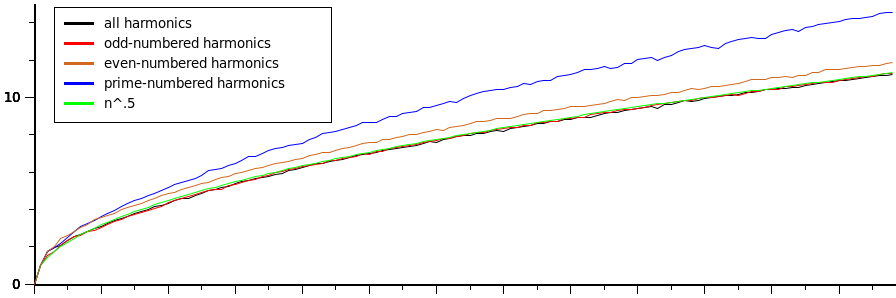 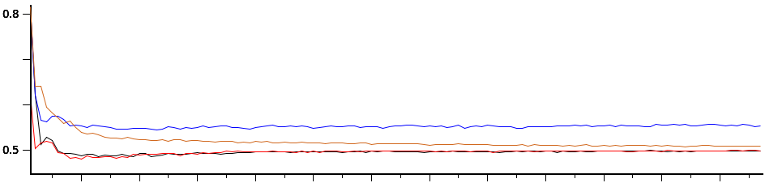The "even" cases are not independent of the "all" cases; each even-harmonics case can be at worst 1.0 above the corresponding (n-1) all-harmonics case (shift the current "all" choices right to multiply each by 2, then set the new fundamental phase to 0.0). If you then search around this set of phases, you'll find very good values. Using Snd's fpsap (a version of the genetic algorithm):
(let ((all (cadr (get-best :all (- n 1)))) ; get the best all-harmonic phases for n - 1
(new-phases (make-vector n 0.0))) ; place in new phase vector shifted up
(do ((k 0 (+ k 1)))
((= k (- n 1)))
(set! (new-phases (+ k 1)) (all k)))
(set! (new-phases 0) 0.0)
(fpsap 2 n new-phases)) ; search that vicinity for a good set (2 = even harmonics)
Here is the time domain view of one of the n=5 cases when the minimum peak phases are chosen; the sum of the 5 components is in black.
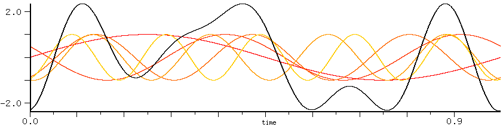The next graph compares the 100 harmonic minimum peak case in blue with the case where all the initial phases are 0.0 in black:
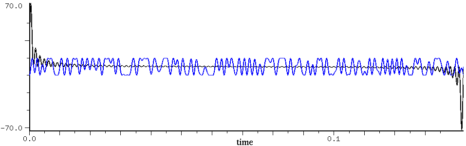And a few others:
| 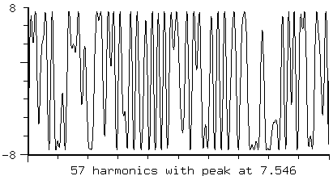 | 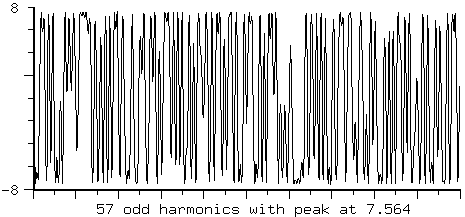 |
As N increases, the minimum peak amplitude waveform can approach white noise (in sound as well as appearance); here is a small portion of one period when n=65536 (the prescaling peak was 704):
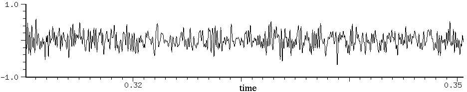but the waveforms generated from the initial-phase polynomials look more regular (this is with n=64):
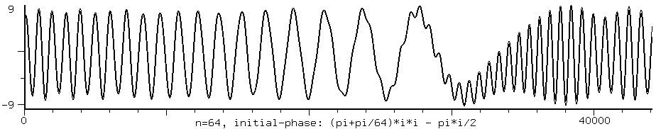This instrument is a translation of CLM's piano.ins, a piano physical model by Scott van Duyne; see Julius O. Smith and Scott A. Van Duyne, "Commuted piano synthesis," in Proc. Int. Computer Music Conf., Banff, Canada, September 1995, pp. 335 - 342. To paraphrase, the model includes multiple coupled strings, a nonlinear hammer, and an arbitrarily large soundboard and enclosure. The actual instrument name is 'p':
(with-sound ()
(do ((i 0 (+ i 1))) ((= i 7))
(p (* i .5) :duration .5 ; generate a sequence of 1/2 second tones
:keyNum (+ 24 (* 12 i)) ; jump by octaves
:strike-velocity .5 ; 0 to 1, 0 is softest played note, 1 is loud note
:amp .4 ; overall volume level
:DryPedalResonanceFactor .25))) ; 0 no open string resonance
; 1.0 is about full resonance of dampers raised
; can be greater than 1.0
"p" has lots of parameters, and I really don't know what they do. The interested reader should goof around with them.
p (start (duration 1.0) (keyNum 60.0) ; middleC=60: can use fractional part to detune (strike-velocity 0.5) ; corresponding normalized velocities (range: 0.0--1.0) (pedal-down #f) ; set to t for sustain pedal down...pedal-down-times not yet impl. (release-time-margin 0.75) ; extra compute time allowed beyond duration (amp .5) ; amp scale of noise inputs... (detuningFactor 1.0) (detuningFactor-table ()) (stiffnessFactor 1.0) (stiffnessFactor-table ()) (pedalPresenceFactor .3) (longitudinalMode 10.5) (StrikePositionInvFac -0.9) (singleStringDecayRateFactor 1.0) ;; parameter tables indexed by keyNum ;; you can override the loudPole-table by directly setting :loudPole to a value loudPole (loudPole-table default-loudPole-table) softPole (softPole-table default-softPole-table) loudGain (loudGain-table default-loudGain-table) softGain (softGain-table default-softGain-table) strikePosition (strikePosition-table default-strikePosition-table) detuning2 (detuning2-table default-detuning2-table) detuning3 (detuning3-table default-detuning3-table) stiffnessCoefficient (stiffnessCoefficient-table default-stiffnessCoefficient-table) singleStringDecayRate (singleStringDecayRate-table default-singleStringDecayRate-table) singleStringZero (singleStringZero-table default-singleStringZero-table) singleStringPole (singleStringPole-table default-singleStringPole-table) releaseLoopGain (releaseLoopGain-table default-releaseLoopGain-table) DryTapFiltCoeft60 (DryTapFiltCoeft60-table default-DryTapFiltCoeft60-table) DryTapFiltCoefTarget (DryTapFiltCoefTarget-table default-DryTapFiltCoefTarget-table) DryTapFiltCoefCurrent (DryTapFiltCoefCurrent-table default-DryTapFiltCoefCurrent-table) DryTapAmpt60 (DryTapAmpt60-table default-DryTapAmpt60-table) sustainPedalLevel (sustainPedalLevel-table default-sustainPedalLevel-table) pedalResonancePole (pedalResonancePole-table default-pedalResonancePole-table) pedalEnvelopet60 (pedalEnvelopet60-table default-pedalEnvelopet60-table) soundboardCutofft60 (soundboardCutofft60-table default-soundboardCutofft60-table) DryPedalResonanceFactor (DryPedalResonanceFactor-table default-DryPedalResonanceFactor-table) unaCordaGain (unaCordaGain-table default-unaCordaGain-table))
Here is another example; there are a couple other examples at the end of piano.scm:
(with-sound ()
(do ((i 0 (+ i 1))) ((= i 8))
(p (* i .5) :duration .5 :keyNum (+ 24 (* 12 i)) :strike-velocity .5 :amp .4 :DryPedalResonanceFactor .25
:detuningFactor-table '(24 5 36 7.0 48 7.5 60 12.0 72 20 84 30 96 100 108 300)
; scales the above detuning values so 1.0 is nominal detuning,
; 0.0 is exactly in tune, > 1.0 is out of tune
:stiffnessFactor-table '(21 1.5 24 1.5 36 1.5 48 1.5 60 1.4 72 1.3 84 1.2 96 1.0 108 1.0))))
; 0.0 to 1.0 is less stiff, 1.0 to 2.0 is more stiff
In Ruby:
include Piano
with_sound(:clm, false, :channels, 1) do
7.times do |i|
p(i * 0.5,
:duration, 0.5,
:keyNum, 24 + 12.0 * i,
:strike_velocity, 0.5,
:amp, 0.4,
:dryPedalResonanceFactor, 0.25)
end
end
This file has a variety of "real-time" audio output examples. It is almost entirely obsolete.
play-with-amps snd :rest amps
play-with-amps plays the sound 'snd' with each channel scaled by the corresponding amp: (play-with-amps 0 1.0 0.5) plays sound 0's channel 1 at full amplitude, and channel 2 at half amplitude.
play-often n play-until-c-g play-region-forever reg
play-often plays the selected sound 'n' times. play-until-c-g plays the selected sound until you interrupt it via C-g. Similarly, play-region-forever plays region 'reg' until you interrupt it with C-g.
(bind-key #\p 0
(lambda (n)
"play often"
(play-often (max 1 n))))
(bind-key #\r 0
(lambda (n)
"play region forever"
(play-region-forever n)))
Now C-u 31 p plays the current sound 31 times; C-u 3 r plays region 3 until we type C-g.
play-sine freq amp play-sines freqs-and-amps
play-sine plays a one-second sine wave at the given frequency and amplitude: (play-sine 440 .1). play-sines produces a spectrum given a list of lists of frequency and amplitude:
(play-sines '((425 .05) (450 .01) (470 .01) (546 .02) (667 .01) (789 .034) (910 .032)))
start-dac stop-dac
start-dac opens the DAC ready for sound output, and stop-dac closes it.
This file contains various functions related to the CLM polynomial function. A polynomial here is a vector (for complex coefficients) holding the polynomial coefficients from lowest to highest (i.e. the constant is (v 0), x+2 is (float-vector 2 1), etc).
poly+ p1 p2 ; new poly = p1 + p2 poly* p1 p2 ; new poly = p1 * p2 poly/ p1 p2 ; (list quotient-poly remainder-poly) = p1 / p2 poly-derivative p1 ; new poly = Dp1 poly-reduce p1 ; new poly = p1 without high zeros poly-gcd p1 p2 ; new poly = gcd(p1, p2) poly-roots p1 ; list of roots of p1 poly-resultant p1 p2 ; resultant of p1 and p2 poly-discriminant p1 ; discriminant of p1
poly+ adds two polynomials, and poly* multiplies two polynomials. poly/ divides two polynomials, with a few restrictions, and returns a list containing the quotient and remainder polynomials. poly-derivative returns the derivative of a polynomial. In all these cases, the resultant polynomials may have extra high-degree entries whose coefficients are zero. To remove these pointless coefficients, use poly-reduce. The last functions are just for fun.
You can treat a sound as a set of polynomial coefficients; then, for example, convolution the infinitely slow way is poly*:
(float-vector->channel (poly* (channel->float-vector 0 (framples)) (float-vector 2.0))) ; no, this is not serious
prc95.scm is a translation to Snd of Perry Cook's (1995) physical modelling toolkit; prc-toolkit95.lisp in CLM. One starting point for physical modelling is Smith, "Music Applications of Digital Waveguides", CCRMA, Stan-M-39, 1987, or Julius's home page, or any of several classic papers also by Julius Smith. Perry's own version of this code can be found in STK. The example instruments are:
plucky beg dur freq amplitude maxa ; plucked string bow beg dur frq amplitude maxa ; bowed string brass beg dur freq amplitude maxa clarinet beg dur freq amplitude maxa flute beg dur freq amplitude maxa (with-sound () (plucky 0 .3 440 .2 1.0) (bow .5 .3 220 .2 1.0) (brass 1 .3 440 .2 1.0) (clarinet 1.5 .3 440 .2 1.0) (flute 2 .3 440 .2 1.0))
This is the same as the CLM phase-vocoder generator, but implemented in Scheme. If you're interested in how the thing works, I think the Scheme version is easiest to understand; the Common Lisp version is in mus.lisp, and the C version is in clm.c.
make-pvocoder fftsize overlap interp analyze edit synthesize pvocoder gen input pvoc (fftsize 512) (overlap 4) (time 1.0) (pitch 1.0) (gate 0.0) (hoffset 0.0) (snd 0) (chn 0)
The 'analyze', 'edit', and 'synthesize' arguments to make-pvocoder are functions that are applied as needed during pvocoder processing; similarly, the 'input' argument to pvocoder can be a function.
(begin
(open-sound "oboe.snd")
(let ((pv (make-pvocoder 256 4 64))
(rd (make-sampler 0)))
(map-channel (lambda (y) (pvocoder pv rd)))))
pvoc.scm also contains a few examples of using the CLM phase-vocoder generator:
(define test-pv-4
(lambda (gate)
(let ((pv (make-phase-vocoder
(let ((reader (make-sampler 0)))
(lambda (dir)
(reader)))
512 4 128 1.0
#f ;no change to analysis
(lambda (v)
(do ((N (length v))
(i 0 (+ i 1)))
((= i N) #t)
(if (< ((phase-vocoder-amp-increments v) i) gate)
(set! ((phase-vocoder-amp-increments v) i) 0.0))))
#f))) ;no change to synthesis
(map-channel (lambda (val)
(phase-vocoder pv))))))
This sets up a phase-vocoder generator whose edit function is squelching soft partials. In this case, the input function is reading the currently selected channel.
pvoc is yet another (unoptimized) phase-vocoder; it applies the phase-vocoder to the current sound; 'pitch' specifies the pitch transposition ratio, 'time' specifies the time dilation ratio, 'gate' specifies a resynthesis gate in dB (partials with amplitudes lower than the gate value will not be synthesized), 'hoffset' is a pitch offset in Hz.
(pvoc :time 2.0)
rgb.scm (rgb.rb) is a translation of the standard X11 color names into Snd color objects.
(define snow (make-color 1.00 0.98 0.98))
is taken from the line
255 250 250 snow
/usr/lib/X11/rgb.txt. The choice of a float between 0.0 and 1.0 (rather than an integer between 0 and 255) mimics PostScript; as video hardware has improved over the years, there's less and less need for these elaborate color names, and less reason (except perhaps psychophysical) to limit these numbers to bytes. There is one gotcha in this file — X11 defines a color named "tan" which is already used by Scheme, so (at the suggestion of Dave Phillips) this color is named "tawny" in rgb.scm. rgb.scm exports only *rgb* which is an environment holding all the color names and values.
rubber-sound stretch-factor snd chn
rubber-sound tries to stretch or contract a sound (in time); it scans the sound looking for stable (periodic) sections, then either deletes periods or interpolates new ones to shorten or lengthen the sound. It still needs a lot of robustification. The algorithm is 1) remove all frequencies below 16 Hz, 2) resample the file to be ten times longer (interpolating samples), 3) make a list of upward zero crossings, 4) using autocorrelation decide where the next fundamental zero crossing probably is and see how much difference there is between the current period and the next, 5) check intermediate crossing weights and if the autocorrelation weight is not the smallest, throw away this crossing, 6) sort the remaining crossings by least weight, 7) interpolate or delete periods until the sound has been sufficiently lengthened or shortened. rubber-sound is incredibly slow, and almost never works. The idea seems good however...
s7test.scm is a regression test for s7. Any additional tests are most welcome!
filter-selection-and-smooth ramp-dur flt order
filter-selection-and-smooth filters the current selection with flt, then mixes it back into the original using ramp-dur to set how long the cross-fade ramps are.
(filter-selection-and-smooth .01 (float-vector .25 .5 .5 .5 .25))
make-selection beg end snd chn
make-selection makes a selection, like make-region but without creating a region. make-selection follows snd's sync field, and applies to all snd's channels if chn is not specified. end defaults to end of channel, beg defaults to 0, and snd defaults to the currently selected sound.
(make-selection 1000 2000)
replace-with-selection
replace-with-selection replaces any data at the cursor with the current selection.
selection-members
selection-members returns a list of lists of '(snd chn) indicating the channels participating in the current selection. It is the selection-oriented version of all-chans.
swap-selection-channels
swap-selection-channels swaps the current selection's channels.
with-temporary-selection thunk beg dur snd chn
with-temporary selection saves the current selection placement, makes a new selection of the data from sample 'beg' to beg + dur in the given channel, calls 'thunk', then restores the previous selection (if any). It returns whatever 'thunk' returned.
singer.scm is an implementation of Perry Cook's physical model of the vocal tract as described in:
Cook, Perry R. "Synthesis of the Singing Voice Using a Physically Parameterized Model of the Human Vocal Tract"
Published in the Proceedings of the International Computer Music Conference, Ohio 1989
and as Stanford University Department of Music Technical Report Stan-M-57, August 1989.
---- "Identification of Control Parameters in an Articulatory Vocal Tract Model, with Applications
to the Synthesis of Singing," Ph.D. Thesis, Stanford University Department of Music Technical Report
Stan-M-68, December 1990.
---- "SPASM, a Real-time Vocal Tract Physical Model Controller; and Singer, the Companion Software
Synthesis System", Computer Music Journal, vol 17 no 1 Spring 1993.
singer.scm is a translation of Perry's singer.c. I think that Perry's code assumes a sampling rate of 22050; you'll need to fix up lots of lengths in the code to run at 44100. The singer instrument looks deceptively simple:
singer beg amp data
but all the complexity is hidden in the 'data' parameter. 'data' is a list of lists; each imbedded list has the form: '(dur shape glot pitch glotamp noiseamps vibramt). The 'shape' and 'glot' entries are themselves lists; I think the 'glot' list describes the glottal pulse. I wish I could fully explain all these lists, but I translated this code a very long time ago, and can't remember any details. You'll have to read the code, or perhaps find something in Perry's publications. In any case, here's an example:
(with-sound ()
(singer 0 .1 (list (list .4 ehh.shp test.glt 523.0 .8 0.0 .01)
(list .6 oo.shp test.glt 523.0 .7 .1 .01))))
The *.shp and *.glt data is defined at the end of singer.scm. For example:
(define test.glt (list 10 .65 .65)) (define ee.shp (list 8 1.02 1.637 1.67 1.558 0.952 0.501 0.681 0.675 0.9 -0.4 1.0 0.0 0.0 0.0 0.0 0.0 0.0))
A more complex example is singer's attempt to say "requiem":
(with-sound ()
(singer 0 .1 (list (list .05 ehh.shp test.glt 523.0 0.8 0.0 .01)
(list .15 ehh.shp test.glt 523.0 0.8 0.0 .01)
(list .05 kkk.shp test.glt 523.0 0.0 0.0 .01)
(list .05 kkk.shp test.glt 523.0 0.0 0.0 .01)
(list .02 kk+.shp test.glt 523.0 0.0 1.0 .01)
(list .08 kk+.shp test.glt 523.0 0.0 0.2 .01)
(list .05 ooo.shp test.glt 523.0 0.8 0.0 .01)
(list .15 ooo.shp test.glt 523.0 0.8 0.0 .01)
(list .05 eee.shp test.glt 523.0 0.8 0.0 .01)
(list .15 eee.shp test.glt 523.0 0.8 0.0 .01)
(list .05 ehh.shp test.glt 523.0 0.8 0.0 .01)
(list .15 ehh.shp test.glt 523.0 0.8 0.0 .01)
(list .05 mmm.shp test.glt 523.0 0.8 0.0 .01)
(list .15 mmm.shp test.glt 523.0 0.8 0.0 .01)
(list .10 mmm.shp test.glt 523.0 0.0 0.0 .01))))
These files contain several procedures that were removed from or renamed in earlier versions of Snd (in Ruby, look in extensions.rb).
The snddiff function tries to detect how one sound differs from another.
snddiff snd0 chn0 snd1 chn1
This could use about a lifetime's work, but it does find some differences:
;; start with two identical sounds:
> (map short-file-name (sounds))
("oboe.snd" "oboe.snd")
> (snddiff 0 0 1 0)
no-difference
;; snddiff can find individual sample differences:
> (set! (sample 1000 0 0) 0.5)
0.5
> (snddiff 0 0 1 0)
(differences ((1000 0.5 0.0328369140625)))
;; and scaling changes (we reverted the previous change):
> (scale-channel 2.0)
2.0
> (snddiff 0 0 1 0)
(scale 2.0)
;; and some initial delays:
> (pad-channel 0 200 0 0)
0
> (snddiff 0 0 1 0)
(lag 200 no-difference 0.0 #f #f #f)
snd-gl.scm has examples of using OpenGL. To try out these functions, build Snd with GL: configure --with-gl. You can tell if your current Snd has OpenGL loaded by checking the *features* list for 'gl: (provided? 'gl).
complexify
complexify displays FFT data in the complex plane; each bin is rotated so that they all stack along the x axis, with a line drawn from the x axis to the current real/imaginary point (as (z, y)), so as you move (slowly) through a file, you'll see the phase info as well as the magnitude — the vectors whirl around in each slice of the complex plane. Use the View:Orientation dialog to change the viewing angle. To move one sample at a time through a sound, you could bind the arrow keys:
(bind-key "Left" 0 (lambda ()
(set! (left-sample) (max 0 (- (left-sample) 1)))
keyboard-no-action))
(bind-key "Right" 0 (lambda ()
(set! (left-sample) (min (framples) (+ 1 (left-sample))))
keyboard-no-action))
gl-dump-state
gl-dump-state displays much of the current GL graphics state.
gl-info
gl-info prints out information about the current GL system setup.
snd-motif.scm has a variety of user-interface extensions that rely on the Motif module (xm.c). Some of these have been translated to Gtk and xg.c — snd-gtk.scm. In Ruby, see snd-xm.rb.
add-amp-controls
add-amp-controls adds amplitude sliders to the control panel for multichannel sounds so that each channel gets its own amplitude control slider. To make this the default, add (add-amp-controls) to your initialization file. Here is a 4-channel control panel after adding the channel-specific amp controls.
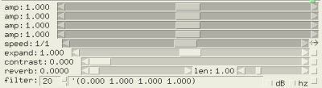add-delete-option
add-delete-option adds a "Delete" (file) option to the File menu.
add-find-to-listener
add-find-to-listener causes C-s and C-r in the listener to start a separate "Find" dialog.
add-mark-pane
add-mark-pane adds a pane to each channel giving the current mark locations (sample values). These can be edited to move the mark, or deleted to delete the mark. (If you add-mark-pane to a channel having marks, you need to make some change to them to force it to be displayed). Here's a picture (it also shows with-smpte-label, with-inset-graph, and show-disk-space).
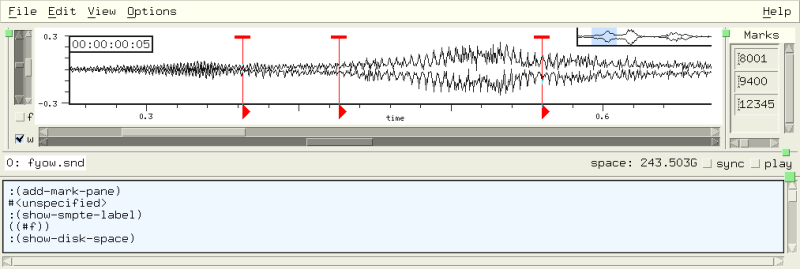add-rename-option
add-rename-option adds a "Rename" (file) option to the File menu.
add-text-to-status-area
add-text-to-status-area puts a text widget in the notebook's status area (the lower left portion of the main Snd window when using the -notebook invocation switch). It returns the widget; you can write to it via XmTextFieldSetString.
add-tooltip widget tip
add-tooltip adds a tooltip (also known as bubble-help) to a widget. Once added, set the variable with-tooltips to #f to turn it off.
(add-tooltip (cadr (channel-widgets)) "show the time domain waveform")
disable-control-panel snd
disable-control-panel does away with the control panel.
display-widget-tree widget
display-widget-tree displays the hierarchy of widgets beneath 'widget'.
equalize-panes snd
This equalizes multichannel sound panes (tries to make them the same size), It is specific to Motif since Gtk paned window widgets are too simple-minded to get into this predicament. If the 'snd' argument is given, only that sound's panes are affected.
for-each-child w func find-child w name
for-each-child applies 'func' to the widget 'w' and to each widget in the hierarchy of widgets below it. 'func' takes one argument, the child widget. for-each-child is used by find-child which searches for a widget named 'name' belonging to 'w'.
(for-each-child
((sound-widgets) 2) ; control panel
(lambda (w)
(snd-print (format #f "~%~A" (XtName w)))))
install-searcher-with-colors proc
install-searcher-with-colors places our own search procedure into the filter mechanism in the File:Open dialog. This has been superseded by the file-filter mechanism now built into Snd.
(install-searcher-with-colors (lambda (file) #t))
keep-file-dialog-open-upon-ok
keep-file-dialog-open-upon-ok changes File:Open so that clicking "ok" does not unmanage (dismiss) the dialog.
load-font font-name
load-font loads a font and returns a handle for it.
(define new-font (load-font "-*-helvetica-bold-r-*-*-14-*-*-*-*-*-*-*"))
(define* (show-greeting (snd 0) (chn 0))
;; show a red "hi!" in the helvetica bold font on a gray background
(let ((ls (left-sample snd chn))
(rs (right-sample snd chn)))
(if (and (< ls 1000)
(> rs 1000))
(let ((pos (x->position (/ 1000.0 (srate))))
(old-color (foreground-color))
(cr (make-cairo (car (channel-widgets snd chn))))) ; make-cairo needed in Gtk, returns #f otherwise
(set! (foreground-color) (make-color .75 .75 .75))
(fill-rectangle pos 10 50 20 snd chn time-graph #f cr)
(set! (foreground-color) (make-color 1 0 0))
(if new-font (set! (current-font) new-font))
(draw-string "hi!" (+ pos 5) 12 snd chn time-graph cr)
(set! (foreground-color) old-color)
(free-cairo cr)))))
make-channel-drop-site snd chn set-channel-drop drop snd chn
make-channel-drop-site shows how to add a drop site panel to a channel. set-channel-drop changes the channel's graph's drop function to 'drop', a function of 3 arguments, the dropped filename (a string) and the current sound and channel number.
make-pixmap widget strs
make-pixmap turns an XPM-style description into pixmap. Briefly an XPM pixmap description is an array of strings; the first gives the size in pixels of the pixmap, and the number of colors; the next set give characters followed by the color desired for that character; then comes the pixmap itself using those characters. The following defines a 16 X 12 arrow using 6 colors:
(define arrow-strs (list "16 12 6 1" " c None s None" ". c gray50" "X c black" "o c white" "O c yellow" "- c ivory2 s basiccolor" "--------X---------" "---------X--------" "----------X-------" "-----------X------" "------------X-----" "XXXXXXXXXXXXXX----" "------------X-----" "-----------X------" "----------X-------" "---------X--------" "--------X---------" "-------X----------"))
(make-pixmap (cadr (main-widgets)) arrow-strs) then creates the actual pixmap.
The 'widget' argument is needed to give us access to the current colormap and so on.
(cadr (main-widgets)) is just Snd's outer shell, which will do the trick in most cases.
See new-backgrounds.scm for many examples. The following example paints all of Snd's widgets using the
same background:
(for-each-child
(cadr (main-widgets))
(lambda (w)
(XtSetValues w (list XmNbackgroundPixmap wd))
(if (XmIsLabel w)
(let ((val (cadr (XtVaGetValues w (list XmNlabelType 0)))))
(if (= val XmPIXMAP)
(XtVaSetValues w (list XmNlabelPixmap wd)))))))
You can also use bitmaps:
(define right-arrow (list
#x00 #x04 #x10 #x08 #x00 #x10 #x04 #x20 #x00 #x40 #xa5 #xbf
#x00 #x40 #x04 #x20 #x00 #x10 #x10 #x08 #x00 #x04 #x00 #x00))
(define (bitmap->pixmap widget bits width height)
(XCreateBitmapFromData (XtDisplay widget) (XtWindow widget) bits width height))
make-variable-display page-name variable-name (type 'text) (range (list 0.0 1.0)) variable-display val widget
make-variable-display sets up a display point (a dialog) for an arbitrary expression which is updated via variable-display. The latter returns its argument, so it acts as a sort of probe, picking out any arbitrary point in an instrument and displaying it as the instrument is running. Display points can be organized as pages in a notebook widget:
(define wid (make-variable-display "do-loop" "i*2" 'text))
(define wid1 (make-variable-display "do-loop" "i" 'text))
(do ((i 0 (+ i 1)))
((= i 10))
(variable-display (* (variable-display i wid1) 2) wid))
The 'type' argument to make-variable-display can be one of 'text 'scale, 'graph, 'spectrum, or 'meter. It determines the kind of widget(s) used to display that variable. The 'graph and 'spectrum cases create Snd channel displays, accessible via a sound (and channel 0); these respond to the various channel-related functions such as show-transform-peaks, although you have to give the sound explicitly:
(define wid2 (make-variable-display "do-loop" "x" 'spectrum)) (set! (show-transform-peaks (car wid2)) #t)
Each graph or spectrum display is placed in its own pane (this is a desperate kludge), whereas all the others are ordered vertically in a single pane. The 'scale choice has an additional argument that gives the range of the scale as a list (low high):
(define wid2 (make-variable-display "do-loop" "i*2" 'scale '(-1.0 1.0)))
You can watch a generator's state on a sample-by-sample basis by putting it in a text display:
(define wid1 (make-variable-display "simp" "beg" 'text))
(define wid2 (make-variable-display "simp" "oscil" 'text))
(define wid3 (make-variable-display "simp" "outa" 'graph))
(definstrument (simp)
(let* ((beg 0)
(dur 1000)
(end (+ beg dur))
(osc (make-oscil 440.0)))
(do ((i beg (+ i 1)))
((= i end))
(variable-display i wid1)
(variable-display
(oscil (variable-display osc wid2) 0.0)
wid3))))
(simp)
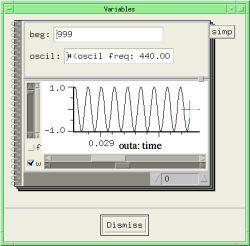
To clear display state, there's also variable-display-reset.
mark-sync-color new-color
mark-sync-color uses the draw-mark-hook to set the color of sync'd marks. (This is a no-op in Gtk+Cairo).
menu-option menu-name
menu-option returns the widget associated with a given menu item name ("Print" for example). This is actually a bad idea since the menu names can change without warning.
select-file func title dir filter help
select-file starts a file selection dialog, running 'func' if a file is selected:
(add-to-menu 0 "Insert File"
(lambda ()
(select-file
insert-sound
"Insert File" "." "*" "file will be inserted at cursor")))
show-all-atoms
show-all-atoms displays all current X atom names (there are several hundred of these atoms normally).
show-disk-space
show-disk-space adds a label in the status area which shows the current amount of disk space available on the partition of the associated sound. There's a picture of it in action above (add-mark-pane).
make-sound-box name parent select-func peak-func sounds args show-sounds-in-directory (dir ".")
make-sound-box makes a container of sound file icons, each icon containing a little sketch of the waveform, the length of the file, and the filename. What happens when an icon is selected is up to 'select-func'. However, if you drag (via button 2) the icon to the menubar, that sound is opened, and if you drag it to a channel graph, it is mixed at the mouse location in that channel. 'select-func' called when sound icon is selected; it is passed the sound file's name. 'peak-func' (if any) tells the soundbox code where to find any associated peak env files. 'sounds' is list of sound file names. 'args' is list of resource settings for each icon.
(make-sound-box "sounds"
((main-widgets) 3)
snd-print
*peak-env-dir*
(list "oboe.snd" "pistol.snd" "cardinal.snd" "storm.snd")
())
show-sounds-in-directory calls make-sound-box, filling it with any sounds found in the directory passed as its argument (which defaults to the current directory).
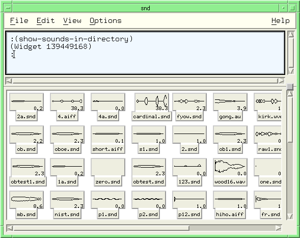snd-clock-icon snd hour
snd-clock-icon replaces Snd's hourglass with a (very primitive) clock.
upon-save-yourself thunk
upon-save-yourself causes 'thunk' (a function of no arguments) to be called if the window manager sends a SAVE_YOURSELF message.
upon-take-focus thunk
upon-take-focus causes 'thunk' (a function of no arguments) to be called whenever Snd receives focus from the window manager.
with-minmax-button
with-minmax-button adds an open/close button to each sound's pane. To activate it:
(hook-push after-open-hook with-minmax-button)
unzync zync
The pair zync and unzync cause the y-axis zoom sliders of a multichannel file to move together (zync) or separately (unzync, the default).
snd-test.scm and snd-test.rb are test suites for Snd. The simplest use is:
snd -l snd-test
which will run all the tests, assuming you have the various sound files it is expecting to find. You can run a particular test with:
snd -l snd-test 23
which runs test 23. snd-test is primarily useful to non-developers as a source of a huge number of examples.
This is a translation from CLM of Bret Battey's sndwarp instrument, itself based on Richard Karpen's sndwarp csound generator. It is similar to expsrc.
sndwarp beg dur file
(amp 1.0)
(amp-env '(0 1 100 1)) ; amplitude envelope
(stretch 1.0) ; time stretch — 2.0 -> twice as long
(srate 1.0) ; src — 0.5 -> octave down
(inputbeg 0.0) ; source file start point
(wsize 0.1) ; size of windows in seconds
(randw 0.02) ; randomness of wsize
(overlaps 15) ; window overlaps per sec
(time-ptr #f) ; #f=stretch mode, #t=time-ptr mode
(scale-time-ptr #f) ; #f=absolute, #t=rescale
(zero-start-time-ptr #f); #t=start at 0
(window-offset #f) ; #f=spread windows evenly
(loc 0.5) ; stereo loc, 0=left, 1=right
(rev 0.1) ; reverb amount
(srcwidth 5) ; src interpolation width
Many of the parameters can also be envelopes. The source has commentary which I'll slightly paraphrase here for convenience. 'time-ptr' is a flag that determines whether stretching or time-pointer mode is to be used in interpreting the 'stretch' parameter. In stretch mode, the value of 'stretch' scales the time of the sound. For example, a value of 2 will stretch the sound In time-ptr mode, the value(s) of 'stretch' are readin pointers into the soundfile. For example, to read through a file backwards from 2 seconds at half speed, use a stretch envelope such as '(0 2 1 0) with a 4 second note duration. 'scale-time-ptr' is a flag that determines whether the time-ptr envelope is interpreted in absolute seconds or rescaled to fit the duration of the input sound file. 'zero-start-time-ptr' is a flag that determines (in time-ptr mode) whether the first section of the windows start at time-ptr = 0. 'window-offset' is a flag that determines how the windows are offset in time.
(with-sound () (sndwarp 0 1 "oboe.snd")) (with-sound () (sndwarp 0 4 "oboe.snd" :stretch 2.0 :srate 0.5))
The spectr files were translated by Michael Scholz from CLM's spectr.clm. They contain a large set of instrument steady-state spectra, gathered many years ago (before 1976) by James A Moorer. The variable names are taken from the file names used by JAM, but by the time I got around to rescuing the data from mouldering magtapes, he had long since moved on, so I don't actually know what instrument some of the labels refer to. The data is in the form of a bunch of lists, each given a name:
(define trp-gs5 '( 1.02 .0114 2.02 .0346 3.02 .0045 4.04 .0013 5.06 .0002))
which (I think) refers to a trumpet playing the note gs5. The first number is the harmonic, the second its amplitude, the third the next harmonic, then its amplitude, and so on. These spectra can be used directly in the instrument spectra in clm-ins.scm. spectr.scm exports only *spectr* which is an environment that holds the spectral names and values.
stochastic is Bill Sack's implementation of Xenakis' Dynamic Stochastic Synthesis as heard in his GENDY3, S.709, Legende d'Eer, etc.
stochastic start dur
(amp .9) ; overall amplitude
(bits 16) ; resolution of the wave's amplitude dimension
(xmin 1) ; minimum number of samples between time breakpoints, must be >= 1
(xmax 20) ; maximum number of samples between time breakpoints
(xwig 0) ; amplitude applied to random walk function in time dimension
(xstep 1) ; quantization of freedom in time dimension, in samples, minimum: 1
(ywig 0) ; amplitude applied to random walk function in amplitude dimension, as %amp
(xfb 0) ; FIR filter
(init-array '((10 0) (10 1) (10 0) (10 -.7) (10 0) (10 .5)
(10 0) (10 -.3) (10 0) (10 .2) (10 0) (10 -.1)))
; initial x and y breakpoints for wave,
; x values must be integers >= 1, y values between -1.0 and 1.0
stochastic.ins in the CLM tarball has an elaborate Common Music-based example. Here is one that is much simpler, but very loud:
(with-sound () (stochastic 0 10 :xwig .25 :ywig 10.0))
strad.scm is a translation (by Michael Scholz) of CLM's strad.ins (by Juan Reyes). It implements a physical model of a bowed string with stiffness.
tankrev.scm has Anders Vinjar's implementation of Jon Dattorro's plate reverb.
The fm violin was my favorite instrument while working in the 70's and 80's, primarily on the Samson box. It was developed in Mus10 (ca 1977) based on ideas of John Chowning.
fm-violin startime dur frequency amplitude (fm-index 1.0) ; scales all indices (amp-env '(0 0 25 1 75 1 100 0)) ; amplitude envelope (periodic-vibrato-rate 5.0) (random-vibrato-rate 16.0) ; jitter added to vibrato (periodic-vibrato-amplitude 0.0025) (random-vibrato-amplitude 0.005) (noise-amount 0.0) ; noise added to modulation (noise-freq 1000.0) (ind-noise-freq 10.0) ; index envelope jitter (ind-noise-amount 0.0) (amp-noise-freq 20.0) ; amplitude envelope jitter (amp-noise-amount 0.0) (gliss-env '(0 0 100 0)) ; frequency envelope (glissando-amount 0.0) (fm1-env '(0 1 25 .4 75 .6 100 0)) ; 1:1 modulator amp (fm index) env (fm2-env '(0 1 25 .4 75 .6 100 0)) ; 3:1 mod env (fm3-env '(0 1 25 .4 75 .6 100 0)) ; 4:1 mod env (fm1-rat 1.0) ; 1:1 actual mod:carrier freq ratio (fm2-rat 3.0) ; 3:1 same (fm3-rat 4.0) ; 4:1 same (fm1-index #f) ; 1:1 mod local index scaler (fm2-index #f) ; 3:1 same (fm3-index #f) ; 4:1 same (degree 0) (distance 1.0) (reverb-amount 0.01) (base 1.0) ; amp env base (1.0 = line segments)
Most of these parameters are for special cases; normally you need only:
Scheme: (with-sound () (fm-violin 0 1 440 .1)) Ruby: with_sound() do fm_violin_rb(0, 1, 440, .1, [[:fm_index, 2.0]]) end
fm-violin sets up several parallel modulators of one carrier (see fm.html for details, or (ah nostalgia...) Schottstaedt, "The Simulation of Natural Instrument Tones Using Frequency Modulation with a Complex Modulating Wave", CMJ vol 1 no 4 1977 p46-50). The modulators themselves are modulated (vibrato, noise, etc). The FM indices were chosen to try to mimic violin or cello sounds over a wide range of frequencies. The various envelope "jitter" parameters set up slow moving random changes in the associated envelopes; in some case this can produce a much richer sound. There's no limit on what this instrument can do; nearly all my compositions in the 80's used it. To hear some of the effects, load fmviolin.clm (it is a CLM notelist, but it is completely compatible with Snd/Scheme).
fmv.scm (or v.rb in Ruby) implements the fm-violin as a CLM-style generator, making it possible to call the violin anywhere a generator could be called; since each call on the fm-violin function produces the next sample of the given violin, this form of the fm-violin is easy to call in "real-time" situations. Any other CLM-style instrument could be rewritten in the same form.
make-fm-violin
frequency amplitude (fm-index 1.0) (amp-env #f)
(periodic-vibrato-rate 5.0) (random-vibrato-rate 16.0)
(periodic-vibrato-amplitude 0.0025) (random-vibrato-amplitude 0.005)
(noise-amount 0.0) (noise-freq 1000.0)
(ind-noise-freq 10.0) (ind-noise-amount 0.0)
(amp-noise-freq 20.0) (amp-noise-amount 0.0) (gliss-env #f)
(fm1-env #f) (fm2-env #f) (fm3-env #f)
(fm1-rat 1.0) (fm2-rat 3.0) (fm3-rat 4.0)
(fm1-index #f) (fm2-index #f) (fm3-index #f) (base 1.0)
fm-violin gen
fm-violin-ins [same args as original violin in v.scm]
fm-violin-ins shows how this generator can be fitted into the original fm-violin code. The plethora of arguments is an historical artifact; normally only a few of them are used at a time. There are two examples of calling this generator in fmv.scm, the simpler one being:
(define test-v
(lambda (beg dur freq amp amp-env)
(let ((v (make-fm-violin
freq amp
:amp-env (let ((e (make-env (or amp-env '(0 0 1 1 2 0))
:scaler amp
:length dur)))
(lambda () (env e)))))
(data (channel->float-vector beg dur)))
(do ((i 0 (+ i 1)))
((= i dur))
(set! (data i) (+ (data i)
(v))))
(set-samples beg dur data))))
Here we are setting up an fm-violin generator (via make-fm-violin), then calling it 'dur' times, mixing its output into the current data (this could also use mix-float-vector and so on). The generator is called via (v). As can be seen here, each envelope is treated as a function called on each sample very much like the "as-needed" input in src or granulate; the envelopes could actually be any arbitrary function you like (see test-v1 in fmv.scm which uses an oscillator as one of the fm index envelopes). One complication in some "real-time" situations is that you don't know in advance how long a note will be; in this case, the envelope generating functions should have attack and decay ramps, triggered by note-on and note-off; once the ramp has reached its end point, the end value should be held; the note itself should be called until it has had time to ramp off.
I can't resist including an historical digression. Here is a Mus10 version of fm-violin (in this code ":=" is used in place of the original SAIL left arrow character, and so on):
ARRAY GlissFunc, DecayFunc, AttackFunc, SineWave, AmpFunc(512);
SYNTH(Sinewave); 1,1 999;
SEG(AmpFunc); 0,0 1,25 1,50 0,75 0,100;
SEG(GlissFunc);0,1 1,50, 0,100;
SEG(AttackFunc);0,0 1,100;
SEG(DecayFunc);1,1 .6,5 .3,10 .15,25 .07,50 0,100;
INSTRUMENT VN1;
VARIABLE Reset1,Noise,/NewMag,OtherFreq,/Gliss,Distance,Stereo,
Freq,Amp1,Amp2,Duration,AttackTime,DecayTime,Memory1,
Index1,Index2,Index3,scFreq,DecayLength,Switch1,Switch2,
/Mod1,/Mod2,/Mod3,/Env,/Att,/Vibrato,IMult,/Snd,
/Flutter,VibRate,VibAmp,/Ramp,/Decay,VibSwitch,LogFreq,
GlissLength,Bowing,DecayCall,VibCall,GlissCall,RampCall;
Memory1:=1;
I_ONLY BEGIN
Duration:=P2;
Freq:=P3;
Amp1:=P4;
Amp2:=P5;
OtherFreq:=P6;
IF Freq>=C THEN Freq:=Freq+Freq/100;
IF Freq<C THEN Freq:=Freq-20/Freq;
Switch1:=P14;
Switch2:=1-Switch1;
IMult:=P7-(Switch2/4);
VibSwitch:=P8;
Bowing:=P9;
Distance:=P10;
Stereo:=P11;
Noise:=P12;
GlissLength:=P13;
LogFreq:=ALOG(Freq);
DecayCall:=VibCall:=RampCall:=GlissCall:=20;
IF Amp1=Amp2 THEN RampCall:=SRATE;
IF Freq=OtherFreq THEN GlissCall:=SRATE;
IF VibSwitch=0 THEN VibCall:=SRATE;
IF Switch1=1 THEN DecayCall:=SRATE;
Vibrate:=5.25+RAND*.75;
VibAmp:=.006+RAND*.001;
IF Bowing=0
THEN
IF Memory1>.08
THEN
BEGIN
DecayTime:=.7;
AttackTime:=.2;
END
ELSE
BEGIN
DecayTime:=.7;
AttackTime:=.05;
Noise:=0;
END
ELSE
IF Memory1>.05
THEN
BEGIN
DecayTime:=.05;
AttackTime:=.2;
END
ELSE
BEGIN
DecayTime:=.05;
AttackTime:=.05;
Noise:=0;
END;
Memory1:=DecayTime;
IF AttackTime+DecayTime>=Duration
THEN
BEGIN
AttackTime:=Duration*AttackTime;
DecayTime:=DecayTime*Duration;
IF AttackTime<=.05 THEN AttackTime:=Duration-DecayTime-.01;
END;
ScFreq:=Freq*MAG;
DecayLength:=1000/Freq;
IF Switch1=0 THEN Noise:=.1;
Index1:=7.5*IMult/LogFreq;
Index2:=5/SQRT(Freq);
Index3:=IMult*30*(8.5-LogFreq)/Freq;
END;
Decay:=Switch1+EXPEN[DecayCall](Switch2,MAG*20/DecayLength,DecayFunc);
ENV:=Switch2+LINEN[20](Switch1,AttackTime/20,DecayTime/20,Duration/20,AmpFunc,Reset1:=0);
Ramp:=Amp1+NOSCIL[RampCall](Amp2-Amp1,20*MAG/Duration,AttackFunc);
Gliss:=Freq+EXPEN[GlissCall](OtherFreq-Freq,20*MAG/GlissLength,GlissFunc);
FLutter:=RANDI[VibCall](1,200*Mag);
Vibrato:=NOSCIL[VibCall](ENV,Vibrate*MAG*20,SineWave);
Att:=1-EXPEN[20](1,MAG*640,AttackFunc);
NewMag:=(1+Flutter*.005)*(1+Vibrato*VibAmp)*(1+RANDI(Noise*Att,2000*Mag))*Gliss*Mag;
Mod1:=NOSCIL(Decay*ScFreq*(Att+Index1),NewMag,Sinewave);
Mod2:=NOSCIL(Decay*ScFreq*(Att+Index2),4*NewMag,Sinewave);
Mod3:=NOSCIL(Decay*ScFreq*(Att+Index3),3*NewMag,Sinewave);
Snd:=ZOSCIL(Decay*ENV*Ramp,NewMag+Mod1+Mod2+Mod3,Sinewave);
OUTA:=OUTA+Snd*0.5;
END;
| then | now |
This instrument required about 60 seconds of computing on a PDP-10 (a $250,000 minicomputer) for 1 second of sound (our normal sampling rate was 12800). Since the PDP was massively time-shared, 60 seconds of computing could involve many minutes of sitting around watching AI scientists play Space War. Mus10 was an extension of Music V for the PDP-10 family of computers. To give a feel for how one worked in those days, here's a brief quote from the Mus10 manual (by Tovar and Leland Smith, May 1977):
The following generates 1 second of a 440 Hz sine wave followed by 1/2 sec. of a 660Hz sine wave. The output goes to a file, MUSIC.MSB, which is written on DSKM. COMMENT Fill array with sine wave; ARRAY SINETABLE[511]; FOR I:=0 STEP 1 UNTIL 511 DO SINETABLE[I]:=SIN(2*PI/512); INSTRUMENT SINE; COMMENT Generate simple sine wave. P4 = Amplitude, P3 = frequency; OUTA:=OUTA+OSCIL(P4,P3*MAG,SINETABLE); END; COMMENT Now, generate the sound; PLAY ; SIMP 0, 1, 440, 1000; SIMP 1, 1/2, 660, 1000; FINISH;
The computation involved was considered so burdensome, that the names of the main users were posted in the AI lab halls, apparently to try to get us to go away. I was normally the primary user (in terms of computrons) for the entire lab, and I had no intention of going away. In the Samson box world, this (in its initial "chorus" version) was:
Instrument(Violin); RECORD_POINTER(seg) nullfunc; INTEGER ARRAY gens[1:4],indgens[1:6], GensA[1:4],AmpGens[1:2]; ! synthesizer addresses; REAL ARRAY ratsA[1:4],Indrats[1:6],ratsB[1:4],AmpRats[1:2]; ! envelope data; INTEGER ModGens1Sum,i,FuncOffSet,k,GenOutLoc,GenInLoc,ModGens2Sum,x1,x2; Pars(<(InsName,Beg,Dur,Freq,Amp,Function AmpFunc,Function IndFunc,IndMult, SkewMult,Nothing,PcRev,No11,No12,No13,Function SkewFunc)>); ! the parameters of this instrument; Dbugit(Pns); ! debugging aid; GenOutLoc:=CASE (Pn[1] MOD 4) OF (Outma,Outmb,Outmc,Outmd); ! OUTMA is channel 1, OUTMB channel 2, etc; if freq>srate/3 then return; ! note too high, so leave it out; x1:=3; ! modulating frequency checks; x2:=4; ! (we want them less than srate/2); If x1*freq>srate/2 Then x1:=1; If x2*freq>srate/2 then x2:=1; amp:=Amp/2; ! two carriers, so halve the amplitude; waiter(Beg); ! wait for the beginning of the note; indRats[1]:=(x1*Freq*IndMult*((8.5-log(freq))/(3+(freq/1000)))*4/srate) MIN .999; indRats[2]:=(x2*Freq*IndMult*(1/(freq^.5))*4/srate) MIN .999; indRats[3]:=(freq*IndMult*(5/log(freq))*4/srate) MIN .999; indrats[4]:=indrats[1]; indrats[5]:=indrats[2]; indrats[6]:=indrats[3]; ratsA[1]:=x1; ratsA[2]:=x2; ratsA[3]:=1; ratsA[4]:=1; ratsB[1]:=x1+.002; ratsB[2]:=x2+.003; ratsB[3]:=1.002; ratsB[4]:=1; ! this is the skewing for the chorus effect; Gens[1]:=Osc(Pns,ModGens1Sum); ! now set up the oscillators; Gens[2]:=Osc(Pns,ModGens1Sum); Gens[3]:=Osc(Pns,ModGens1Sum); Gens[4]:=Osc(Pns,genInLoc,ModGens1Sum); ! carrier 1; GensA[1]:=Osc(Pns,ModGens2Sum); GensA[2]:=Osc(Pns,ModGens2Sum); GensA[3]:=Osc(Pns,ModGens2Sum); GensA[4]:=Osc(Pns,genInLoc,ModGens2Sum);! carrier 2; indgens[1]:=gens[1]; indgens[2]:=gens[2]; indgens[3]:=gens[3]; indgens[4]:=gensA[1]; indgens[5]:=gensA[2]; indgens[6]:=gensA[3]; ! set up envelope addressing; ModSig(Pns,GenOutLoc,GenInLoc,1-pcRev); ! send signal to DACs; ModSig(Pns,RevIn,GenInLoc,pcRev); ! and signal to reverberator; AmpGens[1]:=Gens[4]; AmpGens[2]:=GensA[4]; AmpRats[1]:=1; AmpRats[2]:=1; ! now add the envelopes; AddArrEnv(Pns,AmpGens,2,"A",0,Amp/2,AmpFunc,AmpRats); AddArrEnv(Pns,IndGens,6,"A",0,1,IndFunc,Indrats); AddArrEnv(Pns,Gens,4,"F",freq,Freq*skewmult,skewfunc,ratsA, 5,.011,.011,nullfunc,6,.017,.017,nullfunc,0,0); AddArrEnv(Pns,GensA,4,"F",freq,Freq*skewmult,skewfunc,ratsA, 6,.010,.010,nullfunc,5,.017,.017,nullfunc,1,0); End!Instrument(Pns); ! deallocation;
The Sambox version eventually became incredibly complicated, mainly to try to handle note list problems in the instrument. The Samson box could run about 5 or 6 of these in "real-time", similar to a modern-day 500 MHz Pentium running CLM. The parallel in the Sambox world to the SIMP example above is (this is taken from SAMBOX.BIL, November 1984):
Instrument(Simp);
Integer Gen1;
Gen1:=Osc(Pns,OutA,Zero,SineMode,0,0,Pn[3]);
AddEnv(Pns,Gen1,"A",0,Pn[4],Pf[5]);
End_Instrument(Pns);
The Common Lisp version of this is:
(definstrument simp (start-time duration frequency amplitude
&optional (amp-env '(0 0 50 1 100 0)))
(multiple-value-bind (beg end) (times->samples start-time duration)
(let ((s (make-oscil frequency))
(amp (make-env amp-env :scaler amplitude :duration duration)))
(run
(loop for i from beg below end do
(outa i (* (env amp) (oscil s))))))))
In Common Lisp, the fm-violin became (fm.html, 1989):
(definstrument violin (beg end frequency amplitude fm-index)
(let* ((frq-scl (hz->radians frequency))
(maxdev (* frq-scl fm-index))
(index1 (* maxdev (/ 5.0 (log frequency))))
(index2 (* maxdev 3.0 (/ (- 8.5 (log frequency)) (+ 3.0 (/ frequency 1000)))))
(index3 (* maxdev (/ 4.0 (sqrt frequency))))
(carrier (make-oscil frequency))
(fmosc1 (make-oscil frequency))
(fmosc2 (make-oscil (* 3 frequency)))
(fmosc3 (make-oscil (* 4 frequency)))
(ampf (make-env '(0 0 25 1 75 1 100 0) :scaler amplitude))
(indf1 (make-env '(0 1 25 .4 75 .6 100 0) :scaler index1))
(indf2 (make-env '(0 1 25 .4 75 .6 100 0) :scaler index2))
(indf3 (make-env '(0 1 25 .4 75 .6 100 0) :scaler index3))
(pervib (make-triangle-wave :frequency 5 :amplitude (* .0025 frq-scl)))
(ranvib (make-randi :frequency 16 :amplitude (* .005 frq-scl)))
(vib 0.0))
(run
(loop for i from beg to end do
(setf vib (+ (triangle-wave pervib) (randi ranvib)))
(outa i (* (env ampf)
(oscil carrier
(+ vib
(* (env indf1) (oscil fmosc1 vib))
(* (env indf2) (oscil fmosc2 (* 3.0 vib)))
(* (env indf3) (oscil fmosc3 (* 4.0 vib)))))))))))
or in its actual (non-simplified) form:
(defun bit20 (x) ;Samson box modifier got 20 bit int interpreted as fraction
(if (>= x (expt 2 19)) ;(keep fm-violin compatible with old note lists)
(float (/ (- x (expt 2 20)) (expt 2 19)))
(float (/ x (expt 2 19)))))
(defun make-frobber-function (beg end frobl)
(let ((result (list beg))
(val (bit20 (cadr frobl))))
(loop for x in frobl by #'cddr and
y in (cdr frobl) by #'cddr do
(when (and (>= x beg)
(<= x end))
(push val result)
(push x result)
(setf val (bit20 y))))
(push val result)
(push end result)
(push val result)
(nreverse result)))
(definstrument fm-violin
(startime dur frequency amplitude &key
(fm-index 1.0)
(amp-env '(0 0 25 1 75 1 100 0))
(periodic-vibrato-rate 5.0)
(random-vibrato-rate 16.0)
(periodic-vibrato-amplitude 0.0025)
(random-vibrato-amplitude 0.005)
(noise-amount 0.0) (noise-freq 1000.0)
(ind-noise-freq 10.0) (ind-noise-amount 0.0)
(amp-noise-freq 20.0) (amp-noise-amount 0.0)
(gliss-env '(0 0 100 0)) (glissando-amount 0.0)
(fm1-env '(0 1 25 .4 75 .6 100 0))
(fm2-env '(0 1 25 .4 75 .6 100 0))
(fm3-env '(0 1 25 .4 75 .6 100 0))
(fm1-rat 1.0) (fm2-rat 3.0) (fm3-rat 4.0)
(fm1-index nil) (fm2-index nil) (fm3-index nil)
(base nil) (frobber nil)
(reverb-amount 0.01)
(index-type :violin)
(degree nil) (distance 1.0) (degrees nil)
(no-waveshaping nil) (denoise nil)
(denoise-dur .1) (denoise-amp .005)
&allow-other-keys)
(if (> (abs amplitude) 1.0)
(setf amplitude (clm-cerror ".1?" .1 #'numberp "amplitude = ~A?" amplitude)))
(if (<= (abs frequency) 1.0)
(setf frequency (clm-cerror "440.0?" 440.0 #'numberp "frequency = ~A?" frequency)))
(let* ((beg (floor (* startime *srate*)))
(end (+ beg (floor (* dur *srate*))))
(frq-scl (hz->radians frequency))
(modulate (not (zerop fm-index)))
(maxdev (* frq-scl fm-index))
(vln (not (eq index-type :cello)))
(logfreq (log frequency))
(sqrtfreq (sqrt frequency))
(index1 (or fm1-index (min pi (* maxdev (/ (if vln 5.0 7.5) logfreq)))))
(index2 (or fm2-index (min pi (* maxdev 3.0 (if vln
(/ (- 8.5 logfreq) (+ 3.0 (* frequency .001)))
(/ 15.0 sqrtfreq))))))
(index3 (or fm3-index (min pi (* maxdev (/ (if vln 4.0 8.0) sqrtfreq)))))
(easy-case (and (not no-waveshaping)
(zerop noise-amount)
(eq fm1-env fm2-env)
(eq fm1-env fm3-env)
(zerop (- fm1-rat (floor fm1-rat)))
(zerop (- fm2-rat (floor fm2-rat)))
(zerop (- fm3-rat (floor fm3-rat)))
(zerop (nth-value 1 (floor fm2-rat fm1-rat)))
(zerop (nth-value 1 (floor fm3-rat fm1-rat)))))
(coeffs (and easy-case modulate
(partials->polynomial
(list fm1-rat index1
(floor fm2-rat fm1-rat) index2
(floor fm3-rat fm1-rat) index3))))
;; that is, we're doing the polynomial evaluation using fm1osc running at fm1-rat * frequency
;; so everything in the polynomial table should be in terms of harmonics of fm1-rat
(norm (or (and easy-case modulate 1.0) index1))
(carrier (make-oscil frequency))
(fmosc1 (and modulate (make-oscil (* fm1-rat frequency))))
(fmosc2 (and modulate (or easy-case (make-oscil (* fm2-rat frequency)))))
(fmosc3 (and modulate (or easy-case (make-oscil (* fm3-rat frequency)))))
(ampf (make-env
(if denoise
(reduce-amplitude-quantization-noise amp-env dur amplitude denoise-dur denoise-amp)
amp-env)
amplitude :base base :duration dur))
(indf1 (and modulate (make-env fm1-env norm :duration dur)))
(indf2 (and modulate (or easy-case (make-env fm2-env index2 :duration dur))))
(indf3 (and modulate (or easy-case (make-env fm3-env index3 :duration dur))))
(frqf (make-env gliss-env (* glissando-amount frq-scl) :duration dur))
(pervib (make-triangle-wave periodic-vibrato-rate (* periodic-vibrato-amplitude frq-scl)))
(ranvib (make-rand-interp random-vibrato-rate (* random-vibrato-amplitude frq-scl)))
(fm-noi (if (and (/= 0.0 noise-amount)
(null frobber))
(make-rand noise-freq (* pi noise-amount))))
(ind-noi (if (and (/= 0.0 ind-noise-amount) (/= 0.0 ind-noise-freq))
(make-rand-interp ind-noise-freq ind-noise-amount)))
(amp-noi (if (and (/= 0.0 amp-noise-amount) (/= 0.0 amp-noise-freq))
(make-rand-interp amp-noise-freq amp-noise-amount)))
(frb-env (if (and (/= 0.0 noise-amount) frobber)
(make-env (make-frobber-function startime (+ startime dur) frobber) :duration dur
:base 0 :scaler (* two-pi noise-amount))))
(vib 0.0)
(modulation 0.0)
(loc (make-locsig :degree (or degree degrees (random 90.0))
:reverb reverb-amount :distance distance))
(fuzz 0.0)
(ind-fuzz 1.0)
(amp-fuzz 1.0))
(run
(loop for i from beg to end do
(if (/= 0.0 noise-amount)
(if (null frobber)
(setf fuzz (rand fm-noi))
(setf fuzz (env frb-env))))
(setf vib (+ (env frqf) (triangle-wave pervib) (rand_interp ranvib)))
(if ind-noi (setf ind-fuzz (+ 1.0 (rand-interp ind-noi))))
(if amp-noi (setf amp-fuzz (+ 1.0 (rand-interp amp-noi))))
(if modulate
(if easy-case
(setf modulation
(* (env indf1)
(polynomial coeffs (oscil fmosc1 vib)))) ;(* vib fm1-rat)??
(setf modulation
(+ (* (env indf1) (oscil fmosc1 (+ (* fm1-rat vib) fuzz)))
(* (env indf2) (oscil fmosc2 (+ (* fm2-rat vib) fuzz)))
(* (env indf3) (oscil fmosc3 (+ (* fm3-rat vib) fuzz)))))))
(locsig loc i
(* (env ampf) amp-fuzz
(oscil carrier (+ vib (* ind-fuzz modulation)))))))))
which is very similar to the Scheme version (v.scm). And I just found this out on the net; I'm no csound expert, so I merely quote what I find:
;ORC
; edited by R. Pinkston, modified for use with MIDI2CS by R. Borrmann
;
;==========================================================================;
; Schottstaedt FM String Instrument from Dodge ;
; ;
;p4 = amp p5 = pch p6 = rise p7 = dec p8 = vibdel p9 = vibwth p10 = vibrte ;
;==========================================================================;
; sr = 44100
; kr = 4410
; ksmps = 10
; nchnls = 1
;
; instr 1
par
p_maxamplitude 32000
p_cps
endpar
iamp = p4
irise = .2 ;p6
idec = .2 ;p7
ivibdel = .75 ;p8
ivibwth = .03 ;p9
ivibrte = 5.5 ;p10
ifc = p5
ifm1 = ifc
ifm2 = ifc*3
ifm3 = ifc*4
indx1 = 7.5/log(ifc) ;range from ca 2 to 1
indx2 = 15/sqrt(ifc) ;range from ca 2.6 to .5
indx3 = 1.25/sqrt(ifc) ;range from ca .2 to .038
kvib init 0
timout 0,ivibdel,transient ;delays vibrato for p8 seconds
kvbctl linen 1,.5,p3-ivibdel,.1 ;vibrato control envelope
krnd randi .0075,15 ;random deviation in vib width
kvib oscili kvbctl*ivibwth+krnd,ivibrte*kvbctl,1 ;vibrato generator
transient:
timout .2,p3,continue ;execute for .2 secs only
ktrans linseg 1,.2,0,1,0 ;transient envelope
anoise randi ktrans,.2*ifc ;noise...
attack oscil anoise,2000,1 ;...centered around 2kHz
continue:
amod1 oscili ifm1*(indx1+ktrans),ifm1,1
amod2 oscili ifm2*(indx2+ktrans),ifm2,1
amod3 oscili ifm3*(indx3+ktrans),ifm3,1
asig oscili iamp,(ifc+amod1+amod2+amod3)*(1+kvib),1
asig linen asig+attack,irise,p3,idec
; out asig
;
; endin
aright = asig
aleft = asig
There's a C/CLM version of this instrument in sndlib.html. The body of the fm-violin in C/CLM is:
if (noise_amount != 0.0) fuzz = mus_rand(fmnoi,0.0);
if (frqf) vib = mus_env(frqf); else vib = 0.0;
vib += mus_triangle_wave(pervib, 0.0) +
mus_rand_interp(ranvib, 0.0);
if (easy_case)
modulation = mus_env(indf1) *
mus_polynomial(coeffs, mus_oscil(fmosc1, vib, 0.0), npartials);
else
modulation = mus_env(indf1) * mus_oscil(fmosc1, (fuzz + fm1_rat * vib), 0.0) +
mus_env(indf2) * mus_oscil(fmosc2, (fuzz + fm2_rat * vib), 0.0) +
mus_env(indf3) * mus_oscil(fmosc3, (fuzz + fm3_rat * vib), 0.0);
mus_locsig(loc, i, mus_env(ampf) *
mus_oscil(carrier, vib + indfuzz * modulation, 0.0));
And here is the Ruby version, written by Michael Scholz (see examp.rb):
#
# fm_violin([start=0.0[, dur=1.0[, freq=440.0[, amp=0.3[, *args]]]]])
#
def fm_violin(start = 0.0, dur = 1.0, freq = 440.0, amp = 0.3, *args)
include Math; # PI
usage = "fm_violin([start=0.0[, dur=1.0[, freq=440.0[, amp=0.3[, *args]]]]])
[:fm_index, 1.0]
[:amp_env, [0, 0, 25, 1, 75, 1, 100, 0]]
[:periodic_vibrato_rate, 5.0]
[:random_vibrato_rate, 16.0]
[:periodic_vibrato_amp, 0.0025]
[:random_vibrato_amp, 0.005]
[:noise_amount, 0.0]
[:noise_freq, 1000.0]
[:ind_noise_freq, 10.0]
[:ind_noise_amount, 0.0]
[:amp_noise_freq, 20.0]
[:amp_noise_amount, 0.0]
[:gliss_env, [0, 0, 100, 0]]
[:gliss_amount, 0.0]
[:fm1_env, [0, 1, 25, 0.4, 75, 0.6, 100, 0]]
[:fm2_env, [0, 1, 25, 0.4, 75, 0.6, 100, 0]]
[:fm3_env, [0, 1, 25, 0.4, 75, 0.6, 100, 0]]
[:fm1_rat, 1.0]
[:fm2_rat, 3.0]
[:fm3_rat, 4.0]
[:fm1_index, false]
[:fm2_index, false]
[:fm3_index, false]
[:base, 1.0]
[:reverb_amount, 0.01]
[:index_type, :violin]
[:degree, false]
[:distance, 1.0]
[:degrees, false]
Ruby: fm_violin(0, 1, 440, .1, [[:fm_index, 2.0]])
Scheme: (fm-violin 0 1 440 .1 :fm-index 2.0)\n\n";
fm_index = (args.assoc(:fm_index)[1] rescue 1.0);
amp_env = (args.assoc(:amp_env)[1] rescue [0, 0, 25, 1, 75, 1, 100, 0]);
periodic_vibrato_rate = (args.assoc(:periodic_vibrato_rate)[1] rescue 5.0);
random_vibrato_rate = (args.assoc(:random_vibrato_rate)[1] rescue 16.0);
periodic_vibrato_amp = (args.assoc(:periodic_vibrato_amp)[1] rescue 0.0025);
random_vibrato_amp = (args.assoc(:random_vibrato_amp)[1] rescue 0.005);
noise_amount = (args.assoc(:noise_amount)[1] rescue 0.0);
noise_freq = (args.assoc(:noise_freq)[1] rescue 1000.0);
ind_noise_freq = (args.assoc(:ind_noise_freq)[1] rescue 10.0);
ind_noise_amount = (args.assoc(:ind_noise_amount)[1] rescue 0.0);
amp_noise_freq = (args.assoc(:amp_noise_freq)[1] rescue 20.0);
amp_noise_amount = (args.assoc(:amp_noise_amount)[1] rescue 0.0);
gliss_env = (args.assoc(:gliss_env)[1] rescue [0, 0, 100, 0]);
gliss_amount = (args.assoc(:gliss_amount)[1] rescue 0.0);
fm1_env = (args.assoc(:fm1_env)[1] rescue [0, 1, 25, 0.4, 75, 0.6, 100, 0]);
fm2_env = (args.assoc(:fm2_env)[1] rescue [0, 1, 25, 0.4, 75, 0.6, 100, 0]);
fm3_env = (args.assoc(:fm3_env)[1] rescue [0, 1, 25, 0.4, 75, 0.6, 100, 0]);
fm1_rat = (args.assoc(:fm1_rat)[1] rescue 1.0);
fm2_rat = (args.assoc(:fm2_rat)[1] rescue 3.0);
fm3_rat = (args.assoc(:fm3_rat)[1] rescue 4.0);
fm1_index = (args.assoc(:fm1_index)[1] rescue false);
fm2_index = (args.assoc(:fm2_index)[1] rescue false);
fm3_index = (args.assoc(:fm3_index)[1] rescue false);
base = (args.assoc(:base)[1] rescue 1.0);
reverb_amount = (args.assoc(:reverb_amount)[1] rescue 0.01);
index_type = (args.assoc(:index_type)[1] rescue :violin);
degree = (args.assoc(:degree)[1] rescue false);
distance = (args.assoc(:distance)[1] rescue 1.0);
degrees = (args.assoc(:degrees)[1] rescue false);
srate = (srate() rescue $rbm_srate);
chans = (channels() rescue $rbm_channels);
beg = (srate * start).round;
len = (srate * dur).round;
frq_scl = hz2radians(freq);
modulate = fm_index.nonzero?;
maxdev = frq_scl * fm_index;
vln = (not (index_type == :cello))
logfreq = log(freq);
sqrtfreq = sqrt(freq);
index1 = (fm1_index or [PI, maxdev * (vln ? 5.0 : 7.5) / logfreq].min);
index2 = (fm2_index or [PI, maxdev * 3.0 *
(vln ? ((8.5 - logfreq) / (3.0 + freq * 0.001)) : (15.0 / sqrtfreq))].min);
index3 = (fm3_index or [PI, maxdev * (vln ? 4.0 : 8.0) / sqrtfreq].min);
easy_case = (noise_amount.zero? and
(fm1_env == fm2_env) and
(fm1_env == fm3_env) and
(fm1_rat - fm1_rat.floor).zero? and
(fm2_rat - fm2_rat.floor).zero? and
(fm3_rat - fm3_rat.floor).zero?);
coeffs = (easy_case and modulate and
partials2polynomial([fm1_rat, index1,
(fm2_rat / fm1_rat).floor, index2,
(fm3_rat / fm1_rat).floor, index3]));
norm = ((easy_case and modulate and 1.0) or index1);
carrier = make_oscil(freq);
fmosc1 = (modulate and make_oscil(fm1_rat * freq));
fmosc2 = (modulate and (easy_case or make_oscil(fm2_rat * freq)));
fmosc3 = (modulate and (easy_case or make_oscil(fm3_rat * freq)));
ampf = make_env(amp_env, amp, dur, 0.0, base);
indf1 = (modulate and make_env(fm1_env, norm, dur));
indf2 = (modulate and (easy_case or make_env(fm2_env, index2, dur)));
indf3 = (modulate and (easy_case or make_env(fm3_env, index3, dur)));
frqf = make_env(gliss_env, gliss_amount * frq_scl, dur);
pervib = make_triangle_wave(periodic_vibrato_rate, periodic_vibrato_amp * frq_scl);
ranvib = make_rand_interp(random_vibrato_rate, random_vibrato_amp * frq_scl);
fm_noi = (noise_amount.nonzero? and make_rand(noise_freq, PI * noise_amount));
ind_noi = ((ind_noise_amount.nonzero? and ind_noise_freq.nonzero?) and
make_rand_interp(ind_noise_freq, ind_noise_amount));
amp_noi = ((amp_noise_amount.nonzero? and amp_noise_freq.nonzero?) and
make_rand_interp(amp_noise_freq, amp_noise_amount));
vib = 0.0;
modulation = 0.0;
# make_locsig(degree=0.0, distance=1.0, reverb=0.0, output, revout, chans=1, type=Mus_linear)
# Ruby's rand() is shadowed by CLM's rand(), that's why mus_random().abs.
loc = make_locsig((degree or degrees or mus_random(90.0).abs),
distance, reverb_amount, false, false, chans);
fuzz = 0.0;
ind_fuzz = 1.0;
amp_fuzz = 1.0;
out_data = make_vct(len);
vct_map!(out_data,
lambda { | |
fuzz = rand(fm_noi) if noise_amount.nonzero?;
vib = env(frqf) + triangle_wave(pervib) + rand_interp(ranvib);
ind_fuzz = 1.0 + rand_interp(ind_noi) if ind_noi;
amp_fuzz = 1.0 + rand_interp(amp_noi) if amp_noi;
if(modulate)
if(easy_case)
modulation = env(indf1) * polynomial(coeffs, oscil(fmosc1, vib));
else
modulation = env(indf1) * oscil(fmosc1, fm1_rat * vib + fuzz) +
env(indf2) * oscil(fmosc2, fm2_rat * vib + fuzz) +
env(indf3) * oscil(fmosc3, fm3_rat * vib + fuzz);
end
end
env(ampf) * amp_fuzz * oscil(carrier, vib + ind_fuzz * modulation);
});
if(chans == 2)
mix_vct(vct_scale!(vct_copy(out_data), locsig_ref(loc, 1)), beg, $rbm_snd, 1, false);
mix_vct(vct_scale!(out_data, locsig_ref(loc, 0)), beg, $rbm_snd, 0, false);
else
mix_vct(out_data, beg, $rbm_snd, 0, false);
end
rescue
die(usage + "fm_violin()");
end
with-sound provides a way to package up a bunch of instrument calls into a new sound file, and open that file in Snd when the computation is complete. To hear (and see) the fm-violin, for example, we first load with-sound and the instrument:
;; Scheme: (load "ws.scm") (load "v.scm") |
# Ruby:
load("ws.rb")
load("v.rb")
|
\ Forth: "clm.fs" file-eval "clm-ins.fs" file-eval |
Then call with-sound, accepting the default sound file settings, with one fm-violin note at A4 (440 Hz):
(with-sound () (fm-violin 0 1 440 .1)) |
with_sound() do fm_violin_rb(0, 1, 440, 0.1) end |
0 1 440 0.1 ' fm-violin with-sound |
The body of with-sound can hold any number of notes, or any arbitrary code. For example, say we want to hear an arpeggio from the fm-violin:
(with-sound ()
(do ((i 0 (+ i 1)))
((= i 4)) ; 4 notes in all
(fm-violin (* i 0.25) ; notes 1/4 secs apart
0.25 ; each note 1/4 sec long
(* 220.0 (+ i 1)); go up by 220 Hz on each note
.1))) ; all notes .1 amp
with-sound opens an output object, either a sound file, or a vector: (*output*), and optionally a reverb output object: *reverb*. Each instrument uses out-any to add its sounds to the *output* results. with-sound next sets up a variety of variables describing the current output, and establishes an environment where various problems can be handled nicely (in Scheme, a dynamic-wind with various debugging hooks). Then the with-sound body is evaluated, presumably producing sound. Once evaluated, the outputs are closed, and if reverb is requested, the reverberator is run. Once complete, with-sound prints out statistics (if :statistics is #t), scales the result (if :scale-to), and plays it (if :play is #t). Then, if the output is a sound file (and :to-snd is #t), with-sound opens it in Snd, first closing any previous sound with the same name (this makes it easier to call with-sound over and over while trying out some patch). with-sound returns its :output argument.
with-sound
(output *clm-file-name*) ; output file name ("test.snd")
(channels *clm-channels*) ; channels in output (1)
(srate *clm-srate*) ; output sampling rate (44100)
(sample-type *clm-sample-type*) ; output sample data type (mus-bfloat or mus-lshort)
(header-type *clm-header-type*) ; output header type (mus-next or mus-aifc)
(comment #f) ; any comment to store in the header (a string)
(verbose *clm-verbose*) ; if #t, print out some info
(reverb *clm-reverb*) ; reverb instrument (jc-reverb)
(reverb-data *clm-reverb-data*) ; arguments passed to the reverb
(reverb-channels *clm-reverb-channels*); chans in the reverb intermediate file
(revfile *clm-reverb-file-name*) ; reverb intermediate output file name ("test.rev")
(continue-old-file #f) ; if #t, continue a previous computation
(statistics *clm-statistics*) ; if #t, print info at end of with-sound (compile time, maxamps)
(scaled-by #f) ; is a number, scale output by that amp
(scaled-to #f) ; if a number, scale the output to peak at that amp
(play *clm-play*) ; if #t, play the sound automatically
(to-snd *to-snd*) ; if #t, open the output file in Snd
The with-sound syntax may look sightly odd; we include the arguments in the first list, then everything after that is evaluated as a note list.
(with-sound (:srate 44100 :channels 2 :output "test.snd") (fm-violin 0 1 440 .1) (fm-violin 1 1 660 .1))
produces a sound file with two fm-violin notes; the sound file is named "test.snd", is stero, and has a sampling rate of 44100.
(with-sound (:reverb jc-reverb :statistics #t :play #t) (fm-violin 0 1 440 .1 :reverb-amount .3))
produces one fm-violin note, heavily reverberated, and plays it, printing this info:
> (with-sound (:reverb jc-reverb :statistics #t :play #t)
(fm-violin 0 1 440 .1 :reverb-amount .3))
test.snd:
maxamp: 0.3038
rev max: 0.0300
compute time: 0.030
It's often hard to predict how loud a set of notes is going to be, so we can use "scaled-to" to set its final amplitude:
(with-sound (:scale-to .5) (do ((i 0 (+ i 1))) ((= i 10)) (fm-violin 0 i 440.0 (random 1.0))))
Here are examples in Ruby and Forth:
:with_sound(:channels, 2, :play, false, :statistics, true) do fm_violin_rb(0, 1, 440, 0.1); fm_violin_rb(1, 1, 660, 0.1); end # filename: "test.snd" # chans: 2, srate: 22050 # length: 2.000 (44100 framples) # format: big endian short (16 bits) [Sun/Next] # real: 2.248 (utime 2.240, stime 0.000) # ratio: 1.12 (uratio 1.12) # max out: [0.098, 0.024] #<With_Snd: output: "test.snd", channels: 2, srate: 22050>
and in Forth:
snd> 0.0 1.0 330.0 0.5 ' simp :play #f :channels 2 with-sound \ filename: test.snd \ chans: 2, srate: 22050 \ format: little endian float (32 bits) [Sun/Next] \ length: 1.000 (22050 framples) \ real: 0.162 (utime 0.267, stime 0.000) \ ratio: 0.16 (uratio 0.27) \ maxamp A: 0.500 (near 0.680 secs) \ maxamp B: 0.000 (near 0.000 secs) \ comment: Written on Fri Jul 14 07:41:47 PDT 2006 by bil at cat using clm (fth) of 30-Jun-06
The default values listed above (*clm-srate* and friends) are set in ws.scm:
(define *clm-file-name* "test.snd") (define *clm-srate* *default-output-srate*) ; 44100 (define *clm-channels* *default-output-chans*) ; 1 (define *clm-sample-type* *default-output-sample-type*) ; mus-lfloat (define *clm-header-type* *default-output-header-type*) ; mus-next (define *clm-verbose* #f) (define *clm-play* #f) (define *clm-statistics* #f) (define *clm-reverb* #f) (define *clm-reverb-channels* 1) (define *clm-reverb-data* ()) (define *clm-reverb-file-name* "test.rev") (define *clm-table-size* 512) (define *clm-file-buffer-size* 65536) (define *clm-locsig-type* mus-interp-linear) (define *clm-clipped* #t) (define *clm-array-print-length* *print-length*) ; 12 (define *clm-player* #f) (define *clm-notehook* #f) (define *to-snd* #t) (define *reverb* #f) (define *output* #f) (define *clm-delete-reverb* #f)
You can set any of these to permanently change with-sound's defaults
> (set! *clm-file-name* "test.aif") #<unspecified> > (set! *clm-srate* 44100) #<unspecified> > (set! *clm-channels* 2) #<unspecified> > (set! *clm-header-type* mus-aifc) #<unspecified> > (set! *clm-sample-type* mus-bfloat) #<unspecified> > (with-sound () (fm-violin 0 1 440 .1))test.aif: "test.aif" > (srate "test.aif") 44100 > (channels "test.aif") 2
To display the entire sound automatically (independent of after-open-hook), use with-full-sound:
(define-macro (with-full-sound args . body)
`(let ((snd (with-sound-helper (lambda () ,@body) ,@args)))
(set! (x-bounds *snd-opened-sound*) (list 0.0 (/ (framples *snd-opened-sound*) (srate *snd-opened-sound*))))
snd))
Since with-sound returns the new sound's file name, we save that, get the new sound's index (*snd-opened-sound*), and set the x-bounds to display the full sound, then return the file name. You could obviously customize this any way you like. To continue adding notes to an existing file, set 'continue-old-file':
(with-sound (:continue-old-file #t) (fm-violin 0 1 440 .1))
The "notehook" argument is a function called each time an instrument is called:
> (with-sound (:notehook (lambda (name . args)
(snd-print (format #f "~%;~A: ~A" name (caddr args)))))
(fm-violin 0 1 440 .1)
(fm-violin 1 1 660 .1))
;fm-violin: 440
;fm-violin: 660
"test.snd"
The arguments passed to the notehook function are the current instrument name (a string) and all its arguments. definstrument implements the notehook feature. The "output" argument can be a vector as well as a filename:
(with-sound (:output (make-float-vector 44100)) (fm-violin 0 1 440 .1))
See fade.scm, snd-test.scm.
definstrument is very much like define*, but with added code to support notehook and (for Common Music) *definstrument-hook*. It uses old CL-style documentation strings. An instrument that wants to cooperate fully with with-sound and Common Music has the form:
(definstrument (ins args)
(let ...
(do ((i start (+ i 1)))
((= i end))
(outa i ...))))
definstrument is an extension of define*, so its arguments are handled as optional keyword arguments:
(definstrument (simp beg dur (frequency 440.0) (amplitude 0.1))
(let ((os (make-oscil frequency)))
(do ((i 0 (+ i 1))) ((= i dur))
(outa (+ i beg) (* amplitude (oscil os))))))
(with-sound ()
(simp 0 10000)
(simp 10000 10000 550.0 :amplitude 0.1)
(simp 20000 10000 :amplitude 0.2))
You don't have to use definstrument; in the next example we make a Shepard tone by calling the oscils and whatnot directly in the with-sound body:
(define (shepard-tone)
(let ((x 0.0)
(incr .000001) ; sets speed of glissandoes
(oscs (make-vector 12)))
(do ((i 0 (+ i 1)))
((= i 12))
(set! (oscs i) (make-oscil :frequency 0.0)))
(with-sound (:srate 44100)
(do ((samp 0 (+ 1 samp))
(sum 0.0 0.0))
((= samp 300000))
(do ((i 0 (+ i 1)))
((= i 12))
(let ((loc (+ x (/ i 12.0)))) ; location of current oscil in overall trajectory
(if (> loc 1.0) (set! loc (- loc 1.0)))
(set! sum (+ sum (* (let ((y (- 4.0 (* 8.0 loc))))
(exp (* -0.5 y y))) ; Gaussian normal curve as amplitude envelope
(oscil (oscs i)
(hz->radians (expt 2.0 (+ 2 (* loc 12.0))))))))))
;; (- 1.0 loc) to go down
(set! x (+ x incr))
(outa samp (* .1 sum))))))
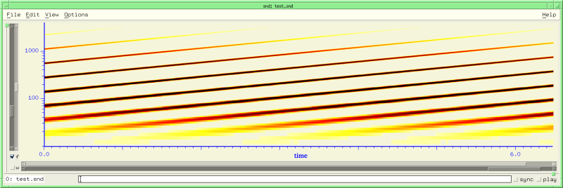
There are several other versions of with-sound: with-temp-sound, with-mixed-sound, sound-let, clm-load, and the Common Music handles, init-with-sound and finish-with-sound. with-temp-sound and sound-let set up temporary bindings for embedded with-sounds.
sound-let is a form of let* that creates temporary sound files within with-sound. Its syntax is a combination of let* and with-sound: with-sound:
(sound-let ((temp-1 () (fm-violin 0 1 440 .1))
(temp-2 () (fm-violin 0 2 660 .1)
(fm-violin .125 .5 880 .1)))
(granulate-sound temp-1 0 2 0 2) ;temp-1's value is the name of the temporary file
(granulate-sound temp-2 1 1 0 2))
This creates two temporary files and passes them along to the subsequent calls on granulate-sound. The first list after the sound file identifier (i.e. after "temp-1" in the example) is the list of with-sound options to be passed along when creating this temporary file. These default to :output with a unique name generated internally, and all other variables are taken from the overall (enclosing) with-sound. The rest of the list is the body of the associated with-sound. The difference between sound-let and an embedded with-sound is primarily that sound-let names and later deletes the temporary files it creates, whereas with-sound leaves its explicitly named output intact (and tries to open it in Snd, which can be confusing in this context). Here's another example:
(with-sound ()
(sound-let ((temp-sound () (fm-violin 0 1 440 .1))) ; create temp-sound with an fm-violin note
(pins 0.0 2.0 temp-sound 1.0 :time-scaler 2.0)) ; stretch it with the pins instrument (clm-ins.scm)
(fm-violin 1 1 550 .1)) ; add another fm-violin note
with-temp-sound is like sound-let, but does not delete its output file:
(with-sound () (clm-expsrc 0 2 (with-temp-sound () (fm-violin 0 1 440 .1)) 2.0 1.0 1.0))
Here are Ruby examples:
with_sound() do
clm_mix(with_sound(:output, "hiho.snd") do
fm_violin_rb(0, 1, 440, 0.1)
end.output, :scale, 0.5)
end
with_sound() do
with_mix "s1", %Q{
sound_let(lambda do fm_violin_rb(0, 1, 440, 0.1) end) do |tmp|
clm_mix(tmp)
end
}
end
with-mixed-sound is a variant of with-sound that creates a "mix" for each note in the notelist. If you move the mixes around, you can write out the new note list via with-mixed-sound->notelist. In multichannel files, all the channels associated with a note are sync'd together, so if you drag one, the others follow. Also, if you click a mix tag, the corresponding note in the notelist is displayed in the status area.
(with-mixed-sound () (fm-violin 0 .1 440 .1) (fm-violin 1 .1 660 .1)) (with-mixed-sound (:channels 2) (fm-violin 0 .1 440 .1 :degree 0) (fm-violin 1 .1 660 .1 :degree 45))
There's also a quick sound file mixer named mus-file-mix:
mus-file-mix outfile infile (outloc 0) (framples) (inloc 0) mixer envs
This function mixes 'infile' into 'outfile' starting at 'outloc' in 'outfile' and 'inloc' in 'infile', mixing 'framples' framples into 'outfile'. 'framples' defaults to the length of 'infile'. If 'mixer', use it to scale the various channels; if 'envs' (an array of envelope generators), use it in conjunction with mixer to scale and envelope all the various ins and outs. 'outfile' can also be a frample->file generator, and 'infile' can be a file->frample generator.
(with-sound () (fm-violin 0 .1 440 .1) (mus-file-mix *output* "oboe.snd") (fm-violin .1 .1 660 .1))
with-marked-sound is yet another version of with-sound that adds a mark at the start of each note.
clm-load provides a slightly different way to load a notelist. Its first argument is a filename, assumed to be a text file containing notes (equivalent to the body of with-sound). The rest of the arguments to clm-load are the usual with-sound arguments, if any. For example, if we have a file named clm-load-test.clm with these contents:
(fm-violin 0 1 440 .1) (fm-violin 1 1 660 .1)
then (clm-load "clm-load-test.clm") is the same as (with-sound () (fm-violin 0 1 440 .1) (fm-violin 1 1 660 .1)). Similarly for, (clm-load "clm-load-test.clm" :srate 44100 :channels 2) and so on.
init-with-sound and finish-with-sound split with-sound into two pieces, primarily for Common Music's benefit.
(define w (init-with-sound :scaled-to .5)) (fm-violin 0 1 440 .1) (finish-with-sound w)
is equivalent to
(with-sound (:scaled-to .5) (fm-violin 0 1 440 .1))
The *clm-* variables are saved in the save-state file by ws-save-state, which may not be a good idea — feedback welcome! Two more convenience functions are ->frequency and ->sample. ->frequency takes either a number or a common-music pitch symbol ('c4 is middle C), and returns either the number or the frequency associated with that pitch:
> (->frequency 'cs5) 554.365261953744
It's optional second argument can be #t to get integer ratios, rather than the default equal temperment. ->sample returns a sample number given a time in seconds:
> (->sample 1.0) 44100
mix-notelists takes any number of notelist arguments, and returns a new notelist with all the input notes sorted by begin time.
(mix-notelists '((fm-violin 0 1 440 .1) (fm-violin 1 1 550 .1)) '((bird 0 .1 ) (bird .2 .1) (bird 1.2 .3) (bird .5 .5))) ((bird 0 0.1) (fm-violin 0 1 440 0.1) (bird 0.2 0.1) (bird 0.5 0.5) (fm-violin 1 1 550 0.1) (bird 1.2 0.3))
make-zipper ramp-env frame-size frame-env zipper gen in1 in2 zip-sound beg dur file1 file2 ramp size
The zipper generator performs a kind of cross fade, but not one that tries to be smooth! It marches through the two sounds taking equal short portions of each, then abutting them while resampling so that as one takes less overall frame space, the other takes more. The 'frame-size' argument is the maximum length of each twosome in seconds (for initial array allocation), the 'frame-env' argument determines the current such length as new frames are needed, and the 'ramp-env' argument determines which of the files gets more space in the frame (0: all first, 1: all second). The following function sets up two sounds, an upward ramp and a downward ramp, then zips them together:
(define (ramp-test)
(let ((data (make-float-vector 10000)))
(new-sound "new-0.snd")
(do ((i 0 (+ i 1))) ((= i 10000))
(set! (data i) (* i .0001)))
(float-vector->channel data 0 10000 0)
(new-sound "new-1.snd")
(do ((i 0 (+ i 1))) ((= i 10000))
(set! (data i) (- 1.0 (* i .0001))))
(float-vector->channel data 0 10000 1)
(let ((zp (let ((dur (framples)))
(make-zipper
(make-env '(0 0 1 1) :length dur)
0.05
(make-env (list 0 (* (srate) 0.05)) :length dur))))
(reader0 (make-sampler 0 0 0))
(reader1 (make-sampler 0 1 0)))
(map-channel (lambda (val) (zipper zp reader0 reader1))))))
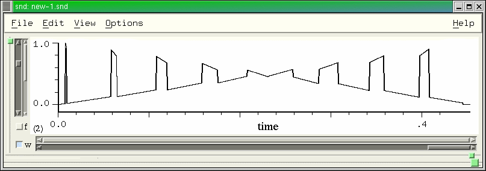
Needless to say, this is not intended to be a suave, romantic gesture!
zip-sound applies the zipper to a pair of sounds:
(zip-sound 0 1 "fyow.snd" "now.snd" '(0 0 1 1) .05) (zip-sound 0 3 "mb.snd" "fyow.snd" '(0 0 1.0 0 1.5 1.0 3.0 1.0) .025)